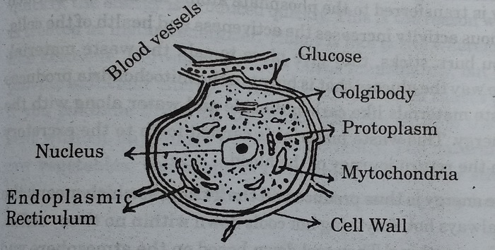
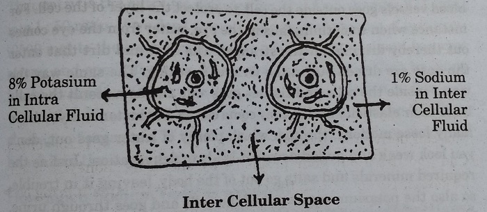

FOOD AND THOUGHT
Aaharam-Aalochana
Sukhajeevana Sopanalu-2
Take care of your Health
Your Wealth and Happiness
Will take care of themselves
Dr. Manthena Satyanarayana Raju
Translated by
M. Rajya Sri
Lecturer in English
Contents
DEDICATION
I humbly dedicate this book, with all reverence to my parents Smt. Lakshmamma garu and Sri Ramaraju garu who reared me with all love and affection from the age of my faltering steps and nurtured me to blossom on the path of Yoga and Natural Life Style.
Beloved Son
Dr. Manthena Satyanarayana Raju
FOREWORD
'Health is Wealth'. Man's health is based on his food habits. He should also have a natural life style. So man can be called perfectly healthy only if he follows natural food and natural behaviour. A wise man requires a natural life style. But the modern man is devoid of peace since unnatural behaviour and unnatural food have cropped up into his life style.
Human body is not merely the physical body! It is a wonderful combination of three - mind, desires and food (Manomaya, Kamamaya, Annamaya). The man who works out of these three is automatically energetic. Man's mind comes down to these three bodies to lead his life properly. It crosses these compartments through sleep and attains its natural state. The specialty of Yogis is - they attain this natural state even when they are awake. Our indriyas work according to the thoughts that rise in the mind. So an intelligent man exercises his intelligence and works accordingly. For them the body is only a means, but they are not the body itself. Whereas many think they are only the body! To help such innocent souls, Mother Nature sends wise people to them. Their exemplary life becomes a source of inspiration to the innocent people. They try to walk in their footsteps. This happens in every walk of life.
One of the chosen men in the field of food by Mother Nature is Dr. Satyanarayana Raju Garu. He is a selfless man. At a very early age, he experimented on natural food style, gained many experiences and enjoyed the fruits of it. Now he is knee bent on spreading these benefits to one and all whole heartedly. He has dedicated his life for the same.
An arrangement is made for man to receive prana from nature around. It is called 'Pranamaya Kosam'. So man receives the pranic energy from nature, from his pranic body. This pranamaya kosam exists in each man as 'pancha pranas'. All these put together is the 'Maha prana' of man.
If the 'prana' of man is strong, it can resist diseases. Otherwise it becomes weak. There are ways and means of keeping this 'prana' strong to attack the diseases. Pranayama and yogasanas are the time tested means. Those who do these can regain strength and energy.
Yogis have such strength and energy. So they don't have to depend on food like us normal beings. We wonder how they can survive without food since we cannot follow their life style.
We get pranic energy in a minute form through sun's rays. Early in the morning, if the first rays of sun touch our body, there is nothing like that! It gives us good health. If we tune our life to be blessed thus by the early Sun's rays, we get pranic energy without any effort. Exercises in the morning and evening are arranged for the very same purpose.
Another source of pranic energy, more minute than sunlight, is the oxygen in the air. Pranayama and exercises enable us to receive this most useful oxygen well. That's why our elders insist upon a good ventilation in our houses for sun and air. Air conditioning is harmful! Sleeping in the open air is very good for health.
Water has more pranic energy than air. So drinking plenty of water is good for health. Saints have proclaimed, 'Water purifies both men and angels'.
Fruits have greater pranic energy than water. Vegetables have more than fruits. Root vegetables don't have much since they are not exposed to the sunlight. Thus when the pranic energy comes down in a bigger item, the matter is more, but energy is less.
Wise people-opt for the food which has more of pranic energy but less of the matter. Other people eat vice versa. They eat food which has more of matter, but less of pranic energy.
If the latter food style itself is not very useful, cooking such food for mere taste is totally meaningless. Ruchi is streamlined only to receive the nutritious food since we cannot eat certain vegetables, grains and pulses raw! Cooking is meant only to enable us to eat them. Those who appreciate only ruchi are likely to fall sick.
Dr. Satyanarayana Raju's natural food style, in such a situation, is very useful and very essential. He is praise-worthy since he showed a new path in naturopathy! His special features are - drinking water in a systematic way and drinking honey during Upavasa Dharma. Greater than these is, giving up salt totally! He has experienced himself personally and then he is spreading far and wide. he is showing a new path to the sick and suffering souls! He is a blessed soul since he is a humanist, on the advice of his father.
I do strongly proclaim that his book 'Food and Thought' (Aaharam-Alochana) will help mankind at large. The knowledge imparted and the life style advocated by him are a boon to the unhealthy people. Helping the needy is a saintly task! I am very much sure that God will stand by him and help him in manifold ways to be successful in his philanthropic mission.
I wish him all the best.
Dr. Kambhampati Parvati Kumar
Honorary International President
The World Teacher Trust
(Jagadguru Peetham)
Visakhapatnam
Date:9-1-1998
A Request
Man's life purpose is to lead a happy life. The first step for that is to be healthy.
Health is life insurance
Success and happiness insurance
But the tragedy is in the modern days, man is walking on the wrong path. You can attribute it to one of these causes or all these - his age old habits, the circumstances around him, the unnatural food he eats and his temptation for that. The greater tragedy lies in the fact that he knows what he wants but he is not in a position to follow it. Whatever is the reason, it is high time something is done to save him. It has to be done through medical field and through spiritual thinking. The cure for disease should not be through medicine, but through natural food style. It should take him closer to Mother Nature.
I suffered from ill health at a very early age. The attempts I made to regain normality made me think. I got an inspiration. I discussed the Natural Life Style I evolved and followed, the happiness and the feeling I experienced, the health I got back, with stalwarts in medical field. I am making those who have faith in me and my life style follow this new methodology. For the past 8-9 years I have been following and spreading this natural food style. It is giving good results undoubtedly. It may not provide the expected results if it is not strictly adhered to, but of course there will not be any adverse effects.
Inspired thus by this good style I put it down on paper. This book 'Food and Thought' deals with restrictions of food and its utility. I have dealt with in detail why we should give up the harmful ruchis, what I have derived by Mother Nature, what I learnt through books and what our elders have told us - I have co-ordinated, mixed and analysed all these and I have written in such a way that even a lay man can understand it. I have penned down my experiences, observations and my feelings regarding the seven ruchis like salt, sour, chilli, oil, sugar etc.,
You have been accustomed to these ruchis for ages past. But now they are not helpful for you in any way. But you may feel that you are deprived of the food you are about to eat. But my observation is different. All these ruchis are very harmful for the body. They are the root cause of evil. This is related to your health and in turn to your happiness. So my sincere advice to you is you first read this book with open mind. Then think it over. Consider this life style. Implement it and experience the changes for yourself.
There lives more faith in honest doubt
Believe me, than in half the creeds.
If your experiences are different from what I have explained and if the things highlighted in this book have to be changed, please feel free to write to me. I will happily receive it.
Nature is an ever-changing laboratory. Change is an inevitable aspect of not only life, even of Nature. So I request you to share your experiences and feelings with me. Your suggestions are like encouragement given to me who follow natural life style and natural food style.
Speak out! Come out with your thoughts. Bless me. There are many well-wishers. My regards to all of them. I seek the good health of all. I insist 'Health is Happiness'.
With regards
Manthena Satyanarayana Raju
Acknowledgments
The waves are rolling on the banks of Visakhapatnam. I entered the City with my own doubts and fears about the reception of the people to my Natural life style and my experiences. But they were as deep in understanding as the deep sea. They were as accommodative as the calm sea. They readily accepted my Natural Life Style and left me grateful to them. I can never repay to those people of Visakhapatnam.
I was provided a place in Sri Shanthi Asram in Visakhapatnam to spread my life style. I am really lucky that way. I could deliver lectures to one and all there in the Ashram. They were like an umbrella to me in the hot sun. I am ever grateful to them.
One flower from each house becomes a garland to lord Siva. Publishing a book is like doing a Yagna. Many people have helped me, encouraged me and stood by me in this yagna.
My heartfelt thanks to
- Dr. Kambhampati Parvathi Kumar for writing a wonderful foreword for my book.
- Sri Vijay Kumar, Director of 'Vijaya Nirman Company' for providing me a peaceful atmosphere and for helping and encouraging me.
- Sri B. Sasi for having patiently read and corrected my manuscript.
- My patients who have undergone treatment with me and who have written down their experiences with me.
- The Press authorities to have printed this book in a giffy in a beautiful form.
My thanks to one and all.
Manthena Satyanarayana Raju
An Introduction to the Translator
Smt. Madduri/Kasturi Rajya Sri was born and brought up amidst books. She is the youngest daughter of Smt. M. Leelavathi Devi and Sri M.N. Rao. Her mother was a graduate in Maths in the days when women were not much educated and she was a censor board member in Chennai for more than a decade. Her father, Sri M.N. Rao was one of the founders of M. Seshachalam & Co., Andhra Pradesh Book distributors, Home Library Plan, Emesco Pocket Books, Emesco Sampradaya Sahithi, India Book Exports, Pragbharathi Publications. He served as the President of Federation of Book Publishers and was an international figure.
Smt. Rajya Sri, being brought up in Telugu publishing family and having been a post-graduate in English Literature, seized the beauty of both the languages by both hands. She showed her creative talents in both and in rendering a translation of one from the other. She has been working as the Head of the Department in English, in Nagarjuna Junior College, S.R. Nagar, Hyderabad for many years.
Smt. Rajya Sri, edited many Telugu novels, wrote the back cover matter for them, wrote many short stories and articles for Telugu magazines. She prepared a Grammar book in English through her experience in class room teaching for more than two decades. She translated from English to Telugu, Alice's Adventures in Wonderland, A Cry from the Heart, many issues of Varka (Children's magazine). She translated short stories of famous writer Smt. Govindaraju Seetha Devi from Telugu to English.
Her present translation 'Food and Thought' of Sri Manthena Satyanarayana Raju's 'Aaharam-Alochana' makes you wonder whether she is a science graduate. So clear is her description, especially of the structure of a cell.
Smt. Rajya Sri's style is simple, clear, lucid, striking-forceful and argumentative. That's how she was able to convey the forceful thoughts of the famous Naturopath as effectively as he has done.
The simple sentences like 'The curve of success is in favour of sugar rather than jaggery', the poor mind was weak-hearted, he wanted to yield unconditionally. 'The situation is tense but under control' speak about her lucid style.
The chapter on 'Miss Chilli' is the highlight of the book. It starts off on a mischievous note and ends in a very touching way!
Her argument is so forceful, there is no counter argument to it. See if you can do so for this - 'The reverse law is not always good. From Christmas to New Year it is only one week. But from New Year to Christmas, it is almost one whole year.'
She has supplemented Dr. Raju's ideas with a few interesting and adept quotations like
'To get his wealth - he spent his health
And then with might and main
He turned around and spent his wealth
To get the Health again.'
This is only to state that Smt. Rajya Sri has put in every effort to make the work 'Food and thought' a most interesting subject to be digested and pondered upon!
She has translated Sri Manthena Satyanarayana Raju's Aarogyame-Anandam from Telugu to English. He is a pioneer in Natural Life Style and his books on health are like Bhagavat Geetha to Telugu readers.
I wish her every success in her work and my blessings go to Dr. Raju to spread his mission far and wide, all over the country and all over the world through the humble effort of Smt. Kasturi Rajya Sri.
May God Bless you
Dr. M.V. Subba Rao
B.A, B.L, D.S.M.
Siddha Medicine
President of Gurudatta Mainpeetam
Secretary, Theosophical Society
Machilipatnam.
28-5-2001
A Window to Nature
-M. Rajya Sri
Night spread a black blanket over the city. After a little while our front gate, the bushes before it, the big trees away, the small fruits hanging over were seen hazily first and then clearly. Then came up Sun God in all his dazzling beauty blowing out, God knew where, the black blanket! The dew drops were like pearls on every blade of glass! What a wonderful sight! I grew up with that sight! I sat on the staircase of our house to study, in the early hours and studied all these!
Watching Sunrise has become my favourite hobby and I developed a liking for nature. This made me opt for English literature and learn all about Nature poets like Wordsworth, Shelly and Keats. I learnt how Wordsworth grew up with Nature - how he treated it as a playmate, as a teacher and as a philosopher. Our class room opened up on to the Sea. Our college clock-tower, the shining tar-road, the cars sliding down, the pavement, the small bushes all along colourful flowers, the brown sand, the blue sea and at the far end of it, the sky playing with it, always allured me! Blended with the thundering voice of our lecturer, I could hear the silent roar of the waves afar, the hustling of leaves, the buzz of the cars. What a surprise! The blue sea was not blue throughout the day or throughout the sea! It was in different colours at different layers at different timings of the day! The greenery was not in the same green - light green, yellowish green, dark green, brownish green and what not!
With one eye to nature and one ear to nature poets, my love of Nature was soaring high like the soaring Sun. The rays of Sun penetrated into my every writing, every explanation in class room and every conversation. I always said, people react differently to the same aspect? Take sunrise for instance! A layman sees it and says 'Oh! How wonderful?' and forgets it later. A painter draws a painting of it. A poet describes its beauty. A scientist explains why the blue sky is red in colour at that time. A novelist describes how her hero watches sunrise from the balcony drinking coffee and how he remembers his lady love whose cheeks have turned a similar red for some mischievous act of his!
That's all! Not more than that! I knew only that much! I thought dawn is so wonderful, so marvellous, so gorgeous! Little did I know that the early rays of Sun are so important, so helpful to us! I did not know we get pranic energy from Sun! I knew only to wonder at the beautiful creation of God! God is great! He created a marvellous beauty and an ugly duckling. He created a small seed and a big banyan tree! How surprising I thought! I did not know how useful his Nature is to Man! I looked at it in only one direction.
Every time I attended a flower show. I wondered at the Creation of God looking at the variety of flowers - in different sizes, shapes and colours and appreciated the capacity of man to bring them under one roof!
That capacity of man shrinks in size before the capacity of this single soul, a pioneer in Nature Cure, Dr. Manthena Satyanarayana Raju! All alone, single handed, he is showing us mortals how useful the gifts of God are for us and how we must lead a natural life and derive pleasure out of the natural taste of fruits, seeds and vegetables provided.
Dr. Raju has opened to me a new window to Nature, a new meaning to sunrise, a new understanding of God.
God is not just great! He is really great! He has blessed me through Mother Nature and through Mother Nature's beloved son, Dr. Raju. All along, I have been teaching the beauty of Nature, henceforth I will be preaching the blessing of Mother Nature!
- M. Rajya Sri
1. Life Style - Presently and Days of yore
Man is influenced by the people around him. 'A child's vocation is endless imitation'.
So the children learn the good or bad habits of their elders. Good habits inculcated will tighten his bond with good heart and good health. Such a bond is as inseparable as the bond between a tree and a creeper. The same way friendship with bad people will lead us towards bad habits. As mentioned in Bhagavat Geetha the common people follow the footsteps of great saints. Our thoughts are based on the food we eat and in turn our actions are based on the thoughts we get.
'As you sow, so you reap'. As you live, so is your health. Let's analyse the food style our elders followed and the food style we are presently following.
Festival of Dawn: Our elders said, 'Early bird catches its early prey'. But how is it possible for you, when you sleep so late in the night? It may be good to get up early, you may desire to enjoy its pleasures, but you are tied down by your job or your business. You think you can meet people only late in the night. So you can't reach home early! So by the time you get up, the sun is soaring high in the sky. You long for bed-coffee or tea.
Your body will be involved in the excretory action in your sleep and the action goes on even after you wake up. The energy of the nerves will be centred round the large intestines as soon as you wake up, since all the waste material in your body will be stored up there. So your mind will not rest until it sends out all the waste material sent there all through the night. This waste material and faecal matter is sent from small intestines and stomach to rectum. The nerves holding the faecal matter will be ready to release it once you get up. So if you don't do any other work and don't think of anything else, your energy will help you have a free motion.
Instead, if you drink bed coffee before you get a motion, the energy concentrating on the motion has to be diverted to digest the coffee. It keeps aside its duty of sending out faecal matter and gets busy in the stomach. This excretory action will go on till you eat some tiffin.
This action of sending out waste matter slackens as the sun's rays become warmer. As the sun's rays become warmer, you feel hungry and you can of course start eating. Suppose you get up at 8 a.m.! There is no time left for excretory action. You feel it's too late and so you hurry up your actions! You brush your teeth and have your breakfast immediately after that. Instead, if you get up at 4 or 5 a.m. your stomach will be free for 2, 3 hours like that of your ancestors. That's a precious time for the body to send forth the waste material. If you get up early in the morning and have a free motion, you feel free! After that some physical exercise, yogasanas or pranayama help you to send out the waste material churned out at night. The same way, if you drink more than a litre of water, the waste material which reached the blood, and the waste material which has been formed at night, joins the water and comes out in the form of sweat, urine and motion. Again you should drink one more litre of water to enable the body to clear itself of its waste material. In such a way if you just supply water and nothing else and do some exercise, then the body will fulfil its dharma (excretory action) completely. That's a happy morning for us.
Brushing of teeth: Shall we analyse the aspect of brushing of teeth? The smell at the mouth is the speaker of the purity inside your body. The tongue is the mirror to the body. Your tongue speaks about your health or ill health, it shows your bloodlessness. Those who have constipation, those who have bacteria in intestines or toxins in liver, and those whose waste material is not sent out properly these people's mouth gives a bad odour.
Do the other creatures brush their teeth? Does their mouth give a stinking smell? Then why do man alone get this smell? If somebody's saliva spits on us in the course of their conversation, we get irritated. We clean ourselves. Whereas if a small child spits on us, we don't mind! We brush it aside happily! But when the same small baby grows up into an adult, does the same action on us, we don't like it! We clean it very irritatedly. You know why? The baby eats pure food and is pure at heart where as an adult eats food cooked to satiate various ruchis and he is not good at heart. So the latter's mouth has a bad smell and so irritates us.
The man who cannot bear the droplets of saliva of a fellow human being, happily allows his pet dog suck his hands or body! He enjoys that action of it! The dog eats the food he eats and lives with him. It doesn't brush its teeth, but still its mouth doesn't give a bad odour. On the contrary we brush our teeth once or twice a day! That too with a paste which gives a good foam and a good odour! In spite of all that, we send out bad smell. So any man can bear a dog but not another man. That is the fate of man.
The saliva in the mouth gives a bad smell because the saliva has no movement in the night for about 6-7 hours in the sleep, because of the bacteria in the mouth and because there is no flow of air. Also the phlegm from the lungs comes and gets stored at larynx and pharynx in the throat.
You don't have to do gargling if you eat the natural food provided by God. You don't need a tooth brush. The masalas and the sweets you eat cause bad odour and that's why your teeth get decayed. Pan and nut powder spoil the teeth. If you are healthy, your teeth will not become weak, not one tooth get loosened. We assume that the decay of teeth is a symptom of old age. It has become so, because all the people eat salt, masalas and sweets! But this is not the symptom of old age for animals. Why? That means the fault lies in our food style and not in our age. People neglect their teeth because they can get dentures.
Much of saliva doesn't get secreted if you brush your teeth with tooth paste. Instead if you use neem stick, the bacteria in the mouth goes out. Old order yields giving place to the new! The same way, the bad saliva goes out due to the bitter taste of the neem and new saliva gets secreted. So you feel very fresh if you brush thus.
In the olden days, our elders used to keep their fingers deep into the mouth till they vomit. All the phlegm that got stuck in the throat came out due to that. But nowadays, we are brushing our teeth in the closed quarters. So we don't want to create such a noise and so finish it off silently. If we don't send out during brushing, the bad that has reached the mouth at night, goes back into the stomach again, when we eat something. So it is always better to spit out the phlegm at the time of brushing. It is advisable to brush the teeth with neem stick whenever possible.
Sweat and its story: Skin is an excretory organ. It is called a third kidney. Every day the skin lets out two litres of waste material. A part of the waste in our body comes out in the form of sweat through the pores in the skin. If we don't sweat, it will be hidden in the layers of skin. It comes out easily for the people who sweat.
For instance, when we clean the house with water, doesn't the dirt in the house get dissolved in the water and doesn't it move out along with the water? The same way the dirt in our skin comes out only through the sweat. That's why our elders said only those who do shramdan are entitled to eat. It was Gandhiji's principle too. It is true to the core.
Your body has to get heated up if you have to sweat. If your body has to get heated up, you have to work, which means the body gets heated up only to those who work. In such a condition, there is a quick movement of the blood circulation to all the parts and cells. Those who work, inhale more of air. When more air is inhaled, heat is produced. More pranic energy is required to burn all that is bad in the body and to send it out. If we sit idle we don't get more of pranic energy! Everything is inter-related. The amount of pranic energy we get is based on the nature and the speed of the work we do. The sweat we get is in turn based on the pranic energy we get. For those who work, the bad goes out in the form of sweat through the skin. You do get sweat though you sit idle when it is sultry at home. But that sweat has only water and no waste material. The fat doesn't get dissolved with that sweat and that doesn't give you good health. So the sweat that comes out of more pranic energy created through physical work is helpful for good health, for the health of the skin.
Those who don't sweat through work, just eat and gobble food three times a day, how can they send out the waste material excreted out of the food? There are manifold advantages for those who work, this waste material goes out through skin and through other excretory organs. Secondly one who sweats a lot drinks plenty of water, so automatically he urinates more, in which process waste matter goes out easily. Thirdly, because he slogs a lot, he feels very hungry and so can relish the food he eats. If the food he eats contains more of fibrous material, more quantity of motion will be produced. So more of motion moves quickly in the intestines and so comes out easily.
Fourthly, the one who works, can take a deep breath of oxygen. When more oxygen is inhaled into the lungs, automatically more carbon dioxide is exalted out. As a result, the bad that has to go out through the lungs goes out every day for those who do work.
So, when the waste material goes out daily through these four sources - lungs, urine, sweat, motion, automatically the liver, the fifth one, is in good condition. As long as the workers do their work normally, the boss is happy. When everybody carries on his work smoothly, nobody will suffer. The same way the boss of our body the liver will be happy.
'Is life worth living? It depends on the liver!' Yes it depends on how one who lives takes care of his liver. So if the man 'liver' works properly, the organ 'liver' can function properly and send out the waste material through all excretory organs.
Do all these happen to a man who sweats? You see, when the body gets heated up, the waste material gets ready to come out of the cells due to the heat. Heat expands, cold contracts. It applies to man too! You examine yourself! During hot summer you stretch your hands and legs and sleep flat. Whereas in winter you sleep like number three.
Anything expands in heat. So when the body gets heated through exercise, blood vessels, muscles, limbs & cells expand and blood circulates easily. As a result there is an easy outlet for the dirt to come out of the cells. Instead we eat without working, the waste material that is produced, remains in the body and produces cells with toxic substance. The bad that has to go out through sweat, remains in the layers of skin if we don't sweat. That means a seed is sown for diseases to crop up.
Specialty of bathing: Now, let us analyse this aspect. Everybody has generally the habit of bathing in the morning, but they just do it for name sake, quickly. If you understand the impact of bathing, you can't take it so easily. More number of cells in our body receive coldness and only a little receive heat. Elders referred to cold water as water with life and boiled water as dead water. So if you bathe in cold water, there will be both expansion and contraction for the skin, bones and blood vessels, whereas if you bathe in hot water, they only expand.
You should have head bath with cold water in the morning. Mostly people bathe only from below the neck. Don't you think the head is yours? Is it enough if the body is purified? Don't you have to purify the head? Most important factor is to cool the mind! The mind which functions all the 24 hours, works to some extent even in sleep. So such a mind has to be cooled, to make you feel peaceful.
Head bath in cold water enables a free blood circulation to the head. If you bathe in cold water, only till the neck and don't pour cold water over the head, all the heat in these lower parts goes into the head. For example, if you pour water over the hot floor in summer, doesn't the heat in the floor come out of it? The same way, if you don't wet the head with cold water, the heat that emerges out of cold water bath, goes at once to the upper region.
Actually we are not supposed to make the mind heated up. But on the contrary we are doing so, instead of cooling it. As it is, we are heating it up the whole day through heated arguments, tensions, irritation and anger! Should we heat it up even while bathing?
Knowingly or unknowingly, we are doing a grave mistake!
Our elders compulsorily took head bath in the morning with cold water. In summer they safeguarded their head by using umbrella and wearing slippers. But now, our habits are different. The intensity of habit is like this. As it is, it is a monkey, it drank wine and it jumped over fire. We bathe only once, that too in hot water, that too only for the body. To top it all, we bathe with soaps & shampoos which give foam at once without any effort on our part. There are some ingredients in soaps which clear the dirt and create foam. They are called surface active agents. Those agents not only drive out the dirt, but also the delicate layer over the skin. That's why, the skin looks dry & pale after we bathe with soap. Because the skin looks dry, we apply cold cream or oil over it. We think our skin should always be soft and shining brightly.
In fact the skin is shining brightly for all of us, but we spoil it with soaps and creams. If we don't use soaps, the skin won't turn into white or there won't be cracks at the skin in winter. There is no need for creams or oil.
Another drawback with soap is, it gives a foam just with a small movement and we wrongly assume the dirt is cleared by this foam. The dirt, dust and sticky substance over the skin may be cleared by the foam. But the easy foam without rubbing the skin much is as harmful as gulping the food at one shoot. If we eat the food with more of salt & chilli powder, saliva is produced and we gulp it quickly without chewing it properly. Since we don't chew it properly, the food won't be digested properly.
The same way, because the foam is produced quickly in the soaps, we don't massage the skin properly with the hands. Our elders did not use soaps. They bathed with bathing powder or just with mere hands. They rubbed their body thus to drive out the dirt over the skin. Such a rubbing, heats up the skin. That is because, by such a rubbing, more of blood from inside comes to the skin. So one of the benefits is, there is a free blood flow to the skin at the time of bathing.
The second benefit is - the dirt stored in the pores of the skin comes out by a hard rubbing. Generally the blood circulation to the skin is done slowly since skin is the last part. 'First come first served'. This applies not only to food but also to blood. The heart pumps blood faster to the parts closer to it and slowly to the parts far apart. That's why skin diseases don't get cured quickly.
So, to get more blood circulation to the skin, we should rub it a lot to heat it up. If we use soaps, we can't rub it much. So it's not advisable to use soaps. If we don't use soap, we can rub hard all the parts with our hands to clear the dirt. When we clean the legs we should clean it from the ankle down to the thighs above. The same way the hand from the wrist to the shoulders, because that is the way the blood flows in our body.
We are all accustomed to clean ourselves from upwards to downwards. By such an action, the blood which has to reach up to the heart, we are driving down with our hands. So we are giving a reverse action.
Let me tell you one good method of bathing. You take a soft, white napkin to the bathroom. If you so desire, you can apply oil before bathing. You keep your bathroom devoid of soaps. First you wet your body totally with one bucketful of water. Then you wet the white napkin, squeeze it and rub your whole body with it. You can even rub your head with it. It may take 10-15 minutes. By the end of 15 min. the skin gets heated up and you start sweating. The white napkin becomes dirty. The dirt in the pores of the skin comes out in such a way. After rubbing the body thus, pour again a bucketful of water from over the head. By doing thus the blood vessels and the skin pores which have expanded due to the rubbing, again contract due to the cold water. Such a cleaning of the feet doesn't allow cracks at the feet. Chances of getting skin diseases are less. You can save on soaps. The freshness you feel at face and skin after the bath, remains till the evening bath time. This is called 'complete bath'. You try and see! You yourself will accept it. You will gauge for yourself how much harm you are causing to your body in the name of bath and soaps.
Breakfast: Now let's analyse the breakfast we take. It is called so because we are breaking the fast of the night. If we can give rest to our body at night it is called fasting. The body makes its own attempts to clear itself of the waste material at night in the rest provided for it. Fasting means what? Providing more energy for the body. Six to seven hours of fasting at night is put to an end by a slight food. How should such a food be? Can we see at once bright light as soon as we open our eyes after 7 hours' sleep? No! we slowly open them and slowly they get used to the brightness around. Just as we acclimatise our eyes slowly to the bright light, the same way we should acclimatise our intestines, which have been at rest, slowly to the food.
The sun's heat is less early in the morning and it reaches its maximum at 12 noon. The same way the appetite in our intestines too slowly starts in the morning and reaches its intensity by 12 noon. Since the acids will be less in the morning, the tiffin should be such that it should increase the acids, but should not kill them. So we should eat the food that can be digested easily with less quantity of acids.
We don't light a fire with big sticks initially. We kindle the fire with small pieces and once the fire is produced, we use big sticks to intensify it. Once it starts burning, even if we add green sticks they get burnt up. So it means to light a fire we need things which are very dry and which are easy to burn, and once it catches up, other sticks too can be used. The same theory applies to the food supplied to our stomach.
The food we take in the morning should contain vitamins, minerals and natural enzymes. Such a food can get digested with less quantity of acids produced in the stomach and intestines. This food will be relished by the intestines after 6-7 hours of their rest. The food should be honey, lime juice, fruit juice, sprouts, coconut and dates. This type of food not only gets digested easily without troubling the intestines much, but it also helps the excretory organs to send out waste material. This food is like small pieces used to light the fire.
We have been, all along, taking bed coffee and tiffins like poori, dosa, upma etc. These tiffins are made out of oil. They are supplemented with chutneys consisting of salt and mirchi powder. Do you think such a tiffin can provide you natural vitamins? No never! Natural enzymes are impossible! Added to that imagine how much the empty stomach should struggle to digest the oily food! Is it proper on our part to provide such food on the stomach and intestines which have slogged all through the night? This is like creating a fire straight away with big sticks. We need more water to digest the oily, salty food. So when we eat such tiffin and drink much water immediately, there upon the food is not digested properly and it becomes sour in the intestines.
Food of Yore and today
Now let's consider our food habits. It's good for health to eat food before 12 noon. At 12 noon the sun will be soaring high and the same way our hunger will be at its peak. It is better to provide solid food when you are hungry. Solid food means food which provides energy for the body. Such a food consists of Rice, Pulses, Curds, tubers etc. It is advisable to take as much as you can of these items, in the morning food. If you delay taking the food (say beyond 1 p.m) your hunger starts subsiding. So, if you delay your lunch, you don't feel properly hungry at night. Not only that, towards the fag end of the day, the sun slowly loses his brightness and the gastric juices produced in our intestines slowly get reduced and as a result our hunger dies down. You can understand this if you have noticed the fact that we feel relatively less hungry at night than in the morning. Our elders used to take less food on a cloudy day. But in the present day, people eat more varieties and more harmful food at such a time.
Let's examine how the modern culture has changed our eating style. Our elders used to wash their feet before eating. Then they sat on the floor with their legs folded. Those two actions had two benefits. The first action of washing of feet with cold water enables a quick flow of blood upwards The second action of sitting with the folded legs prevents the flow of blood downwards. So the extra blood gathers at the intestines. That means the blood that has to reach the feet is spread to the stomach. Since more blood is supplied to the stomach, food is digested more easily & quickly. There is yet another benefit. You are forced to bend your back a little while eating, if you sit on the floor. So in the process a part of the stomach gets closed. So even if you eat your stomachful, once you finish eating and get up, one third of your stomach is still empty. To eat only up to two thirds of your stomach and leave one third is always good for your health. This is involuntarily done for those who sit down and eat.
The moderns on the contrary, are not benefitted in any of these three ways. They don't wash their feet, they don't sit down. So they don't fold their legs. Since they have table meals they eat to their stomachful i.e they can fill it cent percent. As a result they feel heaviness of stomach. If you eat so much it takes a lot of time for the food to move or for the secretion of digestive juices. Not only that, since the food doesn't get mixed up completely with the digestive juices, useful items also leave the body through motion.
Some people say they can't eat food without three, four varieties of curries. They won't be happy unless they are served so many. This is the present day culture. They need plain dal. Plain dal is not relished until mango pickle is mixed in it. Since you cook dal separately more salt is required for it and since dal alone cannot be eaten with rice, you have to add pickle to taste. Where as our elders used to mix vegetables or leafy vegetables in dal itself. Since the vegetables themselves have some salt in them, it is enough if a pinch of salt is added to dal. And such a mixed dal is tasty, so it doesn't need an appetiser. So they never ate pickles daily. They used to preserve pickles in jars and tie a cloth over them. Those pickles for them were only for a rainy day, say when they could not get vegetables or when they had no time to cook. In such a case they used them as a substitute. They used to take out only a little pickle the day they needed and preserved the rest safely aside. They used to feel it was not good for health to eat pickles every day. Even if they left like eating one day, they did not want to take the trouble of bringing down a big jar and taking it out.
On the contrary, now-a-days we are keeping a variety of pickles on the table in small jars. It is quite natural to be tempted to eat them since we see them right under our nose. The elders felt they were not for everyday use since they preserved them in big jars. We feel it is a must everyday. They ate only for dire necessity. We made it a dire necessity. That's the difference between olden days and modern days.
Our elders prepared the pickles once a year and ate a little more during the early days since they would be very tasty then. In due course they lost interest, when it lost its new flavour. So they reduced the use of them. Where as now, today varieties of new pickles are available throughout the year in small jars. So we buy them as and when the pickle is over. Before the flavour of it is lost, the bottle is empty and we go in for a new one. that's why there is so much demand and price for salt.
In the olden days they used only mango, amla, tamarind, ginger, chillies for pickles. Generally they were available only once a year Whereas now people have accustomed themselves to vegetable pickles too. The diseases are directly proportionate to the variety of tastes. The pickles won't remain for long if sufficient salt and oil are not added. Consuming such pickles everyday which are with more of salt and oil are harmful to the body. Just as the pieces in the pickles get hardened, the same way due to the salt in the pickles the nerves and blood vessels in our body get hardened and lose elasticity. We are carried away by the delicious taste of the pickles ignoring the harm caused by it. We brood over life only when we fall sick. We shouldn't forget the fact that the ruchis which allure us only cause diseases and leave us in troubles.
Another drawback today is you cook three four curries for lunch. If you cook four varieties of curries, for every curry it needs separate seasoning, salt and chilli powder. As a result you are using more of salt and oil. Instead if you eat only one or two curries, you will be using less of oil and salt.
There is yet another problem by cooking many curries. The one you like more, you eat more ignoring the others. So you start commenting about the taste of each item and you don't get used to eating everything. Instead if you have before you only one item, you will be forced to eat without commenting, so you learn to relish that item.
For example, let us say there are many passengers waiting for a bus. Suppose an empty bus arrives there, the one who gets in first, feels like sitting near a window. The second batch of people think that they should not get the last row, they should be lucky enough to be seated some where in the middle. The third batch don't mind the last row, as long as they do get a seat, The last one who gets in doesn't long for a seat, he only feels he should at least get a place to stand. So the one who is mentally prepared to stand, if he gets a seat at once, he gets a greater satisfaction than the others. So if you have only one curry you can eat a greater quantity of that, with a greater satisfaction.
Now-a-days, You eat 'rasam' everyday! Many people feel their eating is incomplete without it! What are the ingredients in that? Tamarind, water, salt, chilli powder, seasoning. That's all! Do you think any of these are useful for good health? At the most you may add a little of Asafoetida, pepper, dhania. Does it help you in any way? What's the use of eating it everyday when it is not useful? We mix plain rice with that 'rasam'. How does eating more of rice help any one?
Our elders used Rasam only when they had to substitute it with curries or as a medicine when they had cough or cold. They added pepper, dhania to it and used it for treatment, whereas we got used to its taste everyday.
It's quite normal to feel thirsty while eating food which comprises of salt, chilli powder or oil. You keep drinking water during meals without realizing whether it has any good impact or not! This is because of salt and oil. You need more water to digest salt, oil, ghee in the intestines. So the body makes you drink more water. Drinking water along with food dilutes the acids produced in the stomach and reduces the energy. Since the acids are not energetic, the food will not be digested easily. The food that is not digested properly in the stomach, doesn't get digested easily in the small intestines too. The undigested one comes out in motion. Suppose you rinse the dirty cloth in water immediately after applying soap to it, does the dirt get washed out? No! You have to soak the cloth in soap for some time, then wash it! Then only it gets rid of the dirt. The same way if you drink water after the food is mixed with acids soaked and digested, then it is good. Then it will be easier for the digested juice to join water and travel into blood.
Why are you felling thirsty? Is it not because you have taken oily, salty food? So why don't you try saltless curries or raw vegetables? Can you believe that if you eat thus, you won't think of water? Bhagavat Geetha advocates us to eat food that doesn't make us feel thirsty! So you analyse for yourself, the food that provokes thirst - is it harmful for health or useful for health?
You feel like eating more food if it is very tasty. By eating your stomachful you feel drowsy. Our elders say afternoon nap is not good for health. When we eat our stomachful, the major quantity of blood from various parts of the body leave those parts and gather in the stomach to digest the food. That's why if we eat plenty of food, we feel drowsy. On the contrary, if we eat less we don't feel so!
This is the underlying principle behind our customs and tradition! During marriage the bride's parents are not supposed to eat food. They are given only fruits and milk. The same way during death ceremony the ones who perform the rituals are made to eat only once a day! The same method during Poojas and Vratams! We have seen how Satyagrahas are followed to achieve good tasks. If we keep the stomach light, it keeps the body light which in turn helps us to do our work easily. If we eat food that can't be digested easily, the body which has to co-operate with us becomes weak.
If you do any light work after midday meals, the food gets moved easily into the intestines and into lower parts. If you sleep, the movements of food in the intestines will be less. The movement of food is based on the contraction and expansion of the intestines. If you sleep immediately after eating food, the food remains in the stomach and intestines for a long time and so you feel the stomach is heavy & empty. That's why those who sleep for a long time feel lazy after they get up. Just a fifteen minute's nap is alright but not a deep sleep!
Snacks: Now it's evening. Everybody longs for hot bajjis, sweets and hots! In fact theoretically your hunger keeps subsiding by this time! But you are getting ready for snacks even before your midday meal is digested properly. Food eaten when hungry is nectar, but the same food eaten without hunger is poison as per the good old saying. In the evening if you take light food that kills what little hunger you have, it harms your health. On the contrary if you eat the same ruchis (tastes) at the right time with the right food, the harm will be less. That was what our elders had followed! If they had to eat sweet and hot, they used to eat in lunch, along with lunch. If they had to eat after that, they did not! They ate only the next day. they said hunger would die down if they ate on an empty stomach. They said oily food made them bilious. That is very much true. To digest oily food, more quantity of gastric juices will be produced and so cause such an uneasiness. Aren't sweets and hot filled with fats?
There is an advantage of taking sweets and hots along with lunch. The fibrous material in the curries and rice obstruct to some extent the fat content going into blood. Instead it sends out through motion from intestines. There is no fibrous material in these snacks. So if you eat them separately, all the fat in it gets stored up in the body which causes harm to the body.
It takes a lot of time to digest the fat in the sweets in the intestines. In the morning digestive power will be more and it helps for physical strain & digestion. So if we take such items in the morning, we not only reduce some amount of harm to the body, but also reduce the strain to the body. That's why our elders arranged grand gala parties in the afternoon. Since they did physical work and followed such rules for good health, they ate and relished all ruchis heartily life long. The snacks in the evening between 3 and 4 should be fruit juice which is good for health & body. That food is the right food for the hunger at that time. Such fruit juice will be digested easily within an hour without strain to the body and keeps you ready for dinner. Such food only safeguards your body. Artificial ruchis cause harm to the body. So it is you who have to decide whether you want harmful food or useful food!
Work is Worship: In the olden days, for want of proper facilities not only for farmers and businessmen, but also for job holders there used to be heavy work. The work was more for their body than for their mind, but now it is the reverse law. Now the body is totally at rest, whereas the mind slogs. Actually if the body slogs, when it takes rest afterwards, the mind also automatically relaxes with it. This is the path of 'Sukha jeevanam'. On the contrary if mind works more, you miss both mental rest as well as physical rest, This is the path of 'Dukhajeevanam'.
In the olden days, people reached home before dusk, probably because they were tired after day's work or because there was no electricity! They had hot water bath to drive out the sweat and tiresomeness! Since the ladies too had heavy work, they too bathed in the evenings to refresh themselves.
In the olden days, both men and women worked hard. So they ate more food and drank more water. They ate pounded rice. Since they worked hard and ate lot, the movement of the intestines was good for them and so they had motion two times a day. It seems they longed to go home to have dinner. They were so hungry. In those days since there was no electricity they used kerosene lamps. When they ate in the light of those lamps, insects fell into their plates. So in order to avoid such problems they ate before sunset. They finished their duties before dark. Since T.Vs. were not there, there was no chance for T.V mania. So the whole family gathered round to chit-chat at night. Such a happy gathering drove out the tiresomeness of the day's work. If they were still left with time, they spent their time usefully in prayer, association with noble men, Harikatha, Burrakatha etc., which provided them physical rest and mental happiness. So they had a sound sleep. The body needs rest equally with food and work. Such a complete rest was provided to their bodies.
Now let's see how we are in the modern days. It is a white collared job today for business people and workers. So they know only mental stress. Due to the stress they are always highly strung, tense and nervous. The artificial lights are so dazzling that we wonder whether it is morning or night. You have no problem reaching home late in the night. Your work is such that you don't sweat. Added to that you have fans, A.Cs at every step. You don't have time to bathe in the evening. So you just wash your face and apply a thick coating of powder. You are such delicate darlings that you can't eat plenty of food. You can't drink much of water. In the place of unpolished rice, you eat white rice which shines like pearls. You get a motion only once a day or once in two days because you eat less food, because you don't have proper physical strain and because there is not much movement at the intestines. Since you eat some snacks around 4, 5 in the evening, you don't feel hungry at night. So you eat late. In the modern days you don't have to worry about the lighting or the insects which gather round the hurricane light. You think if you eat early you may feel hungry again at night and so you may not fall asleep. So instead of eating before sunset, you eat just before going to bed.
Now-a-days you have so many means of entertainment. T.Vs, Tape recorders, ice cream parlours, bakery shops etc. Since you don't get a free motion in the evening, you don't feel hungry properly. What little hunger you have is killed by the snacks you eat just to kill time. As a result your dinner time is between 8 and 12 p.m. Some of you may eat something just because you have to eat what is cooked for you and some of you keep awake watching T.Vs and movies till the snacks get digested and then eat at midnight. All the bars & fast food centres are over crowded at nights. Parties and entertainments are arranged at nights in the modern days. Yes! Darkness is quite convenient for dark actions!
All about Dinner: Now let's analyse dinner items. Sambar is a must for many! Side dishes for it are papads fried in oil. Fried vegetables are compulsory. The modern people are accustomed to take all special items like - non-vegetarian food, pulav, fried rice, beer & brandy at night. This habit is one of the many causes of unrest in the country.
People are used to munch something or other all through the wakeful hours from dawn to midnight. Heart, lungs and kidneys can work incessantly without rest. They are built thus! But our stomach is not created thus. It needs some hours rest if it works for some hours. This applies not only to human beings, but also to all creatures. Some creatures eat in the morning and move about in day light, whereas nocturnal eats and moves at night which means these animals rest at night and day respectively.
Man is created in such a way he should work in the day and relax at night. But does he fulfil that condition? He starts eating in the morning and continues till midnight. The stomach which is supposed to work for 12 hours and rest for 12 hours is deprived of it. Since he is taking artificial food in the place of natural food, that too till midnight, poor stomach is forced to work all the 24 hours, day and night.
How long do you think the poor stomach can slog like that? Don't you think of the wear and tear? Is it not your prime duty to give it rest? Don't you take care of the welfare of your young ones? Is it not your duty to take care of your own stomach which keeps you in good health? You take care of other's welfare, they will automatically take care of you! The same principle applies here too. You take care of your body, the body will take care of your health.
God is so great! He has created special energy to the parts of your body to repair themselves from any ill health, if they are given a chance. Our dharma is just to provide the food and the rest it requires.
The duty of the body is to digest the food eaten in the morning, to carry the digested food to rest of the parts and to provide the energy required for work. The body has to repair the spoiled parts during rest, has to create new cells, has to drive out waste material. So you have to provide proper rest for the body to do these duties. If you don't do so, these activities come to a stand still and body becomes diseases prone.
When there are lots of guests in the house, the poor house wife doesn't have time to keep the house tidy. It becomes shabby with things scattered all over. She can bring it back to normalcy only after they leave! So, the way we clean, dust, wash and tidy the house whenever we are free, the same way, the body also cleans itself if it gets free time. The body which is full of guests (food) cannot do its normal chores of sending out waste material and repair work.
Our elders ate food before sunset. So their food got digested by the time they went to bed. Their intestines got solid rest of 8 to 10 hours. That's why they were fresh and energetic as soon as they woke up. They felt curds at night was poisonous. They also felt, if they did not take light food at night, the food wouldn't get digested in sleep.
The modern people eat late. They eat at 8 or 9 in the night. The food is filled with salt, chilli powder and oil which means by the time the food is digested it becomes 3 or 4 early in the morning. So poor intestines get only 2 to 3 hours rest! Don't we feel very tired and restless if we sleep only for 2, 3 hours? Don't you think the condition of the intestines too will be the same!
For people who eat oily food, pulav, non-vegetarian food around 9 or 10, it takes 8 to 10 hours to digest their food. It becomes dawn before the intestines can digest that food. So there is no rest for the intestines. It keeps on receiving food, it has no time to send it out.
We keep on accumulating dust in the dust bin and if we have no time to clear it, it stagnates giving place to germs. The same is the case with our body. That is where diseases spring up. You know something? Even if you don't eat anything for one day, nothing will happen. But if the waste material stagnates in the body for one day, it lays a foundation stone for diseases. If you take rest for 6 to 7 hours at night in the form of sleep, you will have energy to work for 18 hours. Don't you become very weak even if you eat food but don't have rest (sleep)? Proper rest is the best source of energy for man. If you work nonstop two days and nights, don't you become weak on the third day? That weakness can be driven out only by rest on the third day. The same way our intestines which work for 24 hours a day, lose their energy. The body stores waste material since it has no rest. Great waterfalls begin with a small water drop. It applies to negative things too. Great diseases spring up from small diseases which rise out of this stagnation.
We have only one mouth to eat whereas we have five excretory organs to drive out the waste material from the body. All these five have to work on the waste material created out of digested food. Isn't it crystal clear then, that so much of waste is created? So if we eat natural food and spice-less food the waste material will be less and so the body can drive it out easily. On the contrary, the artificial food we eat clubbed with non-vegetarian food gives rise to plenty of waste material which cannot be cleared in the rest we give to the body. As a result it gets stagnated in the body. So do you understand now, that the condition of the body is totally dependent on the type of food you eat?
You don't get sleep at once, if you are not exposed to physical strain. Your happiness is directly proportionate to your physical strain. The happiness you get out of easy life is not true happiness. One who longs for happiness may not get it, but one who works hard, gets it automatically. 'Hunger knows no taste, sleep knows no comfort' is the good old saying. But in the modern days you are not able to sleep with out A.Cs, fans and other comforts. You are scared you can't sleep happily without these since your body is accustomed to these! Do you know the damage caused to the body by sleeping in excess of cold air after a heavy meal? Your skin gets cooled up by sleeping under the fan in full speed or in A.C. The body protects the skin from becoming cool thus. So a part of the blood which has to help in the digestion at the intestines is diverted to keep the skin warm. That's why your body is cool when the weather is hot and vice versa. Since the blood is diverted for this purpose, the digestion takes a longer time. Not only that, the cold air hinders the process of excretory action after the digestion. In summer season more of waste material is sent out of the body at night, whereas it lessens in winter season. The reason behind the difference is cold air. You don't feel as much hunger in winter as you feel in summer.
Shall we try? Better late than never! If we amend our mistakes of yore, we can get back our lost health. To walk on the righteous path from a wrong path we need time, patience and practice. Every one of us long for good health. We also long for happiness. But do you ever know, what gives you the happiness? If you really long for health and happiness you do get happiness. No pains, no gains. Work incessantly, but do not expect the result of it. Do your duty and leave the rest to God. So shall we live according to the requirements of the body? We are always provided the means to live healthy and live long. Only thing is, we are not realizing it.
So let's try to safeguard our health in our own humble way. To begin with, let's try to get up early in the morning. Let's take up a decision that we should not eat breakfast until and unless we drink as much water as possible, urinate and do exercise till we sweat. As far as possible let's do pranayama outside, in the open air. Let's not stop pranayama at any cost. Let's have head bath everyday with cold water. Let's drink fresh fruit juice on an empty stomach. Let's also eat sprouts and raw vegetables compulsorily as food (other items can be had after eating these). We should also eat lunch before 12 noon or 1 p.m. Our lunch could be plenty of curry, curds and unpolished rice. Let's eat it with pleasure, (harmless sweets can be had, if you so desire, along with it). Our hunger in the evening will not be affected if we eat fruits and raw vegetables in the afternoon. We should again drink plenty of water in the evening to have a free motion again in the evening. As far as possible we should eat before sunset. This habit will minimise to a great extent the possibilities of falling sick. Let's eat light food in the evening which can be digested easily. Let's spend night time in good discussions, reading good books which would fill our mind with peace. We can sleep once the food gets digested. Such a routine as detailed above is good for health.
A crime is a crime whether we do it knowingly or unknowingly. The punishment is more for the crime done knowingly. Nobody can save us if we do a mistake knowingly. When we don't care our own body how can an outsider, a doctor, come to our rescue? 'Only the wearer knows where the shoe pinches'. No amount of doctors, medicines, modern equipments can drive out diseases totally. However much we are advanced scientifically we are not able to provide ourselves with perfect health. Why! The fault lies in us, not in technology. Every man is the architect of his own future. He is also the architect of his own health. So we should all take care of our health. A responsible man knows no problems or worries. In turn he is rewarded with happiness. There is no use crying over spilt milk. So beware!
2. The Body - Its Tragic State
We aspire for a beautiful house for our body which houses our soul. We take care of manifold beauties in the house - polished stones, nice colour combinations for the walls, proper ventilation, attractive wood work and what not to make it wonderful externally and internally. We clean such a house neatly everyday, mop it with wet cloth, we arrange mesh to avoid mosquitoes and glasses to prevent dust and dirt. At the door of every room we have door carpets, dustbins. We use agarbattis or scents to give fragrance to the room, use phenyl in the bathroom to drive out bad smell. We take care not to construct house on a low lying area to avoid stagnation of water and flies over it.
When we provide so many comforts and facilities to our outside body, is it not our minimum duty to take care of the soul within our body? The soul lives in the body which in turn lives in the house. So if the soul lives peacefully, so can the body live peacefully. But the irony is, we ignore the body that houses the soul, we worry more about the house that the body lives in.
Lord Krishna explained in Bhagavat Geetha, 'In the form of Vyswanara agni, I digest the four types of food you eat, bhakshya, bhojya, chosya, lehyas'. What is life? It is to realize the atma or the truth or the light or the great happiness, or whatever we call it in us. Each one of us have a spark of the divine. In that case, what arrangements or provisions are we making for the God in us? We are only bothered about the outward glitter and show of the house rather than the real inner article of us.
House for the body - House for the soul:
Body: We long for a spacious house.
Soul: Don't mind a spacious (obesity) body.
Body: Long for outward beauty.
Soul: Don't long for a glow or shine in the face.
Body: Dirty water should not stagnate at the backyard.
Soul: Don't care if dirt or waste matter stagnates in the body (because nobody can see it).
Body: Use phenyl to clean bathrooms.
Soul: Don't mind even if urine, sweat, gas give a foul smell.
Body: We clean spotlessly our polished dining table.
Soul: We don't mind spots or itching sensation on the skin.
Body: We fix glasses to avoid dirt and dust particles.
Soul: Don't care if poisonous smoke particles (Cigarette's smoke) enter the lungs.
Body: Don't repeat the same dress the next day.
Soul: Don't mind even if we don't drive out the waste material of what we ate today for four days.
Body: Offer fruits to God at home.
Soul: Offer non-vegetarian and pulavs for God inside.
Body: Clear cobwebs in the house for every festival.
Soul: Don't clean the inside house even for 12 years.
Body: Clean the water tank for at least once in six months.
Soul: Our water tank, kidney is deprived of such a cleaning for years together.
Body: If rain water stagnates at backyard, we appoint men to drive it out.
Soul: Even if body is swollen with water, we don't give up salt.
Body: Empty the dustbin at home, regularly, every day.
Soul: Don't bother about the dust inside in five dustbins (excretory organs).
Body: House should be in tact for 100 years.
Soul: It is enough if the body house remains till we retire or till children get settled.
Body: We take safety measures against burglars.
Soul: Least bothered about the presence of house burglars (toxins or insects) inside.
Body: Provide rest for motors or machines which are over heated.
Soul: In the name of Upavasam (Fasting) for the sake of the body, eat more than normal food.
Body: If iron gets rusted, we get it coloured again.
Soul: Continue eating tasty food (Ruchis) even if the body gets rusted (diseases).
Body: Clean the house twice a day carefully even at corners.
Soul: Wash the body only once, that too half the body, leaving the top portion (head).
Body: Construct a house with pomp and show to display our riches.
Soul: Ignore the body, the god's gift, yielding to our ruchis.
Body: Now and then, we dry out the provisions in the hot sun.
Soul: We don't dry out the body in the sense, don't give it rest.
Body: Everyday take care of the problems arising in the house.
Soul: Don't take care of the problems of the body even when it faces problems.
3. Seeds - The Wonderful Food
Seeds which are in different shapes and sizes are Mother Nature's Gifts to us mortals.
They have different potential capabilities as per their structure, shape and size.
We all know the great trees spring up from small seeds. That itself is proof positive that such a small seed has hidden within it all the energies required to spread forth a big tree. That is the capacity of the seed. Mother nature has hidden all the proteins and the energy in such a small seed.
You try out a small experiment! You dig a small hole to a big rock and keep a small seed in it. You cover it with little soil and pour water over it. After a few days the seed which gets sprouted, breaks through the hard stone and comes out. A very sensitive mushroom keeps erect a hard rock. How do these happen? Due to the wonderful powers of the rock.
Some seeds behave strangely. They fall down to the ground from mother tree. The outer shells of these break open to the sound of thunder. when they break open the outer layers hit the ground hard and go back to mother tree and get stuck there. The animals rub their back to this tree to clear themselves of dirt over their bodies. In this process the seeds get stuck to their skin and travel far and wide and spread their trees there.
Coconut, palm seeds etc., travel very far through water flow due to the fibre, and spread their trees everywhere. These are natural qualities and potential capabilities, provided to them by nature.
The seeds have in them all the resources required for us to grow in accordance with Nature. Man can easily come out of floods and famines to come in future if he makes use of these seeds. There may be other materials which have more of proteins than what the seeds have but seeds can provide all material required to man in equal measurements. That's why once we start eating seeds, we don't have to go in search of any other food item. The seed with its great value is God's gift to man through Mother Nature. These seeds have all that we require - minerals, vitamins, enzymes, amino acids, proteins, fibrous material etc.
Some seeds have only carbohydrates. They provide us the energy and even the heat we require in the form of starch. They turn into sugar and provide the energy.
A seed is a very strong thing. It can be stored for long and it is more useful for life than anything else. Seeds are wonderful gifts of Nature. They are beautiful and immortal gifts to mortal man.
The seeds help us in manifold ways. They help in the chemical reactions in the body, in the growth of the body and in the creation of new cells in the place of dead cells. God has gifted us with these simple seeds to help us in all these ways! We don't have to eat many varieties of food for that.
Inner shell: Palm, coconut, dates have strong inner shells. They take a few weeks to get sprouted. Coconut is useful to us in many ways, even as it is raw.
We get fresh coconut water, when the coconut is very tender. This water has medicinal value. It contains sucrose, glucose, salt etc. The fresh coconut water increases the water content in the body.
We can eat coconut as a complete food. It has all the nutrients we require. It has Carbohydrates, Vitamins, Proteins, oily food, fibrous Material all that we require. So it is a perfect food. So if we eat a required amount of coconut every day, it helps in our growth, keeps us healthy and provides energy required for our work.
Coconut changes its taste and qualities if we eat it after the flower sprouts up. The material loosens, water content increases and sugar percentage increases there by making it tastier still.
Palm shells grow into the ground as they are about to sprout. This is an early stem of the palm tree. This contains fibrous material and carbohydrate. This has all the good qualities of a carbohydrate. It provides energy and heat to the body. The abundance of fibrous material available in it helps in the movements of the intestines. The solid material in the shells is very hard before sprouting. But once it gets sprouts, it becomes soft and it is ready to eat. It is more useful than the coconut flower.
Seeds with shields: Most of the oily seeds have a thin shield. cashew nuts, badam, groundnuts, etc., have a thin shield over them. This shield protects the important parts of the seed from the natural calamities and other insects.
The cashew nut we take contains plenty of iron content. It helps in the progress of the blood cells in our body. There are plenty of amino acids and proteins in the oil.
There are two varieties of almonds - smaller one and bigger one. Both of them have all the nutrients we require. The bigger one is in red colour. When we remove the outer shell, we get badam seeds which have sufficient oil. This badam seed has sufficient vitamin 'E'.
Ground nuts have proper proportions of proteins and oily stuff. They provide naturally the proteins required for our needs.
It is good for health if we eat these seeds as they are sprouting.
The characteristics of seeds: Green gram, black gram, red gram, alfa alfa, malt, wheat etc., are readily available pulses and cereals. We can eat all these everyday in the form of sprouts without any effort. There is no exaggeration if somebody tells you nothing else can provide you better health in a natural way than these sprouts! It is better to eat the seeds with the outer layer (brawn) instead of removing it. The fibre in the outer layer helps in cleaning our intestines. It also provides the fibre required for the body built-up.
Life sprouts up in the seeds when you soak these seeds in water. In addition to that, the water content increases there by dissolving the fats. You will get plenty of 'E' vitamin, Thiamin etc.
'E' vitamin's specialty: All the modern advertisements for beauty and for a happy natural life advocate creams, jellies and shampoos which are filled with 'E' vitamin. But one thing I can guarantee. you don't get so much of natural 'E' vitamin anywhere else, except in sprouts.
'E' vitamin keeps you young and prevents folds on the skin. 'E' vitamin prevents infertility. It will catalyse the fertility factor. Women with 'E' vitamin deficiency cannot conceive. Even if they conceive there is every danger of abortion.
To sum it up in one short sentence - Just as mother's feed is the best feed for children, Mother nature's seed is the best need for men. The sprouts have in them all the ingredients required for us to keep us healthy and happy.
4. Sprouts - A Mine for Nutrients
The special food offered to man by Nature is sprouts. Of all the food items man eats, sprouts are undoubtedly the best, the purest and the ones with the most nutritious value. Even our elders have realized these sprouts as the best energisers and so have used them as part of their food. Boxers, wrestlers, athletes all give preference to these sprouts for the betterment of their bones and nerves.
This type of food can supply you plenty of all types of vitamins and minerals. In short you can call this food a 'mine' for nutritious food required for the body. This is a natural food to enable you to lead a natural life. This is a natural food filled with pranic energy. These sprouts can give your body more nutrients with less expenditure since they have natural enzymes hidden in them. It is very difficult for man to survive exclusively on fruits and vegetables but if he can eat sprouts plentifully, he doesn't have to eat anything else, but lead a life of 100 years without a single ailment.
Advantages:
- If you compare the nutritious value of the sprouts with that of dry seeds, the value of the former is surprisingly more.
- At the time when the seeds start sprouting, the percentage of vitamins, minerals and proteins increase enormously. The same way carbohydrates reduce to a certain percentage.
- There will be very little water content in dry seeds. Once we soak them in water, 10% water increases in them (for sprouting). As a result there is a greater chance for the increase in the nutritious value.
- If you reason out why the sprouts are appreciated as the best food, it is only because they have an increase of proteins which protect the body. During the period of sprouting, the carbohydrates are separated very minutely, and the seeds suck the nitrogen prevalent in the atmosphere around. The carbohydrate is now changed into amino acids which can be digested very easily. This is the reason why content of carbohydrate is reduced more in the sprouts than in the dry seeds. So the proteins formed thus are more easily digested than the proteins we get in other food items.
The table given below shows you the increase in the percentage of nutritious value in the sprouts as opposed to dry seeds. For example, beans seeds, when sprouted are in this manner.
|
Percentage increased |
Percentage decreased |
| Water |
8.3 |
|
| Energy (calories) |
|
15 |
| Carbohydrate |
|
9 |
| Proteins |
30 |
|
| Calcium |
34 |
|
| Potassium |
80 |
|
| Sodium |
690 |
|
| Iron |
40 |
|
| Phosphorous |
56 |
|
| Vitamin |
285 |
|
| Thiamin or (B1) vitamin |
208 |
|
| Riboflavin (B2) vitamin |
515 |
|
| Niacin (B3) vitamin |
256 |
|
| Vitamin (C) |
To a great extent |
|
- The Sodium (salt percentage) helps in a quick digestion at stomach and at small intestines. It also helps in driving out Carbon dioxide in the body. Since this sodium content enormously increased in the sprouts, this food can easily be digested.
- Vitamin C content is very less in dry seeds and dry food material. But when we soak the very same seeds in water, to give rise to sprouts, they suck the atmospheric values. As a result the percentage of 'C' vitamin is vastly increased. Since vitamin C is more in the sprouts, the proteins get diffused quickly. Also this vitamin C hastens the movement of Iron in these sprouts into blood from intestines.
- When these sprouts are being formed the enzyme Amilaze available in them converts the carbohydrates in them into easily digestible sugar in the form of glucose or sucrose. The same way proteins are divided into Amino acids and amides. Fats and oily stuff change into fatty acids due to enzyme lipase. Since these changes take place only when the seeds start sprouting, this type of food easens the task of digestion for the intestines, there by reducing the effort of the body.
- It is but natural to have some gas (air) in the intestines. It is a healthy sign too! Oligosaccarides produce this gas in the intestines. These Oligosaccarides are present more in the dry seeds. These Oligosaccarides reduce to 90% when the seeds are soaked and when they are developing sprouts.
- These sprouts contain more of fibrous material which in turn enables a free motion.
- These sprouts by nature have more of water content as a result you don't feel thirsty while eating or after eating them.
Seeds which get sprouts: Wheat, barley, green gram, malt, bengal gram, green peas, alfa alfa, ground nuts and beans.
How to prepare sprouts: Soak green gram, malt in water for 8 hours and then tie them up in a dry cloth and keep them thus for 15 hours in a plate. Then you get sprouts. The sprout will be roughly for one inch. Soak bengal gram, wheat for 12 hours in water, remove them from water, pour them into a plate and let them dry in air in a cool place for 8 hours. Afterwards if you tie them up in a cloth and keep them aside for a day, you get big sprouts. You can soak groundnuts in water at night and eat in the morning. You don't have to wait till they are sprouted. Of course you should soak these seeds separately for sprouts. You should not mix one with the other.
How to eat them: Per day you can eat 2 to 3 varieties or all varieties of sprouts. You should eat each variety separately. Should not mix everything together for the simple reason some sprouts are big in size whereas some are small. For example if you eat groundnuts and malt together, the groundnuts which are big in size get grounded first in your mouth. The tongue tries to drive inside such paste. Along with the churned groundnut, the thin malt which gets stuck between teeth while eating, is driven inside.
All seeds have an outer skin. That skin prevents the entry of digestive juices (acids) into the seeds. Consequently, those seeds are not digested. The seeds which are not digested (which are not chewed properly) come out of the body along with motion. In such a case, there is no point in eating these sprouts. So you should eat each variety separately.
By eating each variety separately these seeds can be digested completely in the mouth and intestines. If you sprinkle lime juice over these sprouts, more of saliva is produced which helps in a quick chewing. The same way you can eat sprouts, especially wheat mixed with dates. By mixing wheat with dates, the sticky substance in the wheat disappears and enables you to eat them easily.
You may doubt how much quantity of sprouts you should eat per day. There is no prescribed quantity as such. It depends on you! You can eat as much as you can. It is better to eat a larger quantity. But of course if you are a beginner, you increase the quantity slowly, day by day.
Initially you may get gas trouble, but it subsides in no time. This is the cheapest in rate but the best in nutritious value. It is the best energiser. In case you are busy in the morning, you can eat them in the afternoon, provided you are very hungry. You should not eat anything else for two to three hours after that. Since there are easily digestible proteins in them there is no harm even if you eat them in the afternoon. Try with raw coconut, it is very tasty! You can eat as much of coconut as you want. All these fill your body with good pranic energy.
These sprouts provide you with so many advantages, but if you feel it takes lot of time to eat, or if you feel lazy to prepare these sprouts, you are deprived of these advantages! No other food can substitute these advantages to your body! These sprouts are a complete food for you, as a human being, so you should compulsorily make it a point to eat them every day. Through them pranic energy is stored in the body. Just as fruits provide health and energy to the birds, so also do these sprouts provide new vigour and energy to man. A man devoid of energy is misfit in his family as well as in the society. Let us provide the micro seeds to the macro body regularly and live the life of an energetic man.
5. Honey - Both a Food and a Medicine
Honey derived from the honey bees is the main ingredient for Home medicines. It has a universal appeal. It is used by people all over the world at any given point of time. All experiments, researches conducted for the past few decades have proved the medicinal value of honey. Honey is a food item with more of calories. One kilo of Honey contains 3150 to 3350 calories (based on water content in the honey).
Man requires food not only for energy but also for many actions, because vitamins, enzymes and other items get destroyed in the body and so cannot provide any calories. But still, these are very important ingredients in food. The body cannot survive without these. Till recent years honey was compared to sugar. Everybody knows sugar is nothing but carbohydrate and that it gives only calories to the body.
More than half of (more than 70%) energy required for man is provide by the sugar contained in the food stuff he takes in. Sugar is the most easily digested food stuff. The experiments have proved that relatively, in the players, those who take more of sugar have more of patience and win more easily in the competitive games.
The body digests sugar and Glucose (This is more in honey. 36% to 40%) separately. Glucose reaches into blood from intestines as it is without any change. Sugar undergoes hydrolysis first. Then it splits into glucose and levulage. Glucose is sucked from intestines into blood in portal vein. From there it reaches liver and from there flows into cella all over the body. Let's recollect the fact that the honey prepared by honey bees contains Glucose and levulage (80% of solid matter with 75% glucose, levulage and 20% water).
Honey contains more than 80% of different materials required for the growth and functioning of the body. If we study one drop of honey and analyse its uses, it contains many materials required for a cure of diseases. Honey contains difficult materials with protenous value, and plenty of enzymes in it. They can hasten the chemical reactions in the body by million times. If you take out the list of items containing more of enzymes (invertase, diastase, catalase, heroxydase, lipase), honey occupies the first place. Professor Enack Jander mentioned the fact that honey has its special effects for the simple reason, it contains enzymes.
Analysis of Honey
| Material |
Percentage (%) |
| Water |
17 |
| Levulage (D.Fractose) |
39 |
| Dextrose (D.Glucose) |
34 |
| Sucrose |
1 |
| Dextrine |
0.5 |
| Proteins |
2 |
| Wax |
1 |
| Organic acids (Malic, citric, tartaric, oxalic acids) |
0.5 |
| Salts |
1 |
| Other materials (resins, gums, pigments, volatile oils, pollen dust) |
4 |
Honey also contains Calcium, Sodium, Potassium, Magnesium, Iron, Chlorine, Phosphorus, Sulphur, Iodine salts. Some types of honey contain even radium. The same way it is proved honey contains salts like Manganese, Aluminium, Boron, Chromium, Copper, Lithium, Nickel, Lead, Elemental tin, Titanium, Zinc and Osmium. Given below is the table of salts contained in man's blood and honey as proved in the experiments conducted in Moscow University.
| Element |
Man's blood (according to valladin) |
Honey (according to Sherman) |
| Magnesium |
0.018 |
0.018 |
| Sulphur |
0.004 |
0.001 |
| Phosphorus |
0.005 |
0.019 |
| Iron |
traces |
0.0007 |
| Calcium |
0.011 |
0.004 |
| Chlorine |
0.360 |
0.029 |
| Potassium |
0.030 |
0.386 |
| Iodin |
traces |
traces |
| Sodium |
0.320 |
0.001 |
Man requires plenty of material salts. It was proved experimentally that animals die if they are regularly provided food devoid of mineral salts even if that food has plenty of proteins, carbohydrates, fats and vitamins. Professor A.Voiner said that the micro elements and mineral salts, the minutest items in the body play a vital role in the metabolism. Due to the inter reactions they play with enzymes, vitamins and hormones, our nervous system, cellular respiration, blood circulation etc., are accelerated. As we become old, and as the metabolism changes relatively there is a change in the contents of blood circulation etc are accelerated. As we become old, and as the metabolism changes relatively there is a change in the contents of blood. As per biological science even the percentage of most important micro elements (copper, manganese, cobalt, nickel, zinc etc.) also changes. In such a case, it is very essential to send these micro elements through food especially with honey into the body.
Researchers have found out that the percentage of acids is proportionate to the formic acid in it and that the honey bees, before they close honey in the beehive, fill the honey with formic acid. Honey contains mainly organic acids, malic, citric, tartaric and oxalic acids. The honey prepared by honey bees have B1, B2, B3, B4, B5, B6, E.C.K. and keratin vitamins in it. In addition to these, the honey has acitile colin, hormones, antibiotics, phytoncides, and many valuable elements required for our body. Vitamins may be in very minute quantity but they are mixed with very essential items for the body (carbohydrates, mineral salts, micro elements, organic acids, enzymes etc.). So they all get digested very easily.
Vitamins in 1kg of honey
| Vitamins |
mg |
| B2 (Riboflavin) |
1.5 |
| B1 (Enurin) |
0.1 |
| B5 (Nikotic acid) |
1.0 |
| B3 (Pantothinic acid) |
2 |
| B6 (Piredoxin) |
5 |
| C (Ascorbic acid) |
30-54 |
The vitamins in honey vary based on the combination of pollen grains. Due to the presence of dextrin in honey, honey gets digested easily and it joins the blood quickly from the intestines.
Honey - Its Medicinal Values:
- There are enormous number of moult spores of fungus in the air around us. They develop fast over food material in favourable situations like appropriate temperature and dampness. These growing misealiums go a few millimetres into the food stuff. Wheat flour, vermicelli, sugar, jam, soft chocolates, fruit juices etc., catch foul smell and taste as a result of these misealeams. Not only that their very appearance changes. The scientists have proved that if we remove the misealeams from the stale food and keep them on honey (though honey has proteins, carbohydrates, vitamins, mineral salts and other elements required for the growth of every living cell), these organisms die. They have found out that honey has not only destructive capacity of bacteria, but also has antimicotic capacity.
- A complete food should contain in it more of Alkaline mineral salts. These are helpful in nullifying the sour material which arises in the process of digestion (If these sour products are more, it is harmful for the body). Another special feature of honey is, it is a strong alkaline.
- Honey is one of the very few items provided by Nature. That's why honey can be compared to milk. Milk has a special place in the food items used by man. So if you drink milk with honey drops in it, you can have the double benefit of two good things put together.
Children will grow up healthily if you substitute sugar with honey in their food. Experienced doctors and scientists have found out long back that the sugar, left out in the mouth gets spilt up into acids (especially lactic acid) by the bacterial action. Slowly these acids help in the decalcination of the teeth. As opposed to Sugar, honey has antibiotic qualities. Also it has Alkaline nature too. As a result of these qualities, honey clears the gaps in the teeth free from bacteria. Not only that! Honey has Florine too. This also shows good influence on teeth.
- Everybody knows very well Glucose is the best nutritious food for the cells and parts of the body. Not only that Glucose is stored as Glycogen in liver. This Glycogen provides the energy required for the body. Glucose only improves the utility value of the cells. It also activates the heart and blood vessels if the sugar count falls down in the blood. Glucose also increases resistance power against contagious diseases. It is greatly used to speed up the activity of the liver. Since honey has many useful items more than glucose, all these put together increase the resistance power against diseases.
- Hypocritis has successfully used honey to cure many diseases and injuries. If you apply honey with wheat flour (without water) as a layer over an injury, it will heal very quickly. When honey is kept over the injury, the percentage of Glutathione round the injury increases greatly. 'Glutathione' plays a major role in the actions of oxidation, reduction, and in the growth and split of the cells. Thus it helps in a quick healing of the injury.
- You all know that honey is used to clear lung problems. Hypocritis has proclaimed that honey clears the phlegm and reduces the cough. When you are suffering from severe cold, if you squeeze one lime into lukewarm water, add a table spoonful of honey to it and take it, you will be cured of it quickly. You can take thus once in two hours. Since honey contains higher alcohol and other oils it enables a free flow of air. When there is a nose block if you dip your finger in honey and apply it into both the nostrils you will feel free at once.
- Dr. Theobalt has observed that honey is good for the heart muscles which become weak due to heart trouble. The heart muscle works incessantly. Here glucose is required to replace the lost energy. The impact of honey is good on the muscle for the simple reason, honey has glucose which can be digested easily - Honey helps in the free flow of blood circulation. The condition of the heart patients will improve if they take per day 80 grams of honey for a month or two continuously. The blood vessels in the heart muscles become efficient.
- Even diabetes patients can take honey. There is more of Fructose sugar in honey than Glucose. Insulin is required to carry glucose from blood to the cells where as the Pancreas gland for sugar patients cannot produce sufficient insulin. But since honey has fructose which doesn't require insulin, it reaches the cells without the help of insulin. Such a food which doesn't require insulin, reduces our sugar count. The glucose in the honey reaches the blood quickly from the intestines, but there is no problem due to it. Temporarily sugar count appears to shoot up but that comes down to normal (within an hour) once the glucose is used by the cells. The Fructose sugar in honey takes a longer time to reach the blood. So sugar patients don't feel weak suddenly. In fact if they take 4 spoons of honey, it gives them energy for 2-3 hours. So the sugar patients should remember one fact that honey won't increase their sugar count since it has fructose.
- In 1953, M.L. Khotkin has analysed 302 patients suffering from ordinary complaints having ulcer in the stomach. His findings were as follows. 76 people had hyper acidity (34.3%), 67 had ordinary acidity (30.2%), 54 had low acidity (24,.7%) and 24 had very little acidity (10.8%). When they were given ordinary food and medicines 61% of them became normal but 18% of patients still suffered. When they were treated with honey 79.7 - 84.2% patients became healthy. By the time he completed the treatment only 5.9% patients still suffered. When normal treatment was given 29% patients were cured completely of ulcer. Whereas when honey was given 59.2% were cured completely. The patients did not have to stay for long in hospital after the treatment with honey was given. He proved that the patient's condition improved in every aspect. He proved that honey brings down the hyper acidity and the release of gastric juices to normal levels.
Honey works in two ways for ulcer patients. It heals the outer layer of gastric mucus. It keeps the body strong. Especially it strengthens the nervous system. Actually, gastric or duodenal ulcers are caused when the receptors of the nervous system stop functioning. So ulcer patients should take honey one and a half hours to two hours before lunch and three hours after dinner. They should mix honey in water which is boiled and brought down to lukewarm condition. If honey is taken thus it dilutes gastric of mucus and reduces the gastric problem. On the contrary if you take honey with cold water it increases the acid content and reduces the digestive capacity of the stomach. It stimulates the intestines. If honey is taken before meals it helps in the release of digestive juices.
- Honey shows good impact on liver because honey contains some useful ingredients especially glucose. So this honey not only supplies glucose for the cells of the liver but it also increases the storage of glycogen and helps in the formation of new cells. Liver works as a filter to filter out all the toxins and harmful bacteria. Glycogen helps in the effective functioning of the liver. Thus the glycogen gives the required resistance power from contagious diseases.
- The impact of honey is more on nervous system. Researchers have proved that if you provide liquids which have glucose (honey) as hypertonic for some nervous diseases, it gives good results. Those who have nervous weakness or those who feel very worn out, if they drink honey mixed in water and lime juice or if they take two table spoonfuls of honey before going to sleep they will get energy.
- The elders have proclaimed that a glassful of water mixed with honey provides you sound sleep. The honey water cools down the body and gives it energy.
- If you add honey to the wet bran and take it, it provides strength to the nerves.
- Dr. Giks said that honey is wonderful cure for the swelling of the eyes. If you put lukewarm honey drops in the lower lids of the eyes the swelling reduces in 3-4 days.
- Skin protects us from our surroundings. Honey stands in number one position as a medicine for skin. It is a special cosmetic. It diffuses easily into the skin and provides it the required glucose. Honey can also protect the skin from bacteria.
- If you apply honey at burns, it prevents the formation of bubbles there and cures you quickly. It also prevents scars on the burns.
- Honey works wonderfully to reduce weight. The energy received through honey gets exhausted in two hours, but it does not change into fats. Sugar and fats get burnt up in the body with oxygen and release energy. Sugar gets burnt quickly and gives energy quickly whereas fats cannot give energy quickly. For those who have more of fats, the cells store more of food. Their fats burn slowly and give energy only slowly. So if they take honey, will be burnt up quickly. So there is every possibility of fat people reducing their weight.
- Honey gives good energy to those who do fasting. 'Upavasa Dharma' means giving rest to the parts of the body - especially to the stomach. If you fast without taking any food it is not called fasting. If the body doesn't get energy, there is every possibility of the brain cells being affected. Fasting is helpful only if the mind is energetic. Honey is the only food which can provide energy to the mind without troubling stomach. Honey alone can give you more energy for a longer time in a shorter span.
Honey is helpful in two ways during fasting. It provides the required rest for the body and also the energy for the mind. If you take honey thus for every two hours (4 spoonfuls of honey + 1 lemon + 1 big glass of water) a day from morning to evening you become more energetic than you were when you ate food. No harm whatsoever will be done to the body or mind or any other cell by taking honey thus. Some of my patients fasted for nearly 60 days with just honey, lime and water. We give approximately 250 grams (1/4 kilograms) honey per day during fasting. When they finished fasting at the end of 60 days, the tests conducted for them proved them to be quite normal. They had no side effects. Since they were taking honey, proteins stored in their body were not disturbed to keep them energetic. It goes without saying, that they were able to move around happily even without food just because they compensated it with honey. So fasting thus with honey is helpful in many ways.
- Honey increases the percentage of hemoglobin in blood which prevents anaemia.
- If you feel nausea or vomiting sensation and when you don't feel like eating any thing, you take 4 spoonfuls of honey in your hand and take it slowly drop by drop. You get back your energy in just 10 minutes.
- Honey reduces arthritis because of the malic acid in it.
- It was proved that honey contains all the minerals available in man's body.
Honey-Some more details
- The colour, taste and quality of honey depends upon the flowers of the trees.
- If it is of a pure quality it doesn't get spoiled even for 100 years.
- Honey should never be heated, it should be kept in the sun.
- Honey itself is a preservative. So you don't have to use any preservative for honey.
- It is better to preserve honey in glass bottle. If it is not possible you can preserve it in steel container.
- Now and then you should expose it to the sun.
- Should never keep it in fridge.
- Some types of honey get solidified in cold weather. Of course they melt again, if kept in the sun.
- If the honey you buy contains unnatural glucose or any medicine or if it is processed, it doesn't give you the required results. It does not give you the required energy too.
- Honey has a tendency to suck the dampness in the air (Hygroscopic). It becomes sour by sucking it.
Honey is a nectar. You use it as food, it gives you energy. You use it as medicine, it gives you resistance power. A little quantity of it will give you more of pranic energy. So let's use such a useful honey for our own good and drive out diseases. Let's enjoy good health!
6. Unpolished Rice - Unimaginable Uses
The rice that is not polished after removing the outer layer is called unpolished rice. Our elders used to pound the rice with the cover and eat it. It was called pounded rice. All the nutrients available in the rice continue to remain in the unpolished rice whereas you don't find any in the polished rice. All the useful ingredients are available in the outer layer but once you clean them they are all washed out. So the useful minerals and vitamins are driven away leaving behind useless Carbohydrate.
Thiamin is an important 'B' Vitamin. If it is not supplied properly through food, the legs become weak. The face and the feet get swollen. Only 20% of this Thiamin is left in polished rice. The same way 50% of Riboflavin, 50% of Pairidoxin and 75% of Niacin are lost in polished rice. Thiamin is available in scrutulam (outer layer) of rice. This is separated in the rice mills and is used for vitamin tablets. Along with thiamin, the most important vitamin E and proteins are also lost. Vitamin 'E' helps to strengthen your nerves to keep your glands healthy and to keep you young and energetic.
The brawn that comes out of the polished rice is offered as food to the cows and buffaloes. They eat this and give milk. In fact the farmers have observed that they give more milk when they eat more of this. So we are eating the useless Carbohydrates whereas we are providing the useful nutrients to these animals. We are keeping aside the natural vitamins and we are resorting to artificial vitamins prescribed by doctors to cure ourselves of problems that arise out of vitamin deficiency. That's why we are missing out the natural qualities and the natural feelings in us.
The same is the case with wheat. They sell ready made atta in shops. We feel lazy to process it and so we buy the readily available one. Nothing useful remains in it. White rice is easy to cook and easy to eat. So we buy white shining rice, ignoring the cost of it. But it is nothing but inviting trouble with open eyes. 70% of nutrients are lost in white wheat flour.
Our elders used to eat only unpolished rice. They used to drink the 'Ganji' (solid rice water) as food. All the vitamins that dissolve in water come into this. That's why this is very strong. So our elders tease us. 'We drank only Ganji' and still we are hale and healthy whereas you people are very weak in spite of drinking Horlicks or proteins. You don't look as energetic as we are'.
Our elders never ate so many varieties of curries. They never ate so many fruits. But never were they weak. Their eyesight was wonderful. The simple reason is the unpolished rice they ate.
There is Zinc in the outer layer and cadmium in the inner layer of rice. The ratio of these two is very important. When you polish rice, the zinc is driven out leaving behind only cadmium. Cadmium is a toxic material which causes harm to the body. Zinc acts as an antidote to this harmful cadmium. But when we eat polished rice we are driving out the useful Zinc and we are taking only the harmful cadmium.
How to cook unpolished Rice
This rice takes a longer time to cook and it requires more water! It may take roughly 45 minutes to cook. Since this rice is thicker than the polished one, a little quantity of rice gives you more food. You should cook it softly and properly. You should also chew it properly. If you don't cook it properly it won't be digested properly.
The utilities
- You don't put on weight. This food doesn't change much into carbohydrate due to the fibrous material and the lecithin present in it. Whereas the white rice which is devoid of these, makes you fat quickly.
- The white rice makes sugar patients suffer more! The white rice gets digested quickly, turns into glucose thereby increasing the quantity of sugar. On the contrary you can't eat plenty of unpolished rice! It also gets digested slowly due to the fibrous material in it and so glucose joins slowly into the blood. So sugar doesn't increase quickly. So relatively unpolished rice doesn't increase much the quantity of sugar in the body.
- The saltless curries you eat appear very insipid when you eat them with polished rice. Try the same with unpolished rice. You relish it more because unpolished rice tastes sweet. The outer layer in it gives that taste to it. So if you can't eat chapatis. You eat these curries with the unpolished rice.
- This unpolished rice helps in a free motion. That was the secret behind the free motion of our elders.
- You feel energetic the whole day because of the vitamins and minerals available in them. So you don't feel tired at all.
- You don't have to face heart trouble too due to the 'E' vitamin, lecithin and the fibrous material available in it. All these act as antidotes to cholesterol. They drive out the cholesterol from the body without giving it a chance to stagnate at the blood vessels. That's why though our elders used plenty of ghee, they were hale and healthy. They also keep the blood vessels in good condition.
- The nutrients in the food make the body strong. It prevents the obesity.
- You long for ruchis only when the nutrients are not supplied properly to the body. Since this rice supplies all these, you don't long for ruchis or snacks. This is a time tested theory. You also acquire a control over your senses.
- Iron is missing in polished rice whereas it is available in plenty in unpolished rice. So this clears the problems in blood and increases the resistance power.
- Unpolished rice has silicon which keeps the skin healthy.
God knows what is required for us and has provided it accordingly. We are trying to outwit him and we are spoiling God's gifts. It is an unforgivable crime! We spoil the vegetables given by him and we are spoiling the rice given by him. It is like adding insult to injury. The energy required for the body comes from the rice we eat! But how do we get it if we eat such a polished rice?
Swami Vivekananda said 'A healthy, strong man can help the society any day though he is stupid. But an unhealthy, weak man is no way useful to the society though he is a truthful man!'.
We require strength and good health to achieve any task! If we turn out to be as pale as the white rice what can we achieve? if we have to be strong as the unpolished rice, the only way is to eat the unpolished rice. The only way to get back our strength and energy is to eat unpolished rice. With less expenditure we get more results. So let's all eat such useful unpolished rice and get back our good health. Let's be someone useful to the society and the nation at large Let's fulfil our life's purpose.
7. Fibrous Material - For a fine Health
The bones make the man stand erect. The same way the fibrous material acts as bones for the plants and trees. This fibrous material is available in all the food items you get from plants and trees. So if you take the food that contains this, it not only keep you healthy, it also drives out the diseases. The secret of the good health of animals, birds and other creatures that eat vegetarian food lies in this fact! They all eat the food which contains the fibrous material.
Man is more accustomed to unnatural food as civilization increased. But this unnatural food only drives him towards diseases. For the past 100 years, man is more prone to diseases! He has to run around hospitals! He is the only one attacked by diseases. Other creatures are not suffering thus. Why? Simply because he is allured to unnatural food. He eats food devoid of fibrous material. He spoils the natural taste of sugar cane, eats polished rice, and the bread devoid of fibre. The white rice turns man into white (makes him pale). The animals eat the food filled with fibre and they are healthy whereas we eat the food devoid of it and so we are sick.
God has taken care of every minute detail in his creation. He has created us! He has then created heavenly food for our earthly body! He has also created the food that can cleanse our body. The fibrous material stands first in such cleansing quality. As you all know after the food is digested it enters into the blood to give energy. This fibrous material which doesn't get digested sucks the water in the intestines. Then it drags out along with it the waste material in the intestines to the last part of the large intestines and comes out in the form of motion. If you clean the dirty floor with a neat cloth, the dirt gets stuck to the cloth, leaving the floor clean. The same formula is seen here. The dirt in the intestines and the blood gets stuck to the fibrous material and comes out.
The food that contains fibre
- Food grains - Unpolished rice, brown rice, wheat with the outer layer, brawn, barley, maize etc.
- Roots - Potato, carrot, beetroot, sweet potato etc.
- Fruits - Mango, Papaya, Guava etc.
- Vegetables - All types of leafy vegetables, cabbage, Mooli, ring gourd, lady's fingers, snake gourd etc.
- Seeds - Coconut, groundnut, peas, soya beans etc.
Fibreless food: Meat, fish, egg, milk, cheese, fats, sugar etc.
The fat in these items gets stagnated in the body for want of fibre. This food can only provide energy for the body, but it cannot prevent diseases. Those who eat non-vegetarian food have constipation problem since there is no fibrous material in the food they eat. Plenty of fibre is available in the outer layer of rice and wheat. This drives out constipation. The fibre in brawn also reduces the harmful cholesterol. This brawn not only contains fibre, it also contains vitamins, iron and plenty of proteins required for the body. The unpolished rice also contains as many as these. So we should eat at least this!
The uses
- The fibre in the food you eat helps in a free motion two, three times a day. You get a free motion in larger quantity.
- The useful bacteria in the intestines works on the fibrous material to produce emulsified gas. So there is a scope for a free motion.
- If you eat more of fibrous material, the movements at the intestines (the energy to drive food forward) increase largely.
- If you eat food which contains plenty of fibrous material, it drives out constipation and there by many chronic diseases that spring out of it.
- People who suffer in many ways regarding motion - say those who shit in fits and starts five times a day, those who suffer while shitting those, who get sticky motion, those who get loose motions at every change of season or water, those who take a longer time to shit, those who get stomach ache for want of proper motion - all these people can have one gunshot remedy! They can get rid of their respective problems by just eating the food with fibrous material.
- Scientists have proved that cancer germs are formed from the motion stored in the intestines. The energy of the acid found in the large intestines prevents the growth of Cancer germs. The useful bacteria in the intestines splits the fibrous material and makes the motion acidic. Since the motion is made acidic, the fibrous material prevents the carcinogenic growth in the large intestines.
- Since the fibrous material drives out the motion every day from the large intestines, there is no scope for the formation of the harmful toxins in the body.
- The fibrous material increases greatly the useful bacteria in the body. The same way it reduces the content of Ammonia in the large intestines and increases the resistance power of the cells there.
- The fibrous material hinders to some extent the flow of fats and cholesterol from intestines to the blood. For example let us say you ate one laddu after you took two oranges. They both mix in the stomach. The oranges get digested first (within one and a half hours) because they have natural quantities of vitamins, minerals and enzymes along with plenty of fibrous material. So the digested orange juice flows first into the blood. Whereas the laddu could not be digested completely with in that time due to oil and ghee in it. But the fibrous material in the orange which is left out after digestion keeps moving. It not only moves, but it also drags along with it the laddu which is still in the process of digestion. So the undigested fats reach the large intestines where there is no more digestion process. That's how the fibrous material obstructs the harm that could be caused by the laddu. That's why our elders always ate sweets and hot along with food. The fibrous material in the food they ate acted as an antidote to the harmful food stuff. So this is a fine example of the healthy food style our elders inculcated and followed.
- The food that contains fibrous material becomes slightly semi liquid after digestion (of course this applies to only few food items). Since it is not in liquid form but in semi liquid form it takes a little more time for glucose or sugar in them to get into blood. The Pancreas gland in sugar patients produces insulin slowly and in lesser quantity but still their sugar complaint will reduce due to the fibrous material, since the latter helps in a quick movement of food to the cells with a lesser quantity of insulin. So Diabetes patients should realize here the aspect that they should, compulsorily, eat food with fibrous material, if they wish to be cured of their problem.
- Chances of being attacked by chronic diseases are bleak if you eat this type of food.
- An intake of greater quantity of food like fruits, vegetables, grains etc., which contain plenty of fibrous material doesn't make you fat since the fibrous material reduces cholesterol.
- The fibrous material acts as a medicine to diseases like - piles, cancer at the intestines, heart troubles, blocks at the blood vessels, clotting of blood and diseases caused by constipation.
Different types of fibrous material:
They are six types.
- Cellulose
- Hemi Cellulose
- Pectin
- Gums
- Musilages
- Lenin
These six act in different ways in the intestines and in the body to clean them. Let's see how each one works.
- Cellulose: This is available mostly in fruits, vegetables, brawn, unpolished rice, beans, seeds and grains. This type of fibrous material helps in the formation of soft motion and hastens its movement outside. since it helps in the free motion, there will be no scope for the promotion of cancerous germs in the intestines.
- Hemi Cellulose: Hemi Cellulose is present in all the food stuffs that contain Cellulose. This helps in free motion and reduces the weight. Both these fibrous materials drive out the useless bacteria in the large intestines. So there is not much scope for formation of gas.
- Pectin: This fibrous material doesn't help in free motion or doesn't drive out constipation, but helps in reducing the cholesterol in the blood. This prevents the formation of stones in gallbladder. It also prevents cancer to the intestines. This is available mostly in apple, grapes, sour fruits, guava, raw papaya and brawn.
- Gums & Mucilages: This sticky type of fibrous material is available more in dry beans. This helps to reduce diabetes and cholesterol.
- Lenin: This is available in brawn, unpolished rice, wheat flour (in which outer layer is not peeled off), cabbage, spinach and tomatoes. They prevent the formation of stones in gallbladder.
A table of fibrous material available in 100g food item
| 1. Wheat | 1.2 grams |
| 2. Wheat flour | 1.9 grams |
| 3. Malt | 3.6 grams |
| 4. Unpolished rice | 0.6 grams |
| 5. Sprouted wheat | 1.4 grams |
| 6. Bengal Gram | 3.9 grams |
| 7. Green Gram | 4.1 grams |
| 8. Green peas | 4.5 grams |
| 9. Dry peas | 4.0 grams |
| 10. Soya beans | 3.7 grams |
| 11. Garden leaf | 1.0 grams |
| 12. Spinach | 0.6 grams |
| 13. Curry leaves | 6.4 grams |
| 14. Carrot | 1.2 grams |
| 15. Drumstick | 4.8 grams |
| 16. Beans | 2.0 grams |
| 17. Cluster beans | 3.2 grams |
| 18. Brinjal | 1.3 grams |
| 19. Snake gourd | 0.8 grams |
| 20. Tomato | 1.0 grams |
| 21. Dry coconut | 6.6 grams |
| 22. Raw coconut | 3.6 grams |
| 23. Groundnuts | 3.1 grams |
| 24. Sesamum | 2.9 grams |
| 25. Dates | 3.7 grams |
| 26. Dry fruit | 3.9 grams |
| 27. Banana | 0.4 grams |
| 28. Apple | 1.0 grams |
| 29. Big amla | 3.4 grams |
| 30. Guava | 5.2 grams |
| 31. Grapes | 3.0 grams |
| 32. Mango | 0.7 grams |
| 33. Papaya | 0.8 grams |
| 34. Pomegranate | 5.1 grams |
| 35. Chiku | 2.6 grams |
| 36. Seethaphal | 3.1grams |
| 37. Meat | 0 grams |
| 38. Fish | 0 grams |
| 39. Egg | 0 grams |
| 40. Oil | 0 grams |
| 41. Sugar | 0 grams |
| 42. Milk | 0 grams |
If you drink only the juice and leave out the pulp, it won't be helpful to you. Fibrous material is available in two ways - some don't get digested, some get digested and join the blood. So if you learn to eat the natural food provided by God - fruits, vegetables and grains compulsorily, all these types of fibrous material will cleanse your body. It is advisable to eat the vegetables with the skin since they contain more of fibrous material. It is always good to eat unpolished rice with curries to which coconut is added. It should also be supplemented with all types of seasonal fruits. Such a food promotes good health. On the contrary the fibreless food like meat, egg, milk, cake and bread only cause harm to the body instead of helping it.
8. Lecithin - An Antidote for Cholesterol
Lecithin, a fat content is available in sprouts. A building will tumble down if the bricks are not good. The same way our building (our body) will tumble down, if Lecithin is not taken properly. Lecithin helps in the construction of every cell in our body. It is an important ingredient for the preparation of our brain and nerves. The element Lecithin occupies 30% weight of brain, and 17% weight of nerves. 73% of fat in the liver is provided by Lecithin. Not only that, Lecithin plays an important role in the preparation of glands to promote hormones. It also helps in the preparation of muscles for heart and kidneys. If the nerves, brain and the glands work a lot, a greater amount of Lecithin will be consumed. As a result, for lack of sufficient Lecithin, you become very weak and irritable. If you wish to avoid these mental disturbances and wish to lead a smooth life, the only way left out for you is to provide your body the sufficient amount of Lecithin through food. That's why our elders said that the food you ate influenced your mind.
Where to find Lecithin: It is available in Soya bean seeds, grains with the outer skin, sprouts and especially in the yellow of the egg.
In addition to the supply of Lecithin from outside through our food, the liver in the body produces Lecithin regularly as it produces cholesterol (80%). It means the liver prepares the daily quota of Lecithin. But that is possible only if all the required 'B' vitamins are available in the body. White rice, white wheat flour, food stuffs for which the outer layer is peeled off, deep fries, curries from which water is squeezed out, all these lose the 'B' vitamin content in them. Whoever eats such food items enlisted above, have vitamin 'B' deficiency which in turn leads to Lecithin deficiency. Since our elders used unpolished rice and plenty of milk they were healthy physically and mentally.
The preparation of the Lecithin element stops in the body due to old age and due to mental tension. The only way to rectify this problem is to take food which has plenty of Lecithin. Of course the yellow of egg is good for Lecithin but it also has the harmful cholesterol in it. So it is better to avoid such an item. The same is the case with oil. It may contain Lecithin, but what's the use? It is also harmful! Added to that, the Lecithin loses its value when the oil is boiled. So if you eat everyday food stuff like soya beans, sprouts, milk, unpolished rice etc., which contain Lecithin and 'B' vitamin, your brain and nerves will be energetic and healthy for 100 years. If the man takes the above mentioned food items, they not only provide Lecithin to the body through food, but also enable the organ liver to produce more. So take natural food. Take them in their natural form. Make it your nature. Then you will naturally become healthy. There is no doubt about it.
Lecithin Activities:
1. If you compare the utility part of the Lecithin to various parts of the body, the heart stands first in the queue. When cholesterol content in the body increases more than its required percentage, that cholesterol stagnates in the veins and arteries, which results in the blockage of these blood vessels. This leads to blood clots. These blood clots obstruct the free flow of blood in the blood vessels. When such blocks are formed in the blood vessels of heart, you call it heart attack. If the same block appears at the brain you call it paralysis. The problem in both is one and the same! The stagnation of cholesterol at the blood vessels! The scientists have proved that if you can provide Lecithin through food, it can drive out the stagnation of cholesterol. Lecithin has the capacity to push it way through cholesterol, which enables a free circulation of the blood.
Our elders boast of a life where they enjoyed cream and ghee sumptuously. Those people though they took plenty of milk, curd and ghee they had neither heart trouble nor B.P. So they laugh at younger generation who can neither eat these nor be healthy. The secret of their good health was their food. They ate unpolished rice, red gram, leafy vegetables and drank plenty of milk. So, that food provided them plenty of fibrous material, 'B' Vitamin and 'Lecithin'. Since they took such food, the cream and ghee they took along with the other items, could cause no harm. So whatever cholesterol could have gathered in the body was driven away successfully by the fibrous material and Lecithin. 'A bad thought could be counteracted by a good thought'. The same way a bad ingredient could be counteracted by a good ingredient. So if we learn such trade secrets from our elders, we too can be as hale and healthy as they were! We can bid good bye to B.P and heart trouble without medicines.
2. Cholesterol and Lecithin which are prepared every day in the liver join hands with the bile produced in the liver and reach small intestines. They join the food and reach blood after the food is digested. Lecithin helps in carrying the fats we eat into the body. The cholesterol and fat which have joined the blood from the food, are separated from blood by Lecithin and helps the cells use these two - cholesterol and fat immediately (without being stored). So Lecithin spends away the fat and the cholesterol everyday without allowing them to be stored in the body. Lecithin assures you of a fat free body. It drives your fear of obesity! Lecithin changes excess of cholesterol into bile acids and thus controls it. So did you decipher an important point? As long as you have the weapon 'Lecithin' in your hands, you can wage a war against cholesterol boldly. Our scientists have successfully proved this, through their experiments on animals. They have observed that the blood vessels of these animals narrowed down when they were supplied fat contents devoid of Lecithin. They have also observed that heart patients got a speedy recovery by the intake of Lecithin.
3. We have noticed that Lecithin is a fat content. It means whatever item you eat which contains fats should also contain Lecithin. Lecithin helps in making the fat in the blood break into smaller and smaller pieces. So when the fat in the blood is greater than the Lecithin supply, it leads to the blockage of blood vessels (Ethiro sclerosis). Since the fat is not cut into small pieces for want of Lecithin, that fat content cannot travel forward. It is a very dangerous sign. The same situation repeats in the cells when there is a Lecithin deficiency.
4. The cells get decayed if Lecithin is not supplied properly. Of course, they become alright if at once Lecithin is provided. So you can easily arrive at the conclusion that you become old at an early stage for want of Lecithin. So take in Lecithin, drive out old age.
5. Do you know about the research done by Dr. Edward R. Hivith? He has observed that if the old people, between 70 and 90, take in food containing plenty of fats, the fats after they are digested, remain in their blood for 5 to 7 hours. For some people they remain for almost 20 hours. He has observed that the fats have taken a lot of time to reach the cells. Then he tried an experiment on them. He gave them Lecithin before taking food and provided the same food as before. The time taken to reach the fats to the cells was exactly the same as it was taken for young people.
6. Lecithin is a natural medicine for nervous tension. It reduces nervous tension and activates man.
7. Lecithin increases gama globulin in the blood which in turn increases the resistance power in the body. It also cures chronic skin diseases. Lecithin is more in the sperm of man. It is very much required to enhance his sexual urge.
8. It is very much essential for the energy of the nerves, mental strength and for the preparation of hormones. It is very important for the formation of cells in brain, nerves and glands.
If you can provide Lecithin properly to the body which is useful to you in so many ways, it can definitely fulfil its dharma. 'As you sow, so you reap'. If you eat devoid of Lecithin, don't you fall sick? You analyse the situation for yourself for a minute! What food do you require for the body and what are you eating? If a boy misbehaves we don't blame the boy! We ask the question 'who are his parents?' If he doesn't answer a question in any subject, we again raise the question 'who taught him?' The same rule applies here also! If you fall sick, you should not blame the body! You should ask the question what food did it get? Who gave it? Do the parts of your body go and eat the food? No! It is you who are giving them the wrong food!
So come on! Realize before it is too late! You replace polished rice with unpolished rice. Take in plenty of milk, sprouts every day which will provide you the required amount of Lecithin. As long as you get proper supply of Lecithin, you don't get heart trouble, cholesterol, paralysis or B.P. So it is advisable to go back to the food habits of our elders in your own interest.
9. Ruchis - The Harmful Tastes
Food, clothing, shelter are the fundamental needs of man.
He may live without books
What is knowledge but grieving?
He may live without love
What is passion but pining?
But where is the man that can
Live without dining?
Food is the most important fundamental need! 'We eat to live'! Every organism created by God - from the microscopic virus to the greatest creation Man - requires food. The living organism and its surroundings have a bond between them! That bond is the continuous flow of chemical elements into the body. That flow is possible only through food!
Man requires food for the growth and development of his body! It is scientifically proved that a proper in-take of food, not only gives energy to the body, but it also helps in his mental growth. His efficiency and capabilities also increase. 'He who has health has hope, and he who has hope has everything'. He who eats good food has good health which increases his efficiency, his life span and his activeness even in old age.
Is it dharma on our part to cut off such a blessed bond between man and food? The relationship between food and the living organism is not cut off at any time by the other 84 lakhs of living beings. That's why they live a happy go lucky life. 'It seems pathetic that a human being, created in the form of a perfect mechanism, should be so inconsiderate, so negligent with the care of his marvellous body! Man should protect himself by taking good food, to lead the life of a philanthropist to fulfil his life's purpose. Instead if you join hands with ruchis, you suffer both physically and mentally.
Every morsel of food you eat, can harm you or can help you depending on the type of food you eat. If that morsel of food is from natural food, it makes friendship with everything in the body, it reaches the cells and provides energy to everything right from the toe nail to each hair particle in you. On the contrary, if the morsel of food you eat consists of unnatural, artificial, lifeless ruchi, instead of providing energy to the body, makes it lose greater energy to drive it out since it is harmful. It means the food which has to provide energy to the body, is causing harm to the body.
Ruchi is different from food. Food is for protection! Ruchi is for Destruction. This mixture of food and ruchis kill the vitamins and minerals in the food which results in the decrease of resistance power in the body. In fact the regular in take of food protects your body and keeps you healthy. A healthy body contains all types of nutrients and energy. That's a healthy sign! So once you are powerful (healthy) you can fight against the harmful ruchis! So you can go for such ruchis, the day you have perfect health. Then you can have the cake and eat it too! You can eat ruchi and still be healthy! Only then you can say the wise creature - man has behaved intelligently regarding his health, body and ruchis. You are the builders of your own health. Your body helps you to fulfil your dharma (at work, at home) without depending on anyone. Of course it is not possible unless you strongly make up your mind to lead such a life! 'Good health depends primarily upon right thinking and consequent right habits of life.'
Why should man alone suffer when no other creature suffers? It is because the strong and intelligent man has a weakness for the unnatural ruchis! The food we take has many ruchis! To add insult to injury, that food is cooked and boiled! These reasons are pulling down man physically and mentally!
Eating ruchis is our age old custom. Habit is second nature. You continuously do something, it becomes a habit. If it is a good thing, it becomes a good habit but if it is a bad thing, it becomes a bad habit. Our elders were able to eat ruchis and still were able to live a healthy life due to their good habits. But you are doing what you should not and you are not doing what you should! You eat ruchis, but you don't work hard thanks to your luxurious life! Consequently you are exposed to miseries and diseases irrespective of your age. In every house, they are spending much more money on ruchis than they spend on essential food. That's why these days most people are sick 75% and are healthy only 25%.
The natural food is made unnatural by ruchis. You drink the natural milk with sugar and Horlicks, you drink fruit juice with ice, sugar and flavours. You can't eat sprouts without adding masala to it (chat bhandar items). You eat coconut only in the form of sweet. You substitute water with cool drinks and juices. You kill the natural smell of the vegetables. You fry peas, bengal gram, groundnuts etc., in oil. Thus every natural item is made unnatural. Consequently your body, your internal parts and your mind become unnatural and you are forced to be away from the society. The above mentioned things suit you extremely well, without causing any reaction! It means your body has not only got used to such ruchis, but it has also lost resistance power against them. The tragedy is, it can only receive bad. It gives reactions if it is given good, which means there a clash between good and evil. It is like the initial rupture in the friendship between a good and a bad boy. The friendship continues only when one yields to the other. It can be in anyway. The good can turn bad or vice versa, but both should walk the same path. The same way, if you send good food into the body which is accustomed to bad food, it shows some reactions. Let's discuss some such reactions now!
As soon as you get up, if you drink two glasses of water, you get headache or you get a vomiting sensation. You may even vomit, but you don't feel any of these if you drink a cup of coffee or tea. You get headache or heaviness at the eyes or a burning sensation all over the body if you drink a glass of honey and lime juice at breakfast time. But you have no problem whatsoever, even if you eat oily stuff like dosa, poori etc. Head bath in cold water causes headache and cold. You can't digest raw coconut but you can digest meat and pulav happily.
You don't get cold if you drink cold drink, but you do get it if you drink coconut water or orange juice.
You don't get phlegm if you eat sweets, but you feel so if you eat fruits. You can't digest pulkas but you enjoy pooris. You get sneezing or allergies if you go in fog, but you are happy in A.C. room. You can't bear the natural atmosphere like sunlight, rain or sun's heat but you don't mind living in congested rooms. If I continue this list, there are more of natural items which you can't bear! Many people complain they can't bear this, they can't relish that etc! Did you ever stop to think for a minute what's wrong with you when you, being born in nature, being brought up in nature, can't relish the food given by the very same nature?
You know why you face these problems when you eat natural food? It is simply because when the good goes in, it kicks out the bad. For instance, observe your breathing aspect. Your lungs inhale oxygen which contains pranic energy and exhale carbondioxide (bad air). The same way, you drink pure water and send forth salty urine. You can drive out darkness only by enkindling light. You can drive out something that is bad, by sending in good! So you must eat something good!
For example let's analyse one of the aspects I mentioned above! You feel cold if you drink orange juice, but not so when you drink cold drinks! You know why? If at all cold drinks are good for health, they can drive out the cold and phlegm in you! But they are not! They are artificial ones created by man! How do they get so much energy? Whereas if you drink orange juice, whatever cold or phlegm is gathered in you due to artificial tastes is driven out of the body the next day through mouth or nose. Since you don't know this truth behind it, you come to a conclusion, orange juice is not suited for your body constitution, and that you should never again drink it! Little do you realize the difference between natural food and unnatural food. If natural food helps in cleaning your body, unnatural food makes it dirty. So the items in the daily food you eat, the ruchis you eat, can only kill the body like slow poison, but are not useful in any way.
In the present day, you are not eating natural food. You are eating only ruchis. You question yourself whether you have done one single thing useful for the body or whether you have eaten one single item helpful for the body all through your wakeful hours! You challenge yourself if you had ever taken any single step to safeguard your health? Unless you wish to live healthily, how do you get good health? Where there is a will, there is a way! Where there is no will, there is no way!
'Ill health, of body or of mind, is defeat. Health alone is victory. Well all men, if they can manage it, contrive to be healthy' So you must first and foremost concentrate on your health. Man is able to progress in any field, but he is a miserable failure in the field of health. You know the reason why we alone, the human beings, get diseases which no other living organism gets? It is our negligence regarding health or our sheer laziness!
Now let's analyse the difference between the health of animals and that of human beings.
Organisms (animals) and Man:
Animals: They know what their food is
Man: He doesn't know what his food is
Animals: The animals that move in the day, relax at night and vice versa.
Man: He moves around both day and night.
Animals: Eat natural food.
Man: Eats unnatural food (cooked food).
Animals: Eat tasty food.
Man: Treats taste as food.
Animals: Eat only when hungry.
Man: Eats irrespective of hunger.
Animals: Eat only the required quantity.
Man: Eats so much as if he will never get it again.
Animals: Don't drink water while eating.
Man: Drinks water only while eating.
Animals: They shit as many times as they eat.
Man: How many ever times he may eat - once in a day or once in two days only he gets motion.
Animals: Some animals eat only vegetarian food, some eat only non-vegetarian food.
Man: He eats both vegetarian and non-vegetarian.
Animals: Get food only when they work towards it.
Man: Eats food without having to work.
Animals: Eat less food during cloudy days or rainy days.
Man: Eats more during such time, especially ruchis.
Animals: Fast when they fall sick.
Man: Eats during diseases too, since he can't fast.
Animals: Change of water causes no problem.
Man: Slight change in water brings cold or vomiting.
Animals: Can live their life's full!
Man: Dies an untimely death.
Animals: Change of seasons or atmospherical changes can't affect them.
Man: For every seasonal change he faces disturbances in health.
Animals: They have sexual intercourse only for progeny.
Man: Have sexual intercourse without any rhyme and reason.
Animals: Beget progeny naturally.
Man: Can't get children without doctor's help.
Animals: Don't require doctors or hospitals, the five natural elements are their doctors.
Man: Can't live without doctors or hospitals.
Animals: Eat 12 hours and fast 12 hours.
Man: Eat till midnight, leaving no time for digestion.
Animals: Teeth won't fall down as long as they are alive.
Man: Teeth decay and dentures are a must.
Animals: Don't lose eye sight in their life time.
Man: Can't see without spects.
Animals: Lead a natural life devoid of diseases.
Man: Leads an unnatural life with all diseases.
Animals: Lead a normal life till their last breath.
Man: Falls sick and becomes bed-ridden before death.
Animals: Co-operate with Nature and make themselves blessed in the lap of Nature.
Man: Destroys Nature and leads a life against Nature bringing misery upon himself.
Animals: Fulfil their life's purpose.
Man: Only a few are blessed thus.
Better late than never! You change your food style to suit your life style keeping in view of your health. Then you can regain your lost health. Why can't you drive out these ruchis, which harm you in so many ways? So long, knowingly or unknowingly, you have fallen a prey to them, and have lost a lot. Wake up before it is too late, and walk on a good path. This path enables you to lead a 'Sukhajeevanam' devoid of medicines and hospitals. So come on try!
The first and foremost thing you have to do is to drive out the seven ruchis that spoil your health. They are salt, chilli powder, oil, ghee, sweet, sour and masalas. These seven ruchis make you a slave to them and drive out your calm and composed nature. the poor fish is lured by its prey and suffers. The same way, you are lured by the seven ruchis and you are bringing misery upon yourself.
You can substitute these seven ruchis with different natural items which give you a two-fold advantage. You can get ruchi and still be healthy. You can substitute salt with coconut, leafy vegetables, milk or curd in the curries. The natural salt in them substitutes the artificial salt you add. Use green chilli in the place of red chilli and chilli powder. Use amla, tamarind tender leaves, mangoes and lemon in the place of tamarind. Use honey instead of sugar or jaggery. You can also use dates. Don't ever think of oil, ghee and masalas.
Once you get used to such natural food and become perfectly healthy, there will be no harm even if you eat those seven ruchis once in a while during festivals or festivities. In a normal course, natural diet. During rare occasions, your normal food! In other words, the days you wear special dresses or new clothes eat special food, the days you dress normally eat natural food devoid of salt and chilli powder. If you eat thus, you won't fall sick. You can enjoy the ruchis as long as you live, since you eat them occasionally. But you should not behave like one chain smoker who misunderstood the doctor's advise. To lessen his habit of smoking, the doctor asked him to smoke one cigarette after a meal. At the end of the week he complained to the doctor he had to eat 18 times a day to smoke!
The natural food devoid of salt and chilli powder is good for healthy as well as the sickly. You can eat such a food with curry about 1/2 kilograms to 1 kilogram. You don't feel heavy and you won't put on wait though you eat more. It has manifold advantages. You become a stranger to B.P and sugar. It is recommended diet for all chronic diseases. You don't feel thirsty. It gets digested easily. Heart patients get rid of their problems like cholesterol and will have a free blood circulation. You can relish these vegetables more with phulkas. You can relish them more after you fast for a few days. Since you can eat plenty of curry, you will have a free motion which cures you of gastric troubles, constipation etc. In one word, natural food style is the one and the only one cure for any and every disease. You can get the beauty of it only if you experience it!
Let me explain to you in detail, in the following chapters, how each one of the seven ruchis is harmful and how it can cause you diseases. Those who are impressed by it can follow the rightful path and be benefited by it. I am ever so grateful to God for providing me this opportunity to share my experiences with you!
10. Salt - The King of Ruchis and Diseases
The word 'Ruchi' at once takes you to salt. It has become an established fact that you must add salt to taste to every item cooked. Getting used to a particular 'Ruchi' is indeed a habit since the more you eat something, the more you get used to it. Your body and your cells long for that ruchi and you reach a stage where you cannot relish something if that ruchi is missing or if it is slightly changed. The fault lies in your slavery to salt. It means the cells in your mouth, the body and mind - all these have been addicted to this bad habit of eating salt.
The constant use of medicines makes your body immune to them and so they don't work properly. The same way, if you are used to strong coffee, you can't relish an ordinary coffee else where. Since it is not strong the cells don't get the required happiness and so feel dull. This applies to salt too. If you eat in somebody else's house where they don't use as much salt as you eat, you feel the food isn't tasty. Just as the body is acclimatised to medicines so is it to salt.
You have taste buds in the front part of the tongue. New taste buds are formed for every ten days. So if you eat a less of salt, the first ten days it may be difficult to appreciate it, but the new taste buds that are formed after that period get used to this new taste. Hence if you don't eat salt for a few days, the cells will get used to the saltlessness in no time though initially the saltless food is not very tasty.
You have one advantage of fasting. During fasting, you give up salt and by the time you give up fasting and resort to new food, new taste buds would have been formed which would easily receive the new taste. The reason is simple. They do not know what you ate earlier. So the new taste buds get used to the new taste and provide you happiness in that food.
It is always difficult to come out of a bad habit! Whatever item or ruchi you have to give up, you wonder how you could do it! Whereas it is always easy to give up a good habit. For instance you take the example of fruits! You eat those fruits as long as they are available, as many as possible, but once the season is over, you don't miss them! You don't long for them! The same theory applies to any natural food.
Your taste buds and cells in the mouth have been accustomed to a particular quantity of salt. So once that quantity is missing, they force the mind to go for it. A man who eats stomachful everyday feels very hungry if he doesn't get his usual quota! Where does the trouble arise - at the stomach or at the mind? If you feel it is at the stomach then how do you account for this? You don't eat your breakfast your stomachful! Then your stomach doesn't grumble! So it goes without saying, the mind and not the stomach is feeling restless. The mind decides how much is required to fill the stomach. The same way the mind and the tongue are used to the taste of salt. These two long for it, if it is missing. So the trouble is with the mind!
Is ruchi required for the mind or for the body? Everybody accepts it is required for the mind. You try eating laddus one after the other at a stretch! The third one itself may bore you.
A woman fought with her husband thus, 'Monday, when I prepared brinjal curry you said it was wonderful, Tuesday when I prepared brinjal you said it was very tasty, Wednesday it was good. Thursday you ate silently, Friday you grumbled, Saturday, i.e today you threw it to my face! Why what's wrong with you? Why are you so angry?' Poor mind of the man, how long will it bear the same old curry! So we understand clearly ruchi is for the mind and automatically the ruchi 'salt' is for the mind and not for the body.
You can eat a little less of salt, but not a little more of salt. Your body is used to a certain amount of salt. Lesser quantity makes it feel light, but a greater quantity makes you spit it at once. Why should you do so? Is it not food? Did you not send it into the mouth? Is it not the same salt you eat everyday? What's wrong if you eat a little more one day? Why should your mind order you to spit it out?
You put a pinch of salt in the mouth of a months baby whose food is only milk! At once his smiling face becomes irritable and he spits it out! Who taught him not to eat it since it is harmful to him? O.K.! Let's take it for granted he did not know all that, but he had done it involuntarily! But we also repeat the same performance. Why? We do like salt! Why then should we spit it out? It is because it is the dharma of the body to protect it from enemies, from the entry of harmful things into the body.
You may argue you have been eating salt since childhood, why then should it be treated bad! Why should you face so much problem when one day it is a little more!
Anything bad makes you suffer initially. The first time you smoke a cigarette you cough terribly. Your throat and nose burn due to the smoke. But if you persist for some days the cough disappears. The same way, when you drink brandy for the first time, you may even vomit due to its bitter taste. But once you become alcoholic, you love its taste. Just ten days' friendship turned bad into good for the body. So also salt becomes good to the body. So the first day when the salt is more, the body advises you to spit it out, but if you continue eating the same quantity, the body and the tongue mutely receive it. Anything, even poison is fine, if it is constantly taken!
Ways & Means of Avoiding Salt
Let's see how the body receives a direct intake of salt (without mixing anything with it)
1. Action at the mouth: Let's mix a little amount of salt in water. Let's drink a mouthful of it! As we pour it, into the mouth, the cells at the lips and the delicate layers at the mouth suffer severely. Some cells die whereas some cells weaken. Seeing the death of some cells, the resistance power in the mouth orders the tongue to spit it out as a first precaution before greater damage is done. That is possible only in the case of healthy people, whereas weak people, sickly people, slaves of salt and ruchis, can't obey the orders. They don't mind swallowing that into the stomach. Accordingly they swallow it.
2. Action at the stomach: So the enemy has crossed the first gate and is now at the second gate. The salt water reaches the stomach. The resistance power of healthy people in the stomach, tries to drive out the enemy at the second spot. It creates a vomiting sensation and churns the stomach so much that the salt water comes out of it in the form of vomit. But this doesn't work on unhealthy people and on those who are accustomed to the use of salt greatly. The salt water doesn't cause much harm uneasiness in the stomach. A part of it goes off into the blood. The remaining part of salt water goes into the small intestines.
3. Action at the Intestines: As soon as the salt water reaches the small intestines, the small way between the stomach and the small intestines closes down. So there is no let out for the salt water that way. The resistance power there in the intestines has to make a final attempt to fight it out so that it won't harm the intestines. It causes heavy movements in the intestines to drive out the harmful salt water through anus. The muscles of the intestines send water into the intestines through mucous layer to dilute the salt water. As a result, the movement at the intestines increase and the salt water comes out through anus in the form of loose motions. But if the body has no resistance power it digests the salt and sends it to blood through small intestines. The salt which is sent into the blood reaches the cells through blood vessels and poisons the cells.
A healthy person can fight out the salt at one of these three stages. Spit it immediately, vomit it or at least send it out through motions. An unhealthy person makes not only the cells in the stomach and the intestines suffer, but also makes all other cells in the body suffer since enemy travels through blood.
The body is so careful about its safety that it drives out any foreign matter. It takes up the duty of excreting the harmful ones first. The body doesn't suffer even if food is not provided for one day, but it can't bear the nuisance of an alien. That is a healthy sign of the body.
For example, Let's say something falls in your eye! You can't rest in peace till you remove it! Your hands will be after that all the time! It is all the doing of the body. It makes you restless just to protect the eye.
Let's assume a thorn pricks you, but you ignore it. The body forms a pus there and makes you suffer. But still you behave like care a not! The poor body does its own first aid! That pus breaks open driving out the thorn with it. All this is done to safeguard your body.
You put your finger into your nose, the poor nose doesn't mind it! But if you want to tease it by putting your handkerchief in it, it will not bear it with a grin! It may be your kerchief in your own pocket, but for it, it is a stranger. So it makes you sneeze! You know how powerful a sneeze is! It makes you lift up your head, put a horrible look and sneeze heavily! It is so strong that if anything has gone in, it is forced to come out in one shot. The baby might be born out of the womb of the mother, but the very same mother has no right to keep her finger into her baby's nose! That is the strong possessive nature of the body!
Now let's analyse whether salt is poisonous or useful for the cells. If it is useful food, you should feel like chewing it happily as you feel for honey, when it is kept in our mouth. But you know you don't like it! You are eager to spit it out at once! At the very touch of salt, more of saliva is produced to spit it out! If the mouth is rejecting it thus, how can you call it a useful food? The salt that is sent in, is vomited out with excess of water! Doesn't it convey it is not needed for the body? At the third stage too, i.e. in the intestines it is sent out in the form of loose motions. Isn't it clear that it is not, in any case, required for the body? The main functioning of the body is to retain the useful ingredients and to drive out through excretory parts all that is waste and unnecessary.
Salt is present more than the required quantity. Hence it is sent out in various ways and means through urine, through sweat, through phlegm and through nasal discharge. No animal ever touches salt! The natural sodium in the food they eat is quite sufficient for the animals! That natural salt itself is more for them, so they send out the excess through urine. That's why cow's urine is salty. If we also take natural food, the excessive sodium in it will be sent out for us also through urine.
What does a cell do?

The diagram above is the shape of a cell, and its parts. Now it is time for us to learn a little about the cell. Of course if we have the habit of eating natural food gifted by God as it is, we don't have to learn these things or to study these things. Things would have gone on smoothly then. Since we are becoming ill, it is our simple duty to know what's going wrong where! So please oblige!
It is roughly estimated that our body contains some 125 (some crores of cells) trillian cells. Just as our internal parts are covered and safeguarded by the skin, our cells are protected by cell membranes. This membrane is the skin for the cell. Just as our skin has small pores to let out sweat, so also do these membranes have small pores. Very minute blood vessels will be arranged to the cells for a blood circulation. Just as our body has some internal parts, so do the cells have some internal parts (Nucleus, galgibody, protoplasm, mitochondria etc.) for different natures of work. If there is water in the body, there is some sticky substance in wheatish colour inside the cell. This is called protoplasm. The small dots in the figure represent this sticky protoplasm. The food we take turns into glucose and reaches the cells through the minute blood vessels as shown in the figure. The food (glucose) thus reached, is burnt up in the mitochondria in the cells and promotes energy. There is a flow of current through generator. The same way there is an eternal promotion of energy in the mitochondria. Such mitochondria are plenty in the cells. The energy thus produced eternally is transferred to the phosphate atoms to carry it out. Such a continuous activity increases the activeness and health of the cells. When you burn sticks, they give place to ash, the waste material. The same way the glucose that is burnt in the mitochondria produces even waste materials like carbon dioxide and water along with the useful energy. This waste material is carried forth to the excretory organs in the return journey of the blood.
The energy is thus produced all the 24 hours, which means the cells are always hot. Anything hot cools down within no time - coffee, rice, curries anything! They cool down based on the atmosphere and the dampness of the air! If that is the case, we human beings, who are in the same atmosphere, shouldn't we also cool down? Why isn't our body becoming icy cold? That is the miracle of God's creation! If our body becomes cold, it means we are nearing death! The stove at home burns only twice a day. But the stove at body burns through-out! If that stove comes to a stand still, our life comes to a stand still. So the energy that is created is our life! our Saviour! Our activity!
The movements in and out of the cell (food inside - waste material outside) go on peacefully due to the heat produced in the cell. Your friendship with your friends or relatives, remain long only if both of you maintain it properly. This theory applies to your cells too. One way traffic love doesn't materialize. The cells can't retain their health if there is one way traffic to them in the sense if the cells receive food but don't send out waste material or vice versa, they will not be in good condition. If the waste material doesn't go out of the cells, the protoplasm in the cells becomes poisonous. On the contrary if the food is not received by the cells, they lose energy and die an untimely death. So now let's analyse how energy is produced by different types of food.
You must have observed during fasting, that your body is hot if you have taken plenty of honey. Since honey doesn't require time to be digested, it reaches blood from stomach and from there reaches the cells at once and produces energy. Since honey reaches the cells quickly, the energy is produced quickly . This is the reason why honey is treated as instant energiser. Honey is like petrol whereas sugar is like kerosene. Kerosene of course burns immediately, but it doesn't provide sufficient energy. It releases smoke which causes pollution. If you enkindle fire with dry sticks they can provide the required heat without any smoke by burning brightly. The natural food like raw vegetables, fruits, sprouts etc., are like those dry sticks. They produce more energy to the cells without causing any harm to the body.
You lit a fire with half dry sticks, they don't burn properly. The fire won't be even. As a result the food won't be cooked evenly. In addition to that, they give out a smoke! Isn't it true? Of course I know you will undoubtedly agree with the truth of the statement! But do you agree with the statement that you are doing the same thing in your body? Why are you silent? Come on say 'Yes' now also!
Have you heard of a blind man searching for a black cat in a dark room which is not there? You are aggravating your crimes thus! You are eating unnatural food, especially meat! You add salt, oil, masalas to spoil it. Top it, you fry it in oil. Just as the food doesn't get cooked properly on improper sticks, so also this type of food you eat doesn't get digested quickly. The food outside slowly gets cooked. The food inside slowly gets digested. The sticks outside give a smoke now and then, the food inside sends out belching. The fire is put out whenever a wet stick comes in its way. The digestion inside comes to a standstill whenever you drink water during digestion since the acids in the stomach get diluted by this water. The time required to digest the food is proportionate to the bad food you eat. The food digested thus spoils the health of the cells.
The heat produced in the fire is based on the quality of the sticks used. The energy produced in the cells is based on the food you eat. Tamarind sticks can produce greater heat for a greater period. The same way the natural food like seeds and sprouts can provide greater energy to your cells which will in turn increase your life span and health.
Can you cut down the same branch on which you are sitting? Should you spend away the energy produced by the food to digest the very same food? But if you eat salt, oil, meat, ruchis etc., the energy produced through that food is again brought back to digest this food. That's why you are so weak in spite of eating so many varieties! Whatever you eat, irrespective of its quality - good or bad - goes completely into the 125 trillion cells.
What's in and out of a cell?
Now let's analyse the relationship between the cells and salt! The salt in the natural vegetables and fruits is called 'Sodium'. Sodium and Potassium are two main elements. Sodium (salt) and Potassium can retain the 68% water in our body throughout.
Now let's analyse the relationship between the cells and sodium (salt) and potassium. You know already that the sticky, wheatish thick liquid in the cell is called protoplasm. Potassium is present in this protoplasm. It means this potassium occupies the internal part of the cell. Sodium (salt) is present outside the cell. In this way between one cell and the other sodium is present outside and potassium inside for all the 125 trillion cells. The ratio is 8:1. 8% potassium inside and 1% sodium outside. This ratio decides the health of a cell. The movements of the food in and out of the cell are good, if the ratio is normal. If the ratio is disturbed, the cell's health is disturbed. They in turn disturb the health of the body of its owner.
The ratio of potassium, sodium (8:1) is based on the food we take. The God who created our body, designed the food also which would suit the requirements of the same. Since that food is created by God, it is second to none. It is a natural food with the natural ratio (8:1 of potassium and sodium) required for us.
The vast earth is constructed like a small cell, in the same way, in the same ratio. Outside the earth (land) sodium is present in the form of ocean (salt water). Inside the earth is potassium in the form of trees and plants. Isn't it strange! How wonderful is God's creation! The same ratio of potassium, sodium is maintained in the vast earth, the small cells of a plant and a minute cell of a human being! The same law, the same rule to everyone and everything! No partiality! That's God's law!
Salt has more of density. So it is heavy. So it tends to flow downwards, whereas potassium has a tendency to flow upwards. Since the plants have more of potassium, the plants are soaring high into the sky. Potassium can increase your intelligence and help you to travel towards your goal. On the contrary sodium pulls you down without allowing you to step forward. The salt, because of this tendency, is weakening your mind and thereby spoiling your health. Let's now see the ratio of sodium and potassium in the food we eat.
| S.NO. |
100 grams weight |
Potassium (in milligrams) |
Sodium (in milligrams) |
| 1 |
Wheat |
284 |
17 |
| 2 |
Malt |
408 |
11 |
| 3 |
Maize Corn |
151 |
52 |
| 4 |
Wheat flour (prepared in flour mill) |
315 |
20 |
| 5 |
Raw bengal gram |
808 |
37 |
| 6 |
Black gram |
800 |
40 |
| 7 |
'Bobbarlu' |
1131 |
23 |
| 8 |
Green gram |
843 |
28 |
| 9 |
Garden leaf |
341 |
230 |
| 10 |
coriander |
258 |
58 |
| 11 |
Methi |
31 |
76 |
| 12 |
Spinach |
206 |
58 |
| 13 |
Beetroot |
43 |
761 |
| 14 |
Carrot |
1081 |
36 |
| 15 |
One big onion |
127 |
4 |
| 16 |
Potato |
247 |
11 |
| 17 |
Sweet Potato |
393 |
9 |
| 18 |
Bitter gourd |
152 |
18 |
| 19 |
Bottle gourd |
87 |
2 |
| 20 |
Brinjal |
200 |
3 |
| 21 |
French Beans |
39 |
46 |
| 22 |
Cauliflower |
138 |
53 |
| 23 |
Cucumber |
50 |
10 |
| 24 |
Lady's finger |
50 |
7 |
| 25 |
Lotus stem |
3007 |
438 |
| 26 |
Raw mango |
83 |
43 |
| 27 |
Raw Papaya |
216 |
23 |
| 28 |
Pumpkin |
139 |
6 |
| 29 |
Raw tomato |
114 |
46 |
| 30 |
Snake gourd |
50 |
26 |
| 31 |
Rib gourd |
50 |
3 |
| 32 |
Amla |
225 |
5 |
| 33 |
Apple |
75 |
28 |
| 34 |
Banana |
88 |
37 |
| 35 |
Gauva |
91 |
6 |
| 36 |
Kala jamoon |
55 |
26 |
| 37 |
Mango |
205 |
26 |
| 38 |
Watermelon |
160 |
27 |
| 39 |
Orange |
9 |
5 |
| 40 |
Papaya |
69 |
6 |
| 41 |
pineapple |
37 |
38 |
| 42 |
Pomegranate |
133 |
1 |
| 43 |
Chika |
269 |
6 |
| 44 |
Buffalo's milk |
90 |
19 |
| 45 |
Cow's milk |
140 |
73 |
| 46 |
Curds |
130 |
32 |
Ratio's reversed: The table given below shows you how the ratio in and outside the cell changes by cooking food and by adding salt to it.
| Fresh peas (Natural) 100 grams |
Fresh peas in oil (fried) 100 grams (seasoning with salt) |
| 316 milligrams |
96 milligrams (Potassium) |
| 2 milligrams |
236 milligrams (Sodium) |
For example in 100 grams fresh peas, potassium content in it is 316 mg and sodium is 2 mg.
The same fresh peas change its potassium and sodium content by your cooking - i.e. by frying, seasoning and adding salt. Whatever item you heat, the potassium content in it gets destroyed. In such a good item originally, the salt you add for taste increases the sodium content from 21 to 236 milligrams. Both ways the cooked food is harmful since it increases the salt content and decreases the potassium content. In other words the sodium, potassium ratio is reversed! The reverse law is not always good! From Christmas to New year it is only one week! But from New year to Christmas it is almost one whole year! So if the ratio is reversed it causes enormous harm. Cooking a thing is harmful, adding salt to it is like more harmful. The oil, chilli powder or masala powder added to the green peas are not causing harm to the cell or to the ratio of the two elements. A mere addition of salt is greatly disturbing the ratio! That lays the foundation stone for the decay of cells, which in turn spoils your health. So did you understand now that salt is the most harmful ruchi for your health? If you drive out salt, you can drive out disease, if you eat saltless food it means you are eating harmless food. Think twice! Think carefully!
This is not a trifle thing to be ignored! It's a life and death question! It's a one million dollar question! The food taken thus is exactly opposite to the requirement of the cell. As long as the ratio of the sodium and potassium content in the cell is normal, the flow of food, air, water (through blood) into the cell and outside the cell is normal. Once the ratio is reversed, movement is hindered. Consequently the cells become weak and since they don't get the required energy die out an untimely death. Their death gives birth to minor ailments which in turn foster major diseases. Unable to bear the pain caused by them, if you control your ruchis and divert your mind to the natural food, the cells may come back to normalcy within 5-6 months. Of course, if you fast for 10 days and eat insipid food for 10 days and blame this method, I tell you, it is no good! You can't be alright in just a few days! Your process of becoming alright is directly proportionate to the amount of damage done inside. The only remedy you can give is to provide natural, truthful food to our saviour, the body!
All fruits, vegetables, seeds, milk contain more of potassium content and less of sodium content. If we eat this food as it is, the same ratio reaches our body and maintains the same ratio (8:1) in our body life long. If you observe the table given before, you can deduce for yourself the ratio of potassium and sodium. (8:1)
Potassium is lost in the food we cook and so there will be a slight variation in the ratio even if we don't add salt to it! We should compensate the loss by taking in fruits. Since we don't cook fruits, whatever potassium content is lost in cooked food is compensated by fresh fruits. So there will be no harm to the body if you substitute your food with fruits available in that season. You continuously eat only cooked food with salt added to it, but don't eat fruits at all, you fall sick even if you slog like a labourer! Why? You must have got the point by now! It is just because of the reversal in the ratio.
'You learn something, you forget something. If you learn more, you forget more. So why learn and why forget? Let's not learn at all is the silly logic of lazy people! The same way don't fall prey to the logic that everybody falls sick irrespective of his work or laziness. 'One who has head must get headache! One who live should fall sick' - all these are slogans of ignorant people! It is cent percent wrong! You fall sick as long as you are ignorant of yourself. It is but natural! There is no smoke without fire. What we do is if we can't put out the fire, we blame the smoke. If we can't find out the root cause of evil, we blame the diseases. If you don't put out the fire in right time, it burns down the house. If you don't drive out your ignorance in right time, it burns down your inner house (the body)! So know thyself!
The animals have the same ratio of potassium inside and sodium outside (8:1) their cells since they eat natural food. If we examine a piece of meat, potassium in it is 270% and sodium is 33%. So if we eat this raw meat this proportion won't be disturbed and so it doesn't harm the body. That may be the reason why the animals that eat flesh live their life's full without falling sick! Then why are we falling sick when we are eating the same flesh they eat? It is because we cook it and eat it! We can't eat it raw. It takes a longer time to cook meat.
| S.No. |
In 100 grams meat |
Raw |
Cooked meat |
| 1 |
Potassium |
270 milligrams |
30 milligrams |
| 2 |
Sodium (salt) |
33 milligrams |
2033 milligrams |
| 3 |
Potassium Sodium ratio |
8:1 |
1:67 |
| 4 |
The ratio required |
Normal |
Completely opposite for the cells |
The potassium content reduces from 270 milligrams to 30 milligrams due to excessive cooking. This is one harm caused. You are all used to eat meat in a tasty way. You have to add water, oil, masalas and chilli powder to drive the bad odour and to make it convenient and tasty to eat. You have to add more of salt than necessary for the above said reasons. 100 grams meat may require roughly 2 grams (it means 2000 milligrams or one fourth of a table spoon. That's enough for those who eat less salt) salt or a little more than that. The content of salt depends upon your taste.
The meat you cook contains 33 milligrams sodium (salt) before it is cooked, but when you cook it and add salt to it the salt content rises up to 2033 milligrams. It means the salt content rose up from 33 to 2033 milligrams. Before it is cooked the potassium, sodium ratio is, as it is required by the cell (8:1). But the same food after it is cooked changes to 1:67 ratio. The potassium which has to be 8% reduces to 1% whereas the sodium (salt) which has to be 1% increases to 67%. The difference is so great that it looks like the difference between the ant and the elephant. After eating meat the natural ratio of potassium and sodium changes in our cells.
The chronic patients, heart patients and people suffering from skin diseases are advised by doctors to give up meat. The cells of these patients would have become weak long before. So you can say, the situation is tense but under control. So when the disease crops up, the intake of meat will aggravate the already burning problem. That is why those patients are strictly instructed not to eat meat. The ratio of these two elements will change drastically and leads to greater problems. This is the secret of the problem of any patient. If you can derive the essence of this analysis, you will be benefited. Can you drive out your problems by spending money at many hospitals? No never! Can the medicines or the treatment bring back the health of the cells once lost? If that is possible, it is possible only by the dieting you do along with the intake of medicines. Just think for a minute! Are you relieved of your disease by medicines or by food? If it is by medicines you could have just taken medicines, why should you have to change your diet? You could have then continued your normal diet!
People wrongly assume one who doesn't relish tasty food isn't fit to be a man! In fact any creature other than man is fulfilling its life's purpose properly! If you follow food restrictions every day, automatically the things that lead to illness are set right and the condition of the cells increase day by day. If you can be cured through diet restriction, why should you go in for medicines? You should use medicines only for a dire necessity! Instead if you keep eating everything and anything and take medicines to cure yourself, it may be a time pass for you, but time is passing away from you! The body is spoiled by the ruchis you take and the medicines you eat which cause side effects. The best cure for a disease is proper food.
Where is salt stored?
You add a pinch of salt to a glass of water. The salt dissolves in the water, turning the pure water into salt water. If you use salt in the food you eat, it changes the water in the body into salt water. So the 68% of water in the body becomes salty. The body requires pure water but you are making it salty. The poor body cannot bear it for long.

This salt water is stored in the empty place between one cell and the other. This way this salt water is stored among all the 125 trillion cells and starts decaying them (you can observe the space between the cells in the diagram above). You must have noticed that your body becomes sticky after a bath in the sea water and the skin looks hard. If just a matter of one or two hours' bath in the salt water could give you such a feeling, imagine the plight of the cells which are forever sailing in the salt water! The cells are covered with a very delicate membrane! When such a hard skin of yours is damaged by the sea water, how do you think will the delicate tissue retain its health? You don't feel at ease till you come back home and have a bath with fresh water! The poor cells are also longing for such a pure water bath!
You have already seen that in the liquid between one cell and the other there is one percent of sodium. Instead of retaining just one percent of sodium, we are eating so much of salt that the entire liquid is filled with salt. Let's once again recollect the fact that a normal cell has within it 8% potassium and outside it 1% of sodium.
Iron gets rusted if it is exposed to salty air. The buckets used for salt water become white, being spoilt by salt. The same way, in whatever part salt is, it spoils that part quickly.
So the body has to protect the cells from salt. So it sends forth water to the place where the salt is more to weaken the impact of salt. Water can dilute salt. The water from the cell and from the blood vessels goes outside the cell to protect the layer of the cell. For instance when something falls in the eye, water from the eye comes out thereby driving out the stranger. The dust and dirt that enter the nose are driven out in the form of sneezing. The same way the water inside the cells and tissues goes out and as a result the cells loose their elasticity and so they come closer. For instance if you have many loose motions, through which plenty of water goes out, don't you look weak and pulled down? It leads to dehydration. Just as the required minerals and salts go out of the body, leaving it in trouble, so also the potassium comes out of the cells and goes through urine, leaving them in trouble. The fall in the potassium leads to the fall in the blood sugar count which makes you feel tired. This only aggravates the loss of potassium. The process continues as long as you continue to take salt. There is no end to it.
Once the potassium content increases its outside flow there starts a reverse flow. The salt (sodium) outside the cells comes into the cell crossing the thin layer. This is more harmful to the potassium. When the ratio (8:1) of potassium, sodium gets reversed, the sodium content is great in the cells. It leads to the decay of the cells and to the birth of diseases.
There is a song in Telugu. The content of it is the snake in Lord Siva's neck questions Garuda how life is. Garuda replies that life goes on smoothly as long as everything remains in its place! How wonderful the idea is! It is very much true regarding everything and anything! It is true regarding the structure of cells too! Even our life would go on smoothly as long as potassium and sodium elements remain in their places and in their ratios!
The salt outside the cell rises up to 50%. Just as the water comes out of the snake gourd, as you add salt over it, so also the water comes out of the cells when there is salt out side the cells. As per Osmosis, where salt is more, water moves automatically in that direction. This Osmosis is the reason for the outward flow of water. The water brings out with it the potassium content too. When the potassium gets weakened, its enemy becomes stronger and enters the prohibited area. That entry is the entry for diseases too. Our food changes 8:1 ratio into 1:50 ratio. If we don't provide the required amount of potassium (2500 milligrams) to the body everyday through food, its opponent becomes strong and spoils the cells. You can compensate that loss by using fruits everyday. Otherwise you have to eat at least a few raw vegetables. If you eat only cooked vegetables, there will be a definite shortage of potassium. If there is a deficiency of potassium there will be a fall in the sugar and you feel very weak.
How much Sodium (salt) is required?
On an average, a man requires 200-300 milligrams sodium to retain a good health as per Science. The salt we add to taste is known as Sodium Chloride. The natural salt in vegetables, fruits, milk etc., is called Sodium. The outlet of Sodium is based on the atmospheric condition outside. The natural Sodium can be sent out easily without any harm to the body.
It seems the salt we add to taste is roughly from 4000 milligrams to 25000 milligrams (it means 4-25 grams). So don't you realize how much Sodium is required but how much are you eating? We do get the natural Sodium more than the required quantity. If our requirement is 300 milligrams we get 300-1000 milligrams in the natural food itself. Only those who eat exclusively curd rice (without adding salt) for months together, may face Sodium deficiency, but those who take fruits, vegetables and milk daily, don't suffer from sodium deficiency or they don't feel weak even if they do lots of work or exercise.
It is a wrong notion to think that you will become weak if you don't eat salt! You become only mentally weak but not physically!
Our Scientists have proved that our body requires 2500mg of potassium per day and that Sodium content should be lesser than this. So it is a harsh reality that salt should be definitely lesser than 2500mg. So this disproves the statement that we should eat 3000-4000mg of salt. This makes it clear that salt isn't required for any useful purpose except for taste (Ruchi). So when the salt (sodium) required for our body is provided by the natural food, why go in for the harmful salt? Why should we touch fire and jump at it?
Added Disadvantages of Salt
1. Swelling: On an average for everyone of you who eat plenty of salt, there will be 6-7 litres of water inside you and salt outside the cells will be mixed in it. So when you reduce the weight in the first 4-5 days of fasting, you are losing this excess of water. For some people, this water content will be more and they look swollen. This excess of water hinders a free flow of oxygen (Pranic energy) to the cells, thereby leading to the death of the cells. Don't you feel breathless during the short time you dip yourself in water? The poor cells face the same breathless all the 24 hours!
2. An increase in weight: Any thing is a chain reaction. If you eat more of salt there will be more of water stored in your body, because of which you put on more weight. Salt can hold water, salt can store water. If you use salt, our body will be sagging. One who eats natural food will never become fat. Remember one law! One who puts on weight is prone to disorders of the body.
3. Arthritis: The excess of salt in the body affects the joints. Cobwebs are more in corners, so also salt is more in joints. If you ask a beggar for his life ambition, he will promptly say, 'one day I should beg in America'. It means even if he is given a chance, he can't come out of his begging instinct. The same way, the salt which is harmful can't keep quiet without decaying or spoiling the part in which it is! The salt stagnated between the joins eats away the gummy substance and joints. So the only remedy for arthritis is to give up salt. Instead of assuming that you are becoming old, it is better to bid good bye to salt.
4. Harm at certain parts: You can see that the face, hands, ankle, feet of some people are sometimes swollen. You can test it by pressing those parts. The excess salt in the body is stored more in these parts. The body sends more of water to these parts as a shield to them. That water can save the cells and bones from salt. So the body gives you a warning signal through this symptom! It's align that the cells are suffering! If you pay a deaf ear to the counseling of the body for your own sake, nobody, not even God can save you! Your body wonders why you continue to eat salt unendingly in spite of the suffering you face or in spite of the warning you receive from it.
5. They care the size of the item: You all wrongly assume that High B.P. is a symptom of ageing. You don't realize for a minute the fault lies in you. B.P. is a silent killer. You had already seen that the more you eat salt, the more is stored in and around 125 trillion cells and more water is attracted there. Because of this excess of water, the cells and the empty place outside the cells will always be swollen. As a result the blood vessels there will be exposed to pressure. The normal energy of the heart is not sufficient to circulate blood to the cells when blood vessels are under pressure. In a normal condition the heart pumps at 120 pressure (energy), but now unless the heart beats with more pressure than this, it cannot reach blood to the cells. The pressure rising up more than 120 is called B.P.
The theory of relativity works here. The more the pressure, the greater the harm to the heart. The poor heart will not have sufficient rest, as B.P. increases. The pressure will be 80 when heart takes rest. The days you have hectic work, you can't relax sufficiently. So also the poor heart doesn't get even that minimum rest (0.4 seconds) once it gets B.P. The salt hardens the blood vessels carrying blood to the heart. The contraction and expansion of the blood vessels are not normal and so blood doesn't move forward. This is yet another reason of B.P. Shall I suggest you a very simple medicine? It has no side effects, it requires no money, no doctor's suggestions and above all is available before you in your own house! Should not say you don't want it after I tell you, Number one medicine for B.P. in the whole world is to drive out salt in your food. Don't tell me you know it already! No you know only to reduce salt, but my medicine is to give up salt! Totally give up salt and be a stranger to B.P.
6. Heart Trouble: The heart can work more with less energy and can relax for a longer time if you give up salt totally. You long for more salt due to shortage of potassium. The muscles of the heart contract due to excess salt. The calcium in the muscles is lost leaving the scars due to salt and the muscles get spoilt. The same way the valves and the blood vessels to the heart become hard and so can't function properly. Slowly when each part is thus affected, it will reach a stage where the heart stops working. Not only that, the blood becomes thickened due to the excessive salt and so the heart cannot pump the blood easily. The movements of the heart has to work more than its normal routine. So the salt is making the poor heart the greater sufferer.
7. Paralysis: There is a possibility of B.P. shooting up when the blood vessels narrow down or become hard. As a result the head, the brain and the blood vessels are likely to be affected which will lead to paralysis.
8. Bad Odour: The water in the whole body becomes salt water when the salt gets stored in and outside the cell. We don't sweat, we don't urinate much if excess of salt remains in the body. Since the cells have more than the required bad water, they can't receive the air properly and so the waste material in them is not burnt quickly. Just as a wet cloth which doesn't get a fresh air gives a stinking smell, so also the water in the body which doesn't get a fresh air, gives a stinking smell. That's why only man's mouth gives bad odour. The air he exhales, his sweat, his urine, his motion give a stinking smell. For that matter, even his mind! The real culprit for all this is the salt, which attracts towards it all that is bad and retains it in yourself.
So, if you don't eat salt, you don't have to brush your teeth, you don't have to bathe, you don't have to pour water over your urine. Your motion won't give a bad smell. To top it all, your mind gets purified! Does it sound like cock and bull story? Of course not! Only if you experience it, you will realize it! How long can you hide the dirt inside by bathing twice or by applying scents?
9. Kidney Problem: There is no point in crying over spoilt milk! But people realize the impact of anything only after it is too late. Only when the kidneys are totally damaged, do they try to give up salt since it is then that they do realize harm! They eat it till such time! What is harmful is harmful forever not only when you are sick, but also when you are hale and healthy. The association of a bad friend turns to evil. The water, the friend of salt, remains more in the body to give company to salt and both together work upon the kidneys. So the pressure of water is borne not only by heart but also by kidneys. The excessive salt leads to stones in the kidneys.
God has created kidneys to filter efficiently pure water for 100 years, but how long can they work effectively if you supply them salt water? Salt brings with it only a sad story! Salt is going to destroy all the internal parts one after the other, in a systematic way! If that is the case, where is the escape for the poor kidneys?
10. Chronic Diseases: Small ailments, if neglected, lead to major diseases or chronic diseases. As has already been explained to you, the storage of salt water weaken the cells themselves. We have already seen that the flow of fresh air, water and food is affected which lays a foundation to diseases. So unless we clear this, the disease cannot be cured. If we continue to eat without rectifying the already existing problem, the waste material will be more which damages the cells and thereby the body. That leads to serious diseases like cancer too. Thus the infected cells will spoil the healthy cells too and leads to the death of the person. Unless you give up salt, your cells cannot restore their lost health! There are cases of chronic skin disease patients being cured of their diseases by giving up salt totally and by eating good food. The skin disease 'Psoriasis' will be cured completely by giving up salt. The medicines can only subside your pain, but cannot provide you a cure. So unless you strike at the root cause (by going on fasts), the chronic diseases won't yield to you!
11. Sugar complaint: You already know that if you give up salt, your B.P., kidney problem or the stones in the kidneys will be minimised. But do you know, that if you don't eat salt, you can be cured of your diabetes too? When there is a scarcity of Potassium in the cells, you have to supplement it with insulin for the free flow of food. The insulin hormone doesn't function properly for sugar patients. So only that is rectified through medicines, ignoring the damage done in the cells.
So far, you have been under the impression that you can control sugar complaint only if you take medicines regularly. One day you miss a tablet it will shoot up - is your assessment. But now try this way! You give up salt and eat the food that contains potassium. The cell can receive food easily, in such a case, with less of insulin. If you follow this, you will be cured of your sugar complaint without the need of medicines.
You have already seen in detail how the excess of salt drives out the potassium in the cell and changes the 8:1 ratio of the potassium, sodium elements. In such a situation the glucose in the blood takes a longer time to be converted into energy. So if the cells don't use the glucose you send in, through the food, the glucose remains in the blood vessels, which leads to blood sugar. Then you feel weak. You feel so, because the cells do not receive the required glucose.
The sum and substance of it is, glucose is converted into energy quickly with less insulin provided the 8:1 ratio of the two elements remains normal. Many of you must have noticed that your sugar reading comes down if you eat raw vegetables for a few days. You know why? You yourself can give me the answer, if you recollect what I told you a few pages ago. The raw vegetables have the potassium sodium elements as per the requirements of the cells. So they can easily restore the cell to normalcy and can provide you good health.
For instance, let me quote the example of Dr. G. Vivekananda Varma. He has written foreword to the Telugu version of 'Sukha Jeevana Sopaanaalu'. He had a reading of 360 for his sugar complaint, before he restored to our natural life style. He did not, at first, believe that sugar complaint would be reduced greatly by giving up salt but all the same he proceeded. But within 12 days of fasting, his reading came to normalcy. As suggested by me, he started eating saltless food after giving up 'Upavasa Dharma'. He observed that diabetes was under control in spite of eating all types of fruits. After eating such a food for 4 months he ate sweets for 15 days at a stretch just to test himself! But still his reading was normal! He could not believe his own eyes! Then he wanted to try yet another test. He ate food containing salt (normal food) after a month. Just in a matter of days his sugar complaint shot up. The doctor thus realized the harsh reality of life. He said, "we have never learnt in any book the relationship between salt and sugar. So I could not believe your words. 'Experience is the best teacher'. I am strongly convinced of the fact. You give up salt, you are cured of your sugar complaint. This is not just one man's experience. Many sugar patients tell us that their sugar shoots up when they eat salt, but not when they eat fruits or sweets.
12. Asthma, Allergy, Sinus Complaints: Water remains stagnated wherever salt remains stagnates. So the water you drink, is diverted only for that purpose. In fact the entire water becomes salty. Since there is no pure water in the body it leads to dehydration. A hormone called 'Histamin' is produced in such a situation. As a result the air passages in the lungs have an obstruction. So, sticky substances will be produced in the lungs and in sinus parts. They lead to sneezing, cold, allergy, breathlessness and Asthma. Such problems crop up for two simple factors - you eat salt, but you don't drink the required quantity water. There is an unending list of diseases that crop up due to one harmful item. THE SALT. So try for yourself and see the result of it!
Our elders treated this salt as a bad element. They never gave it by hand or took it directly from the other person. The giver kept it down, the receiver took it from there! Why? They felt it brought poverty with it by borrowing it! Have you observed yet another custom practised by them? They gave everything for the daughter after her marriage. They gave all the provisions except salt! When it was the most important ruchi, when it was the most required one, why didn't they give it? For the simple reason they didn't want their daughter to suffer!
There is a saying - The intake of salt lands you in debts! What a foresighted saying it is! Salt brings in diseases, diseases drive out your money and leaving you in debts! If A=B, B=C it means A=C. This is known as the transitive property in Maths. As per this property, salt drives you towards debts.
Though they realized the impact of the harmful salt, they could not control themselves. But still they were on the safer side since they worked a lot. Their work and their sweat fought against the enemy - salt - bravely. But we modern people don't have these weapons with us to battle against our enemy.
To cut a long story short, the biggest part in the body to the minutest item the cell, which could only be seen through the microscope all are affected by the mischief maker. It is like 'A Wrong Man in a Worker's Paradise'. One lazy man corrupted thoroughly all the busy men in Heaven, in that story. It is true in reality. One pinch of salt a day corrupts thoroughly all the busy bees in our body! In the story the elders probed into the matter, realized at once the havoc caused by the wrong man and drove him out of the paradise immediately! So you also realize before it is too late! Beware! No other Ruchi causes as much harm as this king of ruchis! The king's lust for power, makes his people suffer. Here, your lust for the king 'salt', makes you suffer.
'Marriages are made in Heaven'! But they got to be worked out on Earth. So is life! Plans for a happy life are made in Heaven, but you got to implement them on earth! You do something unknowingly, it may be excused, though it causes some harm! But you do something knowingly, something very dangerous and very harmful, only God can save you or excuse you! No doctor, no medicine, no hospital can save you!
More than the treatment of any disease, the diagnosis is the most important factor. Any problem can be driven out once for all, if you strike at the root cause of evil. Physical wants can be driven out, not by providing material comforts, but by providing spiritual knowledge! So your diseases can be cured or even prevented by analysing to yourself your responsibility! Is it not your prime duty to protect yourselves from diseases and to avoid medicines? Can't you do it? Are you so incapable? Nothing is impossible in the dictionary of man! He has learnt to swim in water like fish, has learnt to fly in the air like bird, has reached up to moon! Then doesn't he know how to walk up on earth like man? Doesn't the know how to save his soul?
All of you have been eating food with salt in it! All of you have been suffering in someway or other! So you try eating saltless food advocated by us for just four months! It can't cause you adverse effect! It can, on the contrary, show you personally the golden path in life!
'Lord, where we are wrong,
Make us willing to change;
Where we are right, make us
Easy to live with'
So do you want to cling to the bad or give it up for your own good? Health is not a condition of matter, but of mind! So you decide! The ball is in your court!
11. Miss Chilli - The Tongue - Teaser
Good Morning! I am Miss Chilli. I can reduce saltlessness to some extent. My specialty is, I provide ruchi for your food stuff without causing any harm to you. My other friends spoil your body, but not I! You know my other specialty? Only I can tease the tongue, which teases everybody! So people call me a tongue - Teaser!
People treat me as a villain carried away by my colour and taste. I can't understand why they are so scared of poor me! I look frightening but in fact I am so lovable! I make fun of only Mr. Tongue but I don't hate anybody. People think I cause 'Ulcers' in the stomach and so blame me unnecessarily! But please listen to me! I am not at all responsible for that! You do get ulcers due to the tea, coffee you drink, the fats you eat and the anger you get, but definitely not due to me. I may cause a little inconvenience to you during ulcer, but I am not the cause of ulcer.
Let me reveal one secret about me! If you use more of me, I make you jump around while eating and even while shitting. So don't take me for granted. No offence, no defence! If you irritate me, I irritate you! But that's all! I am far better than the other ruchis you eat! I don't settle down in your internal parts like salt, oil and sugar and I don't harm you.
I was given due respect in the olden days but now-a-days people are passing the buck on me! Come what may they are blaming me and are doing away with me. They are boasting themselves that they are eating without me. They are showing undue respect to salt, oil, ghee, sugar and masalas there by causing harm to their internal parts! They in turn have to be treated in hospitals. I wonder when we will get back those golden days of yore!
I have a twin sister - Red chilli. The more she is dried, the hotter she becomes. Those who eat saltless food can eat me - the green chilli to some extent. Red chilli has to go with salt and tamarind.
I have so many nutrients in me that even a serious patient can eat me. That is my added attraction! If you don't add me in the curries Dr. Satyanarayana Raju is advocating, you can't taste even a little of it. So I am substituting to some extent the saltlessness in the food. You know something? Life would have been dull and drab for you had he not introduced things like me, I mean harmless things like me, into his natural food! you would have run out of the natural life style within ten days!
We are born to die! Of course, we shouldn't be scared of death which is inevitable.
We are sent to the world with a life purpose. We should be grateful to God for creating us on this earth, for providing us the natural sources of air, water and sunlight to lead our life. We can reciprocate our love and gratitude to him by providing a fellow being joy and happiness in our own limited way! My life purpose is fulfilled since as a chilli I am able to provide you happiness and taste. I have done my duty properly. My last moments in your hands only fill me with pleasure. So I, Miss Chilli, am happily going towards my deathbed, the knife! Every drop of my chilli blood I will spend in serving you people! Good-bye!
12. Sour Taste - The Friend of Salt and Chilli Powder
The very mention of the sour taste, makes you ooze out saliva in your mouth. In such a case, if you eat it how do you feel? There is no need to describe the process! Sour things have vitamin 'C' in them. It's an open secret. It has a special talent hidden in it. It subsides your hidden desires. For instance you try to eat laddu after you eat a sour fruit. No you can't! It means the sour taste drives out your desire to eat any other thing after that.
This is one of the seven ruchis! You all know you use tamarind juice to get a sour taste to the curries. It is like a king of ruchis. It doesn't go alone! It carries with it salt and chilli powder. In the curries you use tamarind juice you have to add more of salt and chilli powder.
Tamarind, that comes out of dried raw tamarind, helps in motion. If you drink a little of tamarind juice, you will have loose motions. Tamarind when it becomes dry, works as a medicine. For instance Tea leaves don't enervate you when they are fresh. Once they become dry enervating ingredient tean is produced in them. That enervates our nerves once we drink tea. The same way tobacco leaves. So too much of tamarind juice harms the intestines.
The usage of tamarind in saltless curries, points it out to you! So if you use raw tamarind in its place, you won't miss the presence of salt in it! the curries will be tastier still if you can use unripened mangoes when they are available. Even the tamarind tender leaves don't remind you of the saltlessness.
Lemon is available throughout the year. After the curry is prepared, if you squeeze a fresh lime over it and eat the curry hot, you feel you can consume the whole lot of curry yourself. Of course you should not squeeze lime over the curry as it is being cooked. It become bitter! The 'C' vitamin in it is lost in the heat.
There is a vast difference between lime juice and tamarind juice. If you eat a curry with lime juice squeezed over it, due to the sour taste in it, you don't want to eat anything till that food is digested. The iron content in the food, and the 'C' vitamin that comes out of the lemon juice, both of them join together and after the food is digested, they help in the free & complete flow of the digested food from intestines to the blood. That means the lemon juice helps in the proper usage of 'iron' in the food, without being wasted. As a result your desire for 'ruchis' subsides. If you can control your desire for 'ruchis' you can involuntarily regain a self control over everything. This control is the foundation stone for your good health and for spiritual thinking. So sour taste has such a big background! It is very good to squeeze lime juice over curries and tiffins. So come on, experience and enjoy for yourself.
13. Ghee - A Royal way to Diseases
Ghee is one of the five ingredients offered to God. Most of our elders used ghee in the place of oil because ghee is good for health according to them. You require less ghee relatively for cooking and it is tastier than oil. So they used ghee for all items and though they used so much of ghee, they were hale and healthy. They were great that way. They could eat anything, digest anything. They could also work a lot. They used unpolished rice. Since that rice had nutrients like lecithin, fibrous material and vitamins, the body was safeguarded by these from the harm that could be caused by ghee.
They worked in such a way that they sweat for at least 10 hours a day. So they also drank a lot of water. All these actions helped in the digestion of the fat in the ghee and in the disposal of the bad in it.
Times have changed now. We have changed in every aspect, We don't work as they worked. Nor do we eat as they ate! The needs and the situations change as time changes. So in the modern days, ghee is more harmful than it is useful. It takes a longer time to digest ghee items. Your hunger reduces if you eat items made of ghee. So if you don't work, what little hunger you have also is affected by eating such items as sweets are made out of pure ghee now-a-days. Pure ghee gives a good taste to the food items and it increases your desire for food, but that desire only leads to diseases.
The vitamin 'E' available in ghee is also available in unpolished rice and sprouts. So you will not miss anything by foregoing ghee. In fact you are only giving up fat. You try to eat a saltless curry with ghee. It takes one hour longer to digest it. You also feel very thirsty. The sastras tell you that the food that doesn't make you feel thirsty is good for health. People in punjab add more of butter and ghee in the place of oil. Presently we are adding more of ghee. When it comes to heart trouble, Punjabis are 7% less than the Andhra people because they use ghee instead of oil. It has been found out that due to the usage of ghee in the place of oil minimizes diseases only to a lesser extent. So isn't it clear that ghee too is harmful?
It is very rare to find a very hale and healthy person. Everybody has some problem or the other. Prevention is better than cure. So the first step we can do is to give up all those that can cause harm to the body. So let's give up ghee in our food items daily. This is a first step to good health.
14. Oil - The One Which Spoils You
Oil is a fat. Fat is helpful for the body to store energy. The same converts itself into energy, when required, and helps the body. The materials that contain fats are - oil, ghee, meat, milk, seeds, fruits, coconut etc. We should provide the fats required for the body through harmless means but not through harmful items. If we eat directly items which have fats, since we require this element for the body, it gives adverse effects.
The food we take daily, if we take it more than the required quantity, turns itself into fats and gets stored in the body. For example many creatures just thrive on green coloured food. You just think for a moment what items of fat do they eat to get the required fats! You mean to say they don't require fats or they are not available for them! What fats are making them energetic, healthy and reproductive? In such a case are oils, ghee, meat required only for man to give him energy and fats? Do you think man has a special built up or special parts inside?
First of all, you should know something! Why are you consuming oil? Is it because you require it for the body, or is it because you are attuned to the taste of it? If oil is essential for the body, then why are you prepared to minimise its use or give it up totally if you have any problem? For instance, you try to drink just one spoonful of oil just like that! You can guage for yourself whether the body receives it or sends it out through motions. When you drink that oil do you know the trouble the intestines face, the uncanny sensation they feel? My God! only the one who has experienced it can understand it! The food that isn't harmful for the body moves easily in the intestines, gets digested quickly and joins the blood. Only those who can consider the problems of the body can understand the amount of struggle faced by the intestines to digest oil.
Our ancestors have realized the impact of the harmful oil and kept it under control. They used just two tea spoonfuls of oil both the times for seasoning the curries. Can you believe it that they used one kilogram of oil for the whole month for six people at home. Sometimes they used ghee in the place of oil. They never prepared tiffins, non-vegetarian food and oil food stuffs daily. Since they were far from food filled with fats, they were also total strangers to chronic diseases.
Now-a-days, thanks to modern culture, the work of the ladies easened and oily food stuffs have come into vogue. Now people boast that they use one big tin of oil for the month for their family. The days are such that, if you tell somebody 'I don't use oil', they look down upon you. We boast so much about even harmful things. A man who doesn't use oil is treated as uncivilized.
You should listen to the boastings of people. 'I can't eat tiffin other than Poori, Upma, Dosa!' 'I can't relish my food if oil is less in it!' can't get the thrill of it if non vegetarian pieces are not floating in oil!' A dinner without fries is a sheer waste!' 'Deep fried delicacies should be enjoyed everyday'. 'Not a day passes without eating oily stuff!'
In the olden days they used a little more oil in non vegetarian food than in vegetarian whereas now there is no difference in the preparation of the two. People have learnt to fry brinjal and potatoes in oil till the latter submerges the pieces. If you eat even brinjal and potatoes in such a fashion, how do you think they will help your body? That is why, doctors advise you to give up these two vegetables.
If you are causing harm to your body in so many ways, isn't it natural that you should fall sick? In fact you should wonder if you don't fall silk. You don't have to be surprised if you get some disease! You know something? These diseases come and attack you after your long efforts (eating these ruchis day by day) to call them. They don't come just like that! They don't come at one beckoning! They are more well mannered. Once they come, they do trouble you since they have come once in a blue moon! But you know something? They leave you immediately after you ask them to go. These diseases don't come at the first pleading, but leave at the first request! Isn't it a great boon to man!
So, now let's analyse the harm caused by oil to the body.
1. The cholesterol content increases in the body by using oil. Such an increased Cholesterol gathers itself in the blood vessels and hardens that part. That part of the blood vessels slowly becomes narrow. Since it is hardened, there is no free blood circulation to the nearest part. As a result air and food are not properly circulated to that part and so you start getting a pain. If this problem occurs at the heart, you get heart trouble. This is named heart attack today. If this block is found at the blood vessels at the brain, you call it a stroke. That is paralytic stroke. If the blood vessel at the brain is blocked - your speech, writing and movement - all the three may be affected. All this is because of the increase in the cholesterol content. The sum and substance of all this is, you should totally give up oily stuff, dairy food, eggs and meat.
2. It has been observed that cancer patients are increasing due to the usage of unsaturated and polyunsaturated oil.
3. When you boil oil, the water molecules mixed with the carbon chains in the fat go out of it and oxygen molecules come back this time with carbon chains. That's why oil changes its smell and taste when boiled. Oxygen mixed thus with carbon chains is called free radical. The change that occurs in the fat cells during the boiling of oil is also called polymerization.
When oil is boiled, all the fat cells in the oil come closer to one another, thereby forming new cells. These new cells instead of helping the body cause harm to the body. When oil is boiled, the heat will be from 375°c to 400°c. Oil gets thickened, at the heat of 200°c itself. It was proved by the scientists that such a thickened oil cannot be easily digested by the intestines of man.
When we go for fries unless oil is heated up to 400°c, the pieces cannot be fried properly. Do you think any vegetable will have life in it, if you boil it at the temperature of 400°c? Don't you call a lifeless creature a dead body? Will anybody eat such a dried, heated up item like that for health? No! Nobody eats it for health, he eats it only for taste. There lies all the problem! If you go for such tastes, instead of being healthy, you lose what little good health you have!
Bajjis, pakodis, chips, mixtures etc - all snacks - are all deep fried in oil! That is why you feel very thirsty after you eat them! The body requires more of water to digest bad food stuff and to send it out! Researchers observed that the food stuffs, fried in oil which was boiled to 375-400 degrees caused a block of the blood vessels in the rats, though that food stuff had less of cholesterol. They tried again with unboiled oil. This time the blood vessels remained normal.
4. Your skin gets folds and you look old at a very early stage by eating oily stuff. The reason behind this is the free radicals produced at the time of boiling oil.
5. Even after entering the body, the oil pulls out the oxygen from the cells and thereby forms the free radicals. As a result the oxygen supply is less and consequently the cells become weak.
6. When you eat oily stuff, the intestines have to produce a larger quantity of digestive juice. When the quantity is more than the required measure, the quality of work automatically lessens. The intestines have to slog more. Since they work more, they lose their energy. Consequently the intestines lose the resistance power against diseases.
7. The preparation of hydrochloric acid in the stomach doesn't abruptly end even after the digestion of fats. The acids formed in the stomach in the absence of food lead to ulcers.
8. We cannot eat a greater quantity of item of food since it is mixed with oil. Just a little of it will make us lose interest in it. Since oil is used we cannot eat plenty of curry and since we do not eat plenty of curry, there is a shortage of vitamins in our body.
9. When we eat oily stuff, we feel thirsty during and after eating that food. By drinking water before food is digested, the process of digestion slackens and our stomach is heavy for a longer time.
Oil is more in Groundnuts, dals, coconut and sesamum. By separating oil from these items and by using that oil in food we are only causing more harm to the body. If you eat groundnuts, coconut, sesamum as it is (for time pass) it doesn't cause much harm. Since those seeds have Vitamins, minerals, lecithin and fibre in addition to the oil, if you eat them as they are, they can drive out oil without being stagnated or they can see to it that the oil is consumed at once without being converted into fats. Instead if you take out the oil separately for cooking, this nutritious value will be lost and so the harm will be more. Boiling oil is more injurious to health. It is like adding insult to injury.
The pranic energy in the ingredients is totally lost if you boil oil and cook vegetables or food stuffs in that. So what we eat is a life-less material. What do we gain by eating such a useless item! In addition to this, more of our pranic energy is consumed to digest and to send out this life less food!! Eating food cooked in oil is like making friendship with a stupid person. A stupid person can cause harm not only to himself but can bring about harm to us also!! Once we realize the harm caused by such people, we slowly come out of their shackles and seek the friendship of wise people. The same way, we should realize the harm caused by oil and free ourselves from its shackles. If we seek the path of right food, we will come up in our life.
15. White Sugar - Sweet Poison
The word sweet reminds you automatically of two items - sugar and jaggery. Mostly we use these two in some way or the other. That's why they have found their way into our provisions list. Sugar or jaggery were used to provide taste to the dishes we prepared. So what began as a small commodity, gained its importance so much, that today we have reached a stage where we can't live without it. Any habit, if followed constantly, becomes a second nature. So we are used to sweet so much that it has become a part and parcel of our lives. We eat sweet for any happy occasion. If sweet is not readily available, we pour sugar into the other person's mouth, who conveys a piece of good news to us. Is it not our duty to probe deep into the reaction of the body to such an important item of our food?
Sugar is referred to as white poison! That itself shows how harmful it is! Let's analyse how our elders used such a sweet poison and how we are using it! Let's also see the relationship between diseases and sugar or jaggery.
In the olden days, our elders hardly ate snacks for the simple reason most of the time men and women were busy with some work or the other. They ate food only when they were hungry. They ate sweets and hots only when an occasion called for them. That's why these items were compulsorily prepared for festivals and festivities. They welcomed any festival with making some arrangements like clearing the cobwebs, putting rangolis and preparing rice flour. So it was a totally different atmosphere. In the olden days sweets were prepared more out of jaggery than out of sugar. The sweets and hots prepared for festivals would be over within three days. So they ate those three days their heartful and stomachful of various special items. That's all! They stopped there! That too they ate only at regular intervals without killing their hunger! Whereas we eat the whole day long from dawn to midnight! They had a good foresight! That's why we say, 'Old is gold'.
They felt no amount of sweets and hots could replace rice! They felt only rice filled their stomach. Since they filled thus their stomach with rice whenever they were hungry, they never craved for snacks. They never longed for a sweet till the next festival. At the most they made pongal prepared out of jaggery for prasad or on Saturdays. Since they strictly adhered to such diet restrictions they led a wonderful life! They ate whatever they wanted fearlessly and it was digested happily.
On the contrary, in the modern days, you can neither eat as much as they could, nor can you get it digested easily, but your desires are unlimited. Everything is at your beck and call, but you can't afford to call it! You hear of sugar complaint everywhere from a small boy, from a young man and from an old man! You throw the blame on the modern times and on the adulterated food! You ignore your dharma, you ignore your mistakes and so you feel you are destined to suffer! The fault lies in you! In your haphazard life style! So there is no point in expecting the doctors to come to your rescue.
The entire fault lies in your lack of knowledge regarding sweets - you should know when, why, where, how of any thing you do! You should know when to eat sweets, at what time, why you should and how much you should!
Now-a-days people are minting money! So they are lured to the comforts. whereas in the olden days since they were not overflowing with money, they wanted to have special items like sweets, hots, kheer for festivals. Now a days you don't have to wait for a festival. You don't have to search for a reason! Any time is festival time! Any day is good for sweets. 'Speed and more speed is the cry heard everywhere today'! You don't have to prepare rice flour. You don't have to slog in the kitchen. You have Alladin's magic lamp in your hands. Name any sweet, you have it before your eyes in five minutes time from any sweet shop.
The curve of success is in favour of sugar rather than jaggery. Sweets made out of sugar are sold like hot cakes. Jaggery is driver aside. Thanks to sugar, specialists for heart and lungs are springing up everywhere. Their rival businessman is diabetes centers for sugar patients. The secret of their success is sugar. Are you wondering to whom you should hand over your hard earned money - to your successors or to any ashram? Don't worry! Hand them over to the hospitals - is the verdict given by our Judge Mr. Sugar.
'To get his wealth he spent his health
And then with might and main
He turned around and spent his wealth
To get his health again!'
So the sum and substance of this is - if you spend some money on sweet, you keep aside four times that amount for medicines and hospitals! Remember this is just a caution served to you!
The disadvantages out of preparation of sugar
The only sweet item which doesn't cause you any illness, but which is helpful in two ways - as an eatable and as a medicine is honey. The second place goes to sugar cane. Sugar cane juice doesn't harm your body. Instead it provides you energy.
People have learnt to convert sugarcane into sugar and jaggery for their needs. In the olden days, jaggery was black in colour because they made it naturally without using any medicine or chemicals or colours. Gradually people gave preference to looks! As a result they started using colour to it. Jaggery isn't as harmful to the body as sugar, but it is harmful!
Sugarcane juice is boiled thoroughly to drive the water content out of it. In the process, the vitamins which dissolve in water go out in the form of water vapour. The other vitamins, minerals and nutrients too are lost to some extent in the course of preparation. Any amount of sugarcane juice you drink doesn't give rise to phlegm because it has 'C' vitamin and other nutrients. On the contrary, if you use jaggery, prepared out of sugar cane, daily it leads to certain health hazards. It causes harm to the teeth. It is a wrong notion to think that sugar is bad but jaggery is good. Too much of any thing is too bad. A little of jaggery once in a blue moon may not be harmful, but you cross your limits, you are only inviting trouble.
Preparation of Sugar
Let's analyse the harm caused to us in this aspect. Did you ever think for a minute how many chemical reactions have to take place to prepare a white sugar out of the black sugar cane. Sugar cane undergoes different varieties of heat process. The fibre in that has to be removed completely. So they filter it out, but in fact the sweet minus fibre is more harmful to the health. To top it many external elements are added to it - some binding agents to make it firm, some anti oxidants to prevent it from melting, some preservatives to safeguard it from bacteria, some soluble agents to hasten its melting in our mouth or water, some colouring agents to give it s shining white look. So sugar is not attractive and alluring to your eyes unless so many chemical harmful agents are added to it. Such chemicals are added even to the medicines we use. That's why if the uses of these medicines are five, the side effects of these are six or seven. Hence plenty of medicines should not be used. Ignorance is not always bliss. You are probably addicted to sugar just because you do not know the intensity of the problem! If sugar is used only as a medicine, in such a limited dose, it may not cause you much harm.
The problems that arise out of sweet
Experienced doctors and scientists have realized long back that by eating sugar or sweets, sugar left out in the gaps in the teeth, is formed into acids (especially lactic acid) being split by the bacteria. Gradually these acids decalcinate the teeth. On the contrary honey has anti-biotic qualities. It also has a strong alkaline quality. As a result the honey clears the bacteria in between the teeth. Not only that honey has Florine which shows a good impact on teeth. Sugar can decay and spoil teeth. But you know something? The raw material for sugar - The sugar cane doesn't cause your teeth any harm! It was observed by the scientists in South Africa that the labourers who work in the sugar cane fields had no teeth problems even if they crunched four sugar canes a day. In fact, their teeth were sturdier than those of others. So, do you understand now the vast difference between a natural food item and an artificial one! To keep us healthy, we should realize such tips! Man's creation is only a destruction of God's creation!
"... has drawn out the living breath of me
And given me a form which is the death of me.
My past unshapely natural state was best" applies to sugar.
The difference between sugar and sugar cane speaks about the difference in the natures between man and God.
Let's observe an experiment conducted in a chemical lab. The scientists kept sugar cane mixed with saliva in one bowl and sugar mixed with saliva in another bowl. They removed good, healthy teeth and kept them in these two bowls. After a few weeks they observed that the teeth kept in the sugar cane juice were in tact, whereas the teeth in the sugar became decalcified. The scientists have noticed how the white sugar has affected the sugar patients. They have observed yet another point. People living in the same area were effected differently by their different food habits. Those who had used sugar cane juice since childhood had no diabetic problem, whereas those who ate sugar, most of them were attacked by this complaint. Sugar retains only sucrose. All other nutrients in sugar cane die down in the process of preparation.
You feel hungry if the sugar count falls down in the blood. If you take sugar at that time it provides the energy (calories) required and at once the sugar count shoots up, but your hunger dies down! A pinch of sugar doesn't fill your stomach! But you are not in a position to eat anything because you no more feel hungry. Through sugar, the body receives only energy. Any food is useful provided it supplies vitamines, minerals, proteins, fats and fibrous material along with energy (carbohydrates). Sugar doesn't have all these nutrients. If these nutrients are missing in our food, the food doesn't reach the cells properly from the blood vessels. So to reach the sugar which is devoid of nutrients to the cells, the nutrients stored in the body have to be used. So one problem leads to the other. The intake of sugar consumes the nutrients stored in the body which leads to the shortage of vitamines, minerals etc., to the body, which in turn lays a foundation for diseases or infections. For one who eats lots of sugar (sweets) the nutrients in his body will always be on the debit side! Can you live in peace if you have many debts? A rich man is not one who earns more, but one who doesn't go for debts! The same way a healthy man is one who doesn't have debts or problems inside the body.
By eating sugar or items prepared out of sugar, your body receives only energy devoid of nutrients, which is at once converted into fat. So your body gets bloated up. Daily consumption of cool drinks, candies, bakery items, sweets etc., bloat up your body. You have a two-fold loss. You become fat and you are also lacking in nutrients which lead to ill health. You know what! Fat people look healthy, but in fact they are very weak, lacking in energy. Putting on weight by eating food which has nutritious value is a healthy sign. Excess usage of sugar increases the percentage of fat content like Cholesterol, triglycerides in the blood. This change opens the door to health hazards like heart trouble, B.P and a blockage in the blood vessels.
On the contrary, if you use sugar cane juice, the presence of the fibrous material, the vitamins and minerals in it don't give a chance for any type of fat to increase in the body. Sucrose present in artificial sugar is missing in fresh fruits, honey or dry fruits. The sugar in these items contains glucose and fructose. The fruits, dates, honey, dry fruits etc., not only have sugar (energy - calories) but also useful ingredients like minerals, vitamins, fibre, proteins and fats. So they don't cause any type of harm to the body. But the same fresh fruits, if you process them and drink them with ice and sugar, are not very helpful. Again there is no point in drinking fruit juices which are stored in Fridge by adding preservatives and sugar. They may be tasty to drink, but that's all! They are not more useful than that! Not even the fruit jams you prepare! In fact, instead of being useful, they are harmful to the health.
All roads lead to Rome. You try any path, philosophy based on knowledge, or science based on reason both advocate a happy life to man. Man's ultimate goal in life is sheer happiness. But to reach such happiness you require a healthy life which in turn is based on the food you take. So ultimately happiness is based on the food you eat.
You should not become a slave of circumstances, but must make circumstance your slave. You should not yield to the desires of your senses. If you eat natural food demanded by the tongue, you become a patient. 'As science advances, poetry declines' - Not only poetry, even natural life declines. Man has learnt to preserve food and to prepare tasty food there by killing the natural taste and vigour and energy contained in them. That's why the natural protenous food sugar cane and sugar cane juice created by man into sugar and jaggery.
So everything is made crystal clear to you about the crystal sugar! Now you know how harmful the crystal sugar is! Still, if you long for its taste, it only harms the parts of your body, thereby leading to greater risks. 'As you sow, so you reap'. As you eat, so you are happy and healthy. So everything lies in your hands!
16. The Spicy Masalas - The Unnatural Taste
The word 'Masalas' remind you of the masalas you add in curries. In fact God hasn't created them as food for you, but the problem is you are not able to find out the difference between food and medicine. You are taking medicine as food! Your body requires food not medicines!
Masalas have to be used as medicines but instead they are replaced by artificial medicines prepared out of chemicals. The main reasons for the various diseases prevalent are the ruchis you eat and the masalas you use! All the masala items you add in your food are used for medicine in Ayurvedam.
Mother Nature has given you two gifts for your well-being, good food to enjoy and herbs to cure yourself of any disorder. Man has been getting along happily by using these herbs with medicinal value for emergency. No Sastra ever told you to convert medicine into food but you are carried away by the ruchi in masalas and so you are making it your daily food. Did you ever see any other creature using masalas? Whereas you have stooped down to the level of being a slave to it.
Many English medicines are prepared out of these masalas. You don't know the potential value of the masalas. So you are buying artificial medicines prepared out of these! For example consider the tonics for digestion, medicines for gas trouble, medicines for appetite! These medicines are created out of the masalas by adding a little ruchi, colour, preservatives etc., and are sold in colourful boxes in show cases! They assure you more than the natural medicine!
You just try once! Drink for four days early in the morning a juice made out of one rupee ginger and one rupee dhania (Coriander), and add honey to it. This natural juice raises your appetite so much just in four days which even your Rs.25/- tonic cannot do in 25 days. That is the difference between natural and artificial.
Can you enlist the masala items you use daily? Dhania (Coriander seeds), jeera (Cumin), ginger, garlic, rai (Mustard seeds), methi (Fenugreek seeds), lavang (Clove), elaichi (Cardamom), dalchin (Cinnamon), kaskas (Poppy seed), sonti (Dry Ginger), hing (Asafetida), haldi (Turmeric) etc! Are you surprised to hear that these are medicines? Do you know how they are helpful in the body?
Stomachache due to indigestion, gas trouble in the intestines, pain due to motions can be relieved at once by just a piece of hing. Dhania and elaichi help when you feel heaviness at the stomach or have gas problem. Of course you know pepper is good for cough! It cuts the phlegm easily. Turmeric applied on wounds clears them easily. Turmeric also works as antiseptic to drive out the micro organs in the body. Jeera helps in motions. It helps in the movements of the intestines. Methi promotes the activities of pancreas gland. It helps diabetic patients to some extent. Garlic reduces the cholesterol or fat content. It prevents a block in the blood vessels and thereby is a preventive medicine for heart trouble and paralysis! See how wonderful garlic is!
Dalchin, ginger, kaskas - can promote the digestive juices in the stomach and intestines. They help in the digestion of heavy items! 'Sonti' is the best medicine for appetite.
Do you think you should eat every day such masalas with so many medicinal values? Should you add them to your food? It has become a customary practice for everyone! Each one of us is allured by their taste and smell. Just a fragrance of it will hit deep into your stomach and wakes up your hunger! You have become a slave of the masalas just for their fragrance. The sight of a dead body automatically makes you close your nose, but you eat non-vegetarian with interest just because these masalas have turned the very shape of it.
What a paradox! You feel cut off from the world by looking at a dead body, you have head bath and then only come into the house! But you rush to a non-vegetarian item with delight! You mean to say you don't have to follow any dharma now! What is attracting you here - meat or masalas? If you are really allured by meat try to eat it without masalas! Then you know how bad it is! So the masala in it is making you do such a devastating thing.
In the olden days our elders used these masalas as medicines and used them while cooking non-vegetarian for two reasons - to drive out the bad odour of the meat and to digest heavy food. You require a good thought to drive out a bad thought! You require a good thing to drive out a bad thing! So the use of masala is acceptable with regards to meat! But why do you require it for vegetables? You mean to say even vegetables give you stinking smell! You can't digest them easily! They are bad! Then why should you use masalas? why should you use them in everything?
You may use them just for the sake of taste! But there should be a limit for everything - for good or for bad! So what should be used as a medicine should be used only as a medicine. Otherwise its medicinal value will be lost and it won't be helpful! That's the simple reason why many are suffering in spite of using these masalas (medicines) for many years. 90% of people suffer from gas trouble even when they constantly use ginger, dhania - medicines against it - in their food! why?
The simple reason is - you can't eat plenty of curry to which masalas are added. But the intake of ginger, dhania produces more of digestive juice for less of food taken in. So that results in gas trouble!
60% of people suffer from amoebiasis though they use Turmeric! Sugar complaint in spite of use of methi! Garlic is used everyday! But every day you hear of heart trouble, B.P., paralysis! Daily pepper corn and hing are added in sambar, rasam but you are not free from cough or cold.
So it is crystal clear that your body gets immuned to the use of masalas everyday and so they are not able to protect you from these diseases!
You beat a child every day, he becomes rough! You wear a silk saree everyday, it loses its beauty! The same rule applies here too. The daily visitor to our house doesn't get a special treatment! Whereas a distinguished guest once in a blue moon is our special invitee! The parts of our body also follow the same law of life! So our parts give them special treatment when used occasionally and so the masalas too can fufil their duties unhindered. So, in other words, their caliber depends upon our treatment!
The Allopathic and Homeopathic medicines don't work on those who eat lot of masalas! That's why doctors insist on your giving them up! You wrongly assume that masalas mean only ginger, cloves, kaskas, dalchin, etc. You don't treat rai, dhania, jeera, garlic, methi as masala! If you don't treat them as masalas, do you think they are not masalas? You can fool yourselves but not your body! It will be affected by the regular intake of even the latter ones because medicine is medicine in whatever form you take it!
In the olden days, just from the smell you get from the food you can know whether the people are in normal mood or in a festive mood, because they used masalas only on rare occasions! Today, everyday is Sunday! Everyday, every morning every evening is an occasion to celebrate! Eat, drink and be merry is the motto today! But you have to change the last word in the modern days. Eat, drink and fall sick! Fall sick every day! Every season!
Is it not your dharma to eat masalas once in a while and save your body instead of eating them everyday and falling sick? Don't you want to lead a happy, peaceful life? How long will you make your poor body suffer? Come on! Open your eyes now at least and provide the freedom of health to your body! Live like a king! How will masalas help you to know the natural taste of vegetables? You have already seen how harmful they are! So come on! Control your senses and give up masalas! One who cannot resist temptation will not have a good body to assist him! So try to resist masalas to lead a happy life! Treat it as your duty!
The difference between Ruchi & Natural Taste
Natural Healthy food (Satvaguna Rasi) and Unnatural Unhealthy food (Rajoguna Rasi)
Natural: Can munch for a longer time.
Unnatural: Gobble it quickly without munching it.
Natural: Gets digested in the mouth.
Unnatural: Doesn't get digested properly in the mouth.
Natural: Don't feel thirsty while eating.
Unnatural: Feel very thirsty.
Natural: Can eat only the required quantity.
Unnatural: Eat more because it is very tasty.
Natural: Can eat more curry.
Unnatural: Can eat only less
Natural: Gets digested in two, three hours.
Unnatural: Takes 4 to 6 hours to be digested.
Natural: Don't feel thirsty even after you finish eating.
Unnatural: Feel like drinking water quite after.
Natural: Feel light at stomach even after eating.
Unnatural: Feel heaviness in the stomach after eating.
Natural: Don't feel drowsy.
Unnatural: Feel drowsy.
Natural: Stomach, intestines get rest.
Unnatural: They don't!
Natural: Resistance power is more in intestines.
Unnatural: It gets reduced.
Natural: Get a free motion.
Unnatural: Get constipation.
Natural: Good micro organisms grow in intestines.
Unnatural: Harmful micro organisms grow.
Natural: Don't have belching or burning sensation.
Unnatural: Feel both!
Natural: Desire for food subsides.
Unnatural: Desire for food increases.
Natural: Feel assured that you won't fall sick.
Unnatural: You feel let's see what happens.
Natural: Can eat without any fear.
Unnatural: You are always scared of what is in store for you.
Natural: Develops a stoic temperament.
Unnatural: Leads to unruly temperament.
Natural: Weight doesn't increase.
Unnatural: Weight increases, you become fat.
Natural: Receive all nutrients.
Unnatural: Miss all nutrients.
Natural: Increases energy
Unnatural: Kills energy.
Natural: Your body is under your control.
Unnatural: Your body is under the control of medicines.
Natural: Get good appetite.
Unnatural: No proper appetite.
Natural: Get a sound sleep.
Unnatural: Get a disturbed sleep.
Natural: Life goes on smoothly, happily and healthily.
Unnatural: Life goes on disturbed with diseases and ailments.
Natural: Lord Yama can be nowhere near this Satvaguna Rasi.
Unnatural: The Almighty himself can be nowhere near this Rajoguna Rasi.
17. Mr. Tongue - The Mighty Monarch
I know I have to go against the current in this chapter, but still I will try my level best, because there is no harm in trying. I know you are all addicted to 'Ruchis' but there should be a limit for everything and anything. Too much is too bad. So you should draw a dividing line for ruchi, for your own good. Whenever you eat something Mr. Tongue longs for more and more of it till it satiates its desires.
You just ask the tongue which enjoys the taste and happiness of the sweet to face the consequences of it! No it won't! It is blessed only to enjoy the taste. Suffering is not known to it. The teeth get angry with the unruly tongue! They question the tongue how it can be happy and relaxed when they, the teeth, face many problems - they become weak and lose their enamel coating. They tried to convince him to stop eating sweets! As long as they (teeth) were in good condition, they did not mind receiving them, but now it is the tongue's turn to consider their problem. But Mr. Tongue is adamant. So the teeth decide to teach him a lesson, when he comes between them.
Once the poor teeth and Mr. Tongue had a big fight. The tongue wanted to show his real caliber to the teeth. So he called forth a gentleman before him and used all abusive words against him. Would he receive it happily? He gave one big slap! It was so strong that two teeth fell down. The poor teeth were forced to yield to the cunning nature of the tongue, who was spoiling the entire body due to his selfishness.
'One man's meat is another man's poison'. Tongue is enjoying whereas the body is suffering. Did you realize now at least how tongue's pleasure is a pain to the body? If you don't realize it in right time, there comes a day when all other parts of your body will question you as to how long you are going to allow the cheating of the tongue. In fact all the other parts are eagerly waiting for a chance to take revenge on it! They cannot be blamed! The crimes of the tongue are so many! The Nature court has passed the verdict that Mr. tongue is the real culprit since he is responsible for all sorts of diseases to various parts of the body. The same nature court has passed orders to Sri. Satyanarayana Raju five years ago to put down the atrocities of the tongue.
Sri Raju has found out the cunning nature of the tongue and got an upper hand over him in the course of his fight. He made Mr. Tongue starve, suffer, dry and eat insipid food. It took Dr.Raju solid six months to bring Mr.Tongue under total control and to free the parts from ailments and to liberate the whole body. It was not an easy victory for Dr. Raju. For six whole months he had to fight with great perseverance against Mr. Tongue without giving him slightest freedom (without eating ruchis). Ever since then all the parts of the body unanimously have said, "we can work happily and healthily for 100 years, if Mr. Tongue doesn't get back his freedom'. So our life purpose is not fulfilled if we don't curtail the freedom of just one, for the benefit of all others.
The tongue spoils the mind more than anything else. Can you believe that the tongue which works under the mind, has an upper hand over the very same mind? How strange!
So it means, a stubborn man is more powerful than the king himself. Mr.Tongue can show his true colours, given the slightest chance, even after six months of punishment to him. So he isn't given any opportunity to dominate over others. Gradually the mind has noticed that the tongue has realized the fact that he is no more a boss of the five senses. Then the mind is able to control the tongue. The mind's regime continued thus for a few months.
One fine morning the mind wanted to help the poor tongue (make him free from tasteless boiled vegetables). So he arranged an urgent meeting with all the important personnel in the body - Intestines, kidneys, heart, lungs, liver, blood vessels, nerves, muscles, bones, head etc., and presented his agenda before them. All the members unanimously attacked the mind! They wondered how he could forgive such a born criminal! They also wondered if he had any selfish motto behind his plan! The mind said that he wanted to forgive him since he had totally surrendered to him! They could call it selfishness if they so pleased! Then the members of the body left the final decision to the mind as long as decision did not harm them. The mind could arrive at it after consultation with the tongue. But the mind said that it was not the tongue's longing for ruchis, but it was his own desire to eat something tasty. Of course that food wouldn't harm the other members in anyway. The tongue should adjust himself to such a food.
Mr. Tongue was eager to know what could be so tasty but still be harmless! Then the mind detailed upon the food. Red chillies would be replaced by Green chillies, tamarind by amla and lemon, sugar by honey, salt by milk, curd, coconut. This change in time table was appreciated by the members but tongue wasn't much impressed by it.
The mind asked why he kept a long face in spite of receiving all ruchis. The tongue answered 'I don't mind even if you don't provide me oil, ghee, masalas, but how do you expect me to relish a totally saltless diet?' The tongue felt that how much ever curd coconut were added they could never replace the taste derived by a pinch of salt. So he pleaded, 'Sir, i will adjust myself to the tastes offered by you, provided you allow a pinch of salt to them!'
The poor mind was weak-hearted! He wanted to yield unconditionally to the tongue's request but sought the suggestions of the other members. The other members were adamant and unanimous regarding this aspect. They said, 'We are extremely sorry! We are made to suffer more due to the salt! Our life span of 100 years is reducing thanks to just this one ruchi! These modern people are so non co-operative. They don't work , they don't drink water, they don't sweat! So my lord, don't give way for even a pinch of salt!'
It was an uneven battle for the tongue, but the tongue was of course impressed by their argument and agreed to adjust himself since he should go by the majority's opinion. 'Whatever I do, should be in the best interest of others. When, had lived without salt for six months can't I continue it further if the situation warrants? You can resist temptation as long as it doesn't tempt you. So long as you don't eat something you don't feel like eating it. But once you taste a little, you long for more! That applies to salt too! The dividing line between the limited quota and your required quota disappears in no time and you start eating a larger quantity of salt. One ruchi pulls towards other ruchis and you come to square one.
Poor Mr.Tongue has analysed all this to himself and said 'O.K. I abide by your decision. If I eat a little salt I may be attracted towards many more evils, which may ultimately land you all and our President (the mind) in trouble. So you don't have to yield to me. I will change accordingly. But you don't tempt me with delicacies and special food even in festivals and festivities!'
The meeting ended on a happy note with the decision that all the three - the members, mind and tongue should walk on one path. That path should be decided by the mind. The mind should enlist the food suitable for the health and energy of the body and that food should be eaten and relished by Mr.Tongue. The other members in their turn would please the tongue and the mind by digesting that food wonderfully and by providing them good blood and strong cells.
Just six, seven months of natural food has put to an end the internal disturbances and professional jealousies among the members of the body and brought amity among them.
A healthy physique, a kind heart and a good tongue will lead you towards a good path. Thus Dr.Satyanarayana Raju Garu would continue to implement Natural Court orders. He would continue to take up as many cases as possible of the unhealthy people, try to convince them of the atrocities of the tongue and show them the way to liberate themselves from the tongue and walk towards the path of good health.
18. Fridge - The Problems from it
Fridge has now-a-days become a dire necessity. People can't live without it. They provide a specific place for Fridge in the new house they construct. They find manifold advantages out of it. They can store many food items. They need not purchase vegetables or fruits daily. They can buy once in a week or once in ten days, which means they can save their time and energy. They feel the vegetables and the fruits are as fresh as ever even after a week. These are the reasons why people are rushing to buy them. The fridge may save people's time and energy, but it is making them lazy. That is ignorable if that is the only loss. But it is driving people towards diseases! Let's see how!
Thanks to fridge, you are able to eat at night the same vegetables cooked in the morning. When a vegetable is cooked, the natural preservative in it dies down and the vegetable gets spoiled gradually for every hour. Since the anti oxidants in the raw vegetables hinder the entry of oxygen (air) into them, these vegetables remain fresh. But once they are cooked, they get destroyed and so oxygen reaches quickly into these vegetables giving place to oxidization. If you keep the fresh fruits in fridge for one day and then keep them out, they lose their life and become rotten. If that is the case, what is the point in keeping lifeless vegetables (cooked curries) for two days in fridge, then taking them out and eating them after heating them!
Our elders were far better than us! Though they had to cook for hours together on sticks and though they were busy the whole day, they cooked food both the times of the day and ate sizzling hot food! See our fate today! We have all the amenities and servants, but we don't cook twice a day! We cook only once and dump it in the fridge! Especially sambar. We prepare a large quantity and store it for 5, 6 days. Grind Idli or Dosa batter in large quantity and prepare tiffins as and when we like. The same way sweets and fruit jams. We prepare once, and eat them in installments. We don't leave out even drinking water. We drink ice water. These are some of the reasons why we fall sick.
In the olden days they prepared tiffins rarely once in a blue moon since they had no grinders and since it called for a heavy work. So they prepared tiffins only for festivals or when they had guests at home. Since the idli batter became sour after a day, they had to finish it off the same day. They did not retain it. So, since they did not eat tiffins daily, their health was good. Whereas now, life is made easy. We have grinders to grind, fridge to store, gas stoves to cook at one shot and micro waves to heat in a giffy. Above all these, they are very tasty. It has become our custom to preserve idli batter and use it as and when we like or whenever we have guests.
Such a practice harms our poor intestines right from the morning. Just as our skin protects the internal parts, so the outer layer or skin on the seeds protects the internal seed. When we grind such a seed, both the outer layer and the inner cell get damaged. Then that batter is spoiled slightly due to the light and air prevalent in the atmosphere around. We can to some extent prevent the light and air by keeping the batter in the fridge with a lid over it, but still by storing it in the fridge some nutrients will be lost. So whatever we do, we can't avoid damage done to it.
We lose certain vitamins by keeping a thing in the fridge, certain items by removing the outer layer, certain minerals by cooking or frying. So if we count these, we are left with only 30-40% nutrients. It means the food that we buy is able to provide us only 30-40% useful items. Which means for every one rupee we spend, the utility value is only 30-40 paise and the other 60-70 paise are going to God knows where! At this rate, how many rupees are going a waste!
Only 30-40% health is provided thus to every family in the society, thanks to such a food. 60-70% is making its headway to provide us diseases. So if we think deeply, the end result is 30% of our food is giving us energy, but 70% of the same food is leading us towards medicines and hospitals. So this is what we are doing to ourselves!
In fact the harm is more by heating stored food in fridge and then eating them. Suppose we come out of cool A.C room at once into scorching heat, how much difference do we feel and how harmful it is! In the same way, if we remove the curries from the fridge and heat them, all types of vitamins will be greatly destroyed. Sometimes prawns in the pond die out if there is a sudden change in the atmosphere - say there is a heavy rain after a severe heat. The same way, the cold batter, milk, vegetables in the fridge lose a greater percentage of vitamins and minerals by heating them.
Since we are able to store sweets and fruit jams, we are eating them ourselves for quite a number of days. Suppose there is no such facility, we eat as much as we can and distribute the rest so that they don't get spoiled. The latter method is good in a way! We don't eat much. We don't eat long! On the contrary, presently we are just gulping one after the other as and when we like. So everyday is Sunday in the sense everyday is day to be celebrated!
Little do we realize the impending tragedy before us! The more we eat in present, the more we suffer in future. Our health in future is directly proportionate to our craze for ruchis now.
You are able to store not just vegetables but even non-vegetarian food in fridge. Meat and fish could be brought once in a week and could be stored in deep fridge. So you can eat meat everyday. Earlier you could avoid at least now and then when they were not available or when you had no time to go to the market. But now you have a meat house or a fish market at home, but that is only harmful for the health. If you cook those non-vegetarian items every day it may be a lesser evil but you cook for three four days, keep it in fridge and eat it. If these fridges were not available, eating of non-vegetarian food would have been minimized in cities. At least there is some sense in preserving meat in fridge since otherwise it gets decayed, but what harm have these poor fresh vegetables and fruits have done to you, that you dump them in the fridge?
You keep an alive fish or prawn in the fridge where you keep vegetables and see for yourself! The poor fish or prawn loses its life in to time. They keep fish in ice to transport them and to keep them from decaying before they are transported. So it is crystal clear that ice or coldness is helpful to preserve a dead item from decaying! So you mean to say, the vegetables and fruits are dying out once they are plucked from plants? You mean to say they give a stinking smell and so you need to preserve them in ice? There is no such possibility!
You might argue the vegetables remain fresh when preserved in fridge! But what for! Anyway you are going to kill them by cooking and frying in oil. So do you think you can as well kill them raw, in the cold storage box!
Whatever air and light is provided to the vegetables and fruits when they are to the trees, the same air and light is provided to them even after they are plucked and let free in our house. The fruits and vegetables that are plucked from the trees undergo some variations of nutrients in them. Some of them increase and some of them decrease. Such a change is possible only if we keep them out!
For example let's examine the fruits. Lime and oranges give you more of juice from the third day of plucking rather than the same day of plucking. Half ripened fruits ripen fully when kept outside. You try with a fully ripened banana fruit! Keep it in fridge and observe the fruit. All the fruits undergo many required changes everyday when kept outside, but they don't when stored in fridge.
The fresh vegetables have certain ingredients in them which help them remain fresh in natural air and light. The vegetables, when kept outside for 5, 6 days may look withered due to the lessening of water content in them, but that's all! They don't lose the nutrients or vitamins in them. Meat and fish don't lose the preservatives in them. So you can't but help keeping them in fridge. God has provided preservatives for fruits and vegetables and that energy works only when they are kept outside! So keeping them out is helpful in many ways!
Loss of Vitamins by keeping them in Fridge
- Whatever you keep in fridge or deep fridge, vitamin 'E' in it will disappear quickly.
- 'B' vitamin (panthodhinik) in all vegetables and fruits lessens day by day by keeping them in fridge.
- If you keep fruit juice or jams in fridge, 50% of the vitamin 'C' in them is lost within four days.
- Only a little amount of vitamin 'A' carotin is lost.
- The other vitamins too are lost to a small extent.
- By cutting vegetables and keeping them in fridge you miss out many types of vitamins in a large measure.
The harm caused due to eating cold material:-
- The very first problem is, we can't chew very cold items properly. Since they are cold, we gulp them at once. So saliva is not properly produced and as a result the food is not digested properly. Since the salivary glands get hardened due to the coldness, the proper amount of saliva is not produced.
- The enamel on the teeth gets spoiled due to the coldness.
- The tonsils in the throat get infection very frequently. They get closed and so can't function properly. As a result they can't hinder the entry of bacteria, virus into the body along with the food. The tonsils lose their energy due to the coldness.
- The phlegm in the throat gets obstructed and doesn't come out easily. It results in an increase in cough.
- When the cold material reaches the stomach, the stomach closes itself. Just as we contract ourselves in cold weather, so do the parts in our body. The stomach which is at 99° heat falls down to 20° heat at once. Due to the coldness, the digestive action stops at once. It doesn't start, till the heat comes back to 99° again. The digestive juices don't get secreted at all. For nearly 30 minutes digestive action comes to a stand-still. The resistance power also doesn't function properly due to the coldness.
- You can't eat proper quantity of food due to the coldness.
- You can't drink the required quantity of water due to the coldness.
- The milk taken out of fridge takes a longer time to boil than the milk kept outside. The same theory applies for the digestion too.
- The cold at the nose or at the sinus blocks the way. So you can't breathe properly.
- Too much of heat or too much of cold - both are bad for the body.
If we wish to derive all the nutrients provided to us by God, we should buy fresh vegetables and fruits once in two or three days. Only natural methods can save man. Since fridge harms our health and spoils the nutrients in the food, it is always advisable to keep away from such a harmful thing.
19. Cooked Food - Being Hooked to it
Man has been accustomed to cooked food since ages past. So even we are used to that, but the consequence of it is we don't come across a single healthy man! If we don't avert the situation, we will all be totally sick! The very word 'Cooked food' carries forward two problems with it. First let's analyse the word food. Food is the one that nourishes the body. So we should decide upon the right type of food which keeps the body fit. Diagnosis of the disease is more important than the treatment. So we should first and foremost realize the fact that the diseases are caused by our food habits! Once we accept it, we can easily change our food habits. So the correct medicine is the correct food!
According to the theory, if we change our food style, we will attain happiness. The ultimate goal of everyone of us is same - A happy and peaceful life! But all along, we have been following different means to reach this end! Now, if we all realize this and follow the useful food style for our body, our journey towards our goal will be smooth and happy! Instead if we follow the path suitable for the tongue - it becomes a hurdle race. We have to pass through diseases, difficulties and hospitals. 'Every man is the architect of his own future'. As I have mentioned before, every man is the architect of his own health. Your happiness, your health is in your own hands. 'As you sow, so you reap'. As you eat, so you enjoy or suffer.
So far you have seen how food decides our fate. Now let's see how the word 'cooked' harms us more! Again cooked food is harmful in two ways - one cooking food itself is bad! Secondly to make it tasty we add ruchis to it! That increases the harm caused to the body! You have seen in detail how each of the seven ruchis added is harmful to the body. So now let's go back to the first problem - cooking food itself is bad! If you can locate the problem, the cure is very simple and straight forward! You can provide best suitable food for the body.
Now, by cooking food, the food is easy to eat and so you can eat more than required. But that aspect itself pulls you down physically. It is a wrong notion that you should eat only cooked food. By cooking food items the minerals and the vitamins in them get destroyed to a greater extent. Minerals and vitamins are called nutrients for the simple reason they provide nutrition to the body. Why don't you call other items like fat, carbohydrates, proteins as nutrients? They are useful for building the body and for providing it energy. It means vitamins and minerals are the things which run and foster the body. So if we eat the food devoid of these, the body loses its stability.
Your body remains healthy as long as you supply sufficient quantity of vitamins and minerals. You require horses to pull a cart. You require a whip to control the horses. The horses pull the cart, not the whip. But if the whip is missing, the journey is not smooth, because if the horses slow down their pace, just one whip on their back will make them speed up. The same way the minerals and vitamins are like the whip to your body. Fats, proteins, carbohydrates are like the horses.
The nuts and bolts look very small before the huge engine, but the very same engine will be in good condition and works properly only if the nuts and bolts are in tact. The minerals and vitamins are like nuts and bolts to our body. These small items decide your resistance power against diseases.
God's creation is really wonderful! The amount of vitamins and minerals present in the food items created by Him is the only amount of vitamins and minerals required for us. That is the relationship between our body and the nature around us. So if we supply the food provided by Him in exactly the same way, everything will be normal. We disobey the norms laid down and so bring this evil upon ourselves. The intelligent man should use his intelligence in a proper way! That is to provide all that is required to the body in the right measure!
The nutrients are destroyed in your food stuff for two reasons. One - the dals and the rice you eat are cleaned, purified, polished, the outer layer is peeled off. Some chemicals are added to preserve them. All these actions result in the loss of vitamins. Secondly, by cooking such food. The style of cooking decides the intensity of the loss.
The loss is done in cooking in manifold ways. Let's see them-
- The style of cooking
- The time taken for cooking
- The intensity of the fire
- The quantity of the water or oil used.
- The type of cooking - fry or steam cook.
These five types decide upon the intensity of the loss of vitamins. While cooking the vegetables the loss of vitamins will be more if you add more water, cook for a longer time or cut into very small pieces. By cooking thus, 30 to 50% of B and C vitamins in the vegetables come out into the water poured. If you pour out the water after cooking, that percentage of vitamins are missed out. Instead if you drink that water, you get of course 30 - 50% of vitamins in it.
Vitamins dissolved in water: 'C' Vitamin
Poor vitamin 'C' cannot just bear heat. So you lose a greater quantity of this vitamin. The vitamin 'C' is lost not only while cooking, but also by preserving it for long and heating it again. That's why if you eat fresh food you can be assured of at least a little quantity of vitamins.
You cut potato or brinjal and keep them in water for long, 60% of vitamins in these vegetables go out into the water. The other 40% goes off in the process of cooking. The result? You are left with zero vitamin 'C'. Of course you can avoid this situation by taking a few precautions. First of all, let's see how different processes of cooking leads to different levels of loss of 'C' vitamin.
|
% lost due to heat |
% of vitamins which melt and join water |
% of vitamins retained when water is poured out of cooked vegetable |
% of gain of Vitamins by retaining the water in veg |
| Leafy Vegetables |
| Cooking them (for more time in more water) |
10-15 |
45-60 |
22-45 |
85-90 |
| Cooking them (for less time with less water) |
10-15 |
15-30 |
55-75 |
85-90 |
| Frying |
30-40 |
less than 10% |
60-70 |
60-70 |
| Cooking in cooker |
20-40 |
less than 10% |
60-80 |
60-80 |
| Roots |
| Cooking |
10-20 |
15-25 |
55-75 |
80-90 |
| Frying |
30-50 |
10 |
50-70 |
50-70 |
| Cooking in cooker |
45-55 |
10 |
45-55 |
45-55 |
Generally, people pour out the water in the cooked vegetables to thicken it. In such a case they get only the % of 'C' vitamin mentioned in the third column. Those who drink the water in that or retain that water in the curry get the % mentioned in the fourth column. By throwing water out, you not only lose 'C' vitamin, but also eight types of 'B' vitamins which dissolve in water. So if you fry vegetables or pour out the water, you are left with only 30-40% of vitamins. The other % has gone with the wind. As a result, the resistance power reduces. Problems like arthritis, lessening of red blood corpuscles, bleeding etc., crop up. You also become weak and so it takes a longer time to cure you of your diseases!
Vitamin 'B' or Thiamin
This is a very important 'B' vitamin. This dissolves in water. This is found a plenty in unpolished rice. But if you pour the water after rice is cooked, you can't get this vitamin. The loss of this vitamin is less comparatively if you cook rice in sweet water (saltless water). Just a little addition of salty water leads to 30% of loss. Some people add salt while cooking rice. In such a case, the loss is 40 - 50%.
So much so is the loss in rice. Now let's analyse it in vegetables. The loss is 25% while cooking roots, 40% for leafy vegetables 30% for grains. This loss I am talking about is while cooking the vegetables. The loss comes to an end there if you eat it as it is! You will get at least the remaining quantity of vitamins. But you spoil it further more by adding salt and chilli powder and by keeping it on stove for 10 more minutes. You do so because the salt and chilli powder will be absorbed by the pieces in that time. But adding of salt and cooking it for some more time only result in 30 - 40%. So if 30 - 40% is gone while cooking, another 30 - 40% by adding salt, you are left with only 20 - 30% of 'B' vitamin. If you add salt after you switch off the stove, the harm is relatively less. By eating such food devoid of 'B' vitamin, you face many health hazards - nerves become weak, the body will be swollen, growth will be stunted, there will be lack of appetite, insulin preparation goes down, digestive juices reduce. You are likely to be attacked by a disease called Beriberi.
Vitamin B2 or Riboflavin
This vitamin is not affected by air but by sun light or sun's heat. If you keep milk exposed to sunlight and sun's heat the vitamin Riboflavin in it turns into 'Lumiflavin'. This Lumiflavin in turn affects the 'C' vitamins in the milk. The light in your house is enough to decrease 45% of Riboflavin. That's why our elders always kept a lid over the milk and never milked the cow in broad day light. The bread even in the cover is affected, and 17% of this 'B' vitamin is lost per day. If it is kept in fridge this loss will not be there.
The loss in vegetables while cooking
Leafy vegetables - 40%, roots - 30%, grains - 30%. If you add salt after it is cooked and cook it longer, 30% of this vitamin too is lost while cooking the vegetables, if you cook them slightly with the water available in them and eat them thus only 20% vitamin will be lost. When you boil milk 12-25% of 'B' vitamin in it will be lost.
The problems caused due to this loss are cracks at the skin, loss of hair, mouth ulcers, red scars on the skin, cracks at the lips, early signs of old age, defect in the eye sight, digestion problems etc.
Vitamin B3 or Nicotinic Acid
This vitamin is not affected by air, sunlight or sun's heat but it gets dissolved in water and goes out with it. So when you cook vegetables this 'B3' Vitamin goes out and causes harm. The loss in leafy vegetables is 40%, Roots - 30%, seeds -30%. By drinking the water that comes out while cooking, you can minimize the loss. This vitamin will not be affected if you add salt while cooking. The loss of this vitamin results in the loss of nerve cells, headache, skin diseases, worry, loss of appetite etc.
Vitamin B6 or Piridoxin
This also gets dissolved in water. By cooking, the loss in leafy vegetables is 40%, roots - 40%, seeds - 40%. By allowing the vegetables to be cooked with the water within them, the loss could be minimised to 20%. Boiling milk for a longer time results in the loss of this vitamin. This loss makes the skin dry. Pregnant ladies feel weak and worried.
Vitamin Folic acid
This is again a 'B' vitamin. If you prepare fruit juice and preserve them in the fridge in white bottle 30% of this vitamin is lost. The same thing if you preserve in dark coloured bottles the loss is only 7%, because the vitamin gets spoiled more due to sun's heat. The vitamin 'C' in vegetables and fruits safeguards this vitamin. 20% loss will be caused by cooking them in cooker. By cooking 20 - 25% loss will be caused. If you squeeze the water out of this cooked vegetable, the vitamin goes out with the water. 30% of loss is caused in boiling milk. If pregnant ladies eat only cooked food, they will have this vitamin deficiency. They become anemic and the baby inside cannot grow healthily.
Vitamin B12 or Cynacobilamine
It isn't affected much by heat. The proteins in the food can safeguard this vitamin. A small quantity of B12 is enough for the body. This is available only in milk and meat. The loss of it results in mouth ulcers, weakness, nervous weakness etc.
Vitamin B5 or Pantothinic acid
8% of this vitamin is lost by keeping it in fridge. 30% of it goes into water while cooking. If the intake of this vitamin is less, your resistance power will become less and you will have mental disturbances.
Biotin
This is yet another 'B' vitamin. Not much of it is lost while cooking. The body on its own prepares this vitamin towards the end of the intestines. 30% of it is lost by heating the curry again. The loss of it leads to skin diseases.
Vitamin 'A' and Kerotin which dissolve in fats
These two vitamins don't get dissolved in water. So if you pour water in vegetable and cook it they don't come out into the water. They are mostly damaged by air. When they are in their natural form the 'E' vitamin (anti oxidant) along with them saves them from air. But the loss is more if you fry the vegetables. 40% loss if you fry them for 5 minutes, 60% if you fry them for 16 minutes and 70% for 15 minutes. Leafy vegetables when cooked lose 15 - 20% of these vitamins. Yellow coloured vegetables lose 25 - 30% of these vitamins if they are taken out of fridge. The loss of these vitamins causes problems like eye sight, lung diseases etc. It also leads to dry skin, loss of weight, kidney problems, loss of energy, indigestion, malfunctioning of the glands etc.
Vitamin D
This 'D' vitamin can bear the heat. Only a very little quantity of it goes into the body through food. In fact the body itself prepares this 'D' vitamin from the sun heat that falls over the body. We don't know exactly how much of this vitamin is lost while cooking. The bones get affected and they break because of the loss of this vitamin. Stunted growth, lung infection, teeth problems etc., also are possible.
Vitamin E
This 'E' vitamin is lost by keeping the food stuff in fridge, by processing, by polishing in the mills. 70 - 90% of this vitamin is lost by cooking food in oil. Even seasoning them with oil will cause harm. 30% of vitamin 'E' is lost in cabbage, carrot etc., while cooking. This vitamin protects us from the harmful bacteria. The loss of this results in infertility. You also lose resistance power. This vitamin helps in curing skin diseases.
Heat causes some amount of harm to any item whatsoever. For example, take an egg. It contains an outer shell. It gets cooked very quickly. The white of the egg (Albumin) becomes hardened as soon as it is heated and can act as a wall to stop the out ward flow of the vitamins. Now let's see the losses in such a boiled egg.
|
Thiamin |
Riboflavin |
Piridoxin |
Folic acid |
Pantothenic acid |
| Boiled egg |
10% |
5% |
10% |
10% |
10% |
| Egg fry |
20% |
10% |
20% |
30% |
20% |
| Omlet |
5% |
20% |
15% |
30% |
15% |
So if the egg that could be cooked quickly, that can safeguard the vitamins itself is undergoing so much loss, what would be the plight of the vegetables that do take half an hour to an hour for being cooked? Preparation of Omlet takes just 5 minutes. See the amount of loss of these vitamins in that small span of time! In such a case, how much more will be the loss in frying vegetables in oil for 10 minutes?
At this rate, you can get only 30 - 40% vitamins and minerals from cooked food. Since you get only this much of nutrients, you are prone to many diseases.
You lose minerals also, like vitamins, while cooking. Minerals are very useful elements for the body. Let's analyse how they are lost while heating. The harm done to them is three-fold.
- By heating vegetables, roots, seeds the minerals that are lost are - Calcium, Chlorine, Florine, Iodine, Magnesium, Phosphorus, Sulphur etc.
- By cooking vegetables etc., in water the minerals that get dissolved in water and go out are - Calcium, Iron, Magnesium, Phosphorus, Potassium, Silicon, Sodium etc.
- Minerals that are affected when the vegetables are cut and exposed to the air are Calcium, Iodine, Iron, Sulphur etc.
So you lose equally both minerals and vitamins by cooking food. So if you wish to provide the nutrients to the body as they are, eat them as they are! As simple as that! Eat uncooked food! In other words eat raw vegetables, fruits and sprouts. Eat them in their natural form without heating them. All the nutrients required we do get in vegetables, fruits and seeds. Especially in sprouts.
You will never have a deficiency of nutrients if you eat whatever fruits are available in that season. Even if you cook vegetables and eat, you should compensate the loss of vitamins and minerals in them by eating some raw vegetables too or by drinking a glass of vegetable juice (without filtering it) slowly. It is good for health. Or eat cooked food in the morning and totally uncooked food in the evening. Sprouts are a must as breakfast. These are the only useful items in the entire food you eat.
Knowingly or unknowingly man has committed certain mistakes in food which leads to diseases. The only way to get rid of these diseases, is to eat uncooked food. God gave us this body, The very same God gave us natural food! So let's provide that natural food, naturally to the mortal body. Let's walk on the right path, the path of health. Let's lead an exemplary life. Let's follow 'live and let live' policy. So let's realize 'Health is Happiness'. If we wish to lead a healthy, happy life, the people around us should lead a healthy, happy life. The smile wrought out on other's face is our wealth.
20. Raw Vegetables - Their Uses
We are so much accustomed to cooked food, that we refuse the natural food. Whatever nutrients are required for the body are available in plenty in raw vegetables. Many animals are leading a happy healthy life thriving on natural food. Whereas ever since man has learnt to cook food and eat, he has sown the seed of disease.
All the seven ruchis are naturally available in raw food. When you boil natural food, it loses its taste and becomes insipid. So you add ruchis from outside to make it tasty. 'Man gets natural thoughts from the food he eats'. It is true only when he eats natural food! The minutest aspect in our food is our mind. So if the food is a natural one, from the five elements of nature, then it is suitable for our body.
This body of ours is not ours. It is not created by us. God has created it! He has already created the food required for this body. 'So eat always from the table of God - The fruits of the trees, the grain and grasses of the field, the milk of beasts and the honey of bees. For everything beyond these is Satan, and leads by the way of sins and of diseases unto death.'
Natural food is that which enables all the parts of your body work healthily for 100 years, is that which provides you energy is that which supplied you resistance power against diseases. There is only one type of food which doesn't cause diseases and which prevents diseases - that is nothing but natural food with its natural taste. Whatever energy is to be supplied for man through nature can be supplied by such a natural food.
The natural food is nourished by the five elements of nature and so is very useful for the five senses of the body. Once you cook the food, it loses all these nutrients. You lose pranic energy in you by eating such food.
Mouth: Raw vegetables contain natural fibrous material in them. Because of this fibrous material, the teeth will become sparklingly white! The fibre in it acts as a natural tooth brush. Those who eat natural food will not have any toothache or dental problem. Foul smell in the mouth will disappear. Mouth will have complete resistance power. Since you have to chew and eat raw vegetables, a greater part of digestion is done in the mouth itself. More of saliva is oozed which helps in digestion. The natural taste in the natural food is so tasty that however much you eat, you won't get sick of it and so you don't feel it insipid.
There is a hidden benefit in eating this raw food. It drives out your desire for 'ruchis'. If you buy diamonds, do you like to wear American diamonds? Once you learn to appreciate this natural taste, you are not lured by the artificial taste. In other words, you develop a control over your indriyas, your sense organs.
As mentioned to you time and again, you don't feel thirsty while eating natural food and so digestion won't be a problem!
Stomach: You get plenty of enzymes required for the body in raw vegetables, which help in a quick digestion. These natural enzymes reduce the effort of intestines since they help in the quick processing of food. You are able to eat lesser quantity than cooked food because of this fibrous material. You get abundant quantity of natural vitamins and minerals in this natural food. So you don't have to consume the minerals and vitamins stored in your body. Lesser quantity of hydrochloric acid and other digestive juices are enough for their digestion. They also increase the number of useful bacteria in the body. So automatically you develop a resistance power.
The stomach gets a greater leisure since the natural food gets digested in lesser time with lesser effort. Stomach doesn't bloat out. You don't get sour belching or heaviness in the stomach. In fact you feel so light. The mucous layers in the stomach remain healthy. So there is no scope for duodenal ulcer! Those who suffer from it will be cured of it!
Small Intestines: Raw food gets digested easily in the small intestines too because of the enzymes, vitamins and minerals in that! A small quantity of the digestive juices produced in liver, pancreas and intestines is enough to digest this food. Since the 'E' vitamin in this natural food remains unaffected, it helps in the free flow of iron into the blood from the small intestine. Whereas the iron in the cooked food goes out through motion since 'C' Vitamin will be missing in cooked food.
The digestive juices will be produced even after digestion, in the empty stomach due to unnatural food, but the production of those juices comes to a stand still, for natural food, after digestion. The digested food goes slowly into the blood due to the fibrous material in it. Not only that, since some vegetables contain natural insulin, there is every chance for a total cure of diabetes. If the diabetes patients eat raw vegetables, the raw food reaches the cells quickly and provides energy quickly. So the raw vegetables act as medicines to sugar patients.
Large Intestines: Large quantity of feaces is prepared due to the large amount of fibrous material which pressurises the intestines. So the movements in them are more for raw vegetables and it enables a free motion. A free motion everyday doesn't allow the following - gas trouble, ameobiasis, stomachache, constipation or piles complaint. If the motion doesn't stagnate in the intestines, more quantity of useful bacteria will be produced in the large intestines which in turn kill the harmful bacteria and drive them out through motion. The animals don't have constipation for the simple reason they eat only natural food! The root cause of any disease is constipation! The body never suffers if you resort to this natural food.
Cells: Almost everything in the raw vegetables is useful to the body. So, once the food is digested, the waste material produced is very little. So stagnation of such waste material is almost nil, as you have already seen, the ratio of potassium, sodium content in the raw vegetables is the same as the ratio in your cells. So the cells can work energetically. Whereas in cooked food the potassium content is missing which leads to the ill health of the cells. More of pranic energy is given to the cells. For that matter, the cells remain perfectly healthy only when they are given raw food. The energy of the nerves too is not consumed much due to the nutrients available in the raw food. So the nerves don't have to slog much.
Excretory Organs: The excretory organs can drive forth the waste material everyday since the latter is less in quantity. So all the five excretory organs remain healthy. The body will never be attacked by chronic diseases if these five excretory organs finish their work without keeping it pending. The salt required for the body is available naturally in the raw vegetables. So you don't have to add salt to it. So the kidney can function normally because excess of salt is not provided. The greatest quantity of water in the raw vegetables acts as pure mineral water for the body. Raw vegetables get digested with in 2-3 hours of eating them. So the intestines get a proper rest at night. It also helps the body to carry on excretory action unhindered. This is one of the reasons why you don't fall sick if you eat this food. Since the excretory organs function well, the body, the mouth, urine, motion, sweat don't give a bad odour. The food also won't be heavy for the body.
Some more advantages:
- You get a perfect health and more energy with less expenditure.
- It works as a wonderful antidote for chronic diseases.
- You feel at ease all the 24 hours
- Cholesterol, B.P., heart trouble will be completely cured
- You can live happily devoid of diseases.
- Along with physical health, you attain mental happiness too.
Cooked food itself is harmful to the health, not to think of the salt, chilli powder or other ruchis you add to worsen it. The loss caused by cooking has to be compensated by taking in raw vegetables. If that is possible, you will be assured of good health. It is advisable to take raw vegetables in food both morning and evening. The natural enzymes in it will compensate the loss in the cooked food and helps in a quick digestion of food. You should grate fresh vegetables and eat them raw. It is good to eat as many as you can. If you can't eat raw vegetables, you prepare a juice out of them and drink it both morning and evening. If you don't feel them tasty, add fruit juice and honey to it to make it tasty. If you can't follow any of these you have to realize the harsh reality that you are missing out good health.
The vegetable juice helps in manifold ways. It cures all types of diseases quickly. Keeps you energetic, prevents all types of diseases. Now let's see which juices are good for health. The king among them is carrot juice. This can be taken by all patients and all types of people. Next in the line is beetroot juice. you add a little water to it and grind it in mixer. You should slowly drink it, allowing saliva to join it. Spinach and Tomato (not the Bangalore ones) juice are very good for health.
My experience: I had 5 warts on my fingers five, six years ago. Though I gave up salt, chilli powder etc., 4 years ago, I was not relieved of them. I was prepared to shift to Homeo medicine. Just at that time, I felt like eating totally raw food for 4 months. Both the times of the day I ate only raw vegetables with phulkas. Of course I continued sprouts and fruits as usual. The very first month itself one wart started melting and disappeared completely within 5 days. Thus all the five disappeared with in the second month. Then I realized the wonderful powers of natural food. I understood that any chronic disease could be cured through this natural, raw food. You will agree with me only if you too experience it.
The next chapter deals in detail how to cook raw vegetables! We are a gift of God! Ultimately we present ourselves to God! 'Jeevathma joins Paramathma'! Is it not our duty to keep his gift in good condition and return it properly to Him? It is not a difficult task too! He Himself has given us many gifts to keep ourselves healthy, happy and pure.
So let us receive them as they are, make use of them in the best possible way and lead a happy peaceful life! Let us enjoy good health! Let us forget all about hospitals and medicines!
21. Hearty Dishes For a Healthy Life
Tit-bits
- Should clean the vegetables before hand.
- Should not peel off the skin.
- Should cut vegetables into small pieces.
- Once you cut, you should not clean them again.
- Should not squeeze the water out of the pieces.
- Should not keep pieces of potato or brinjal in water for long.
- Clay pots are the best for cooking vegetables both for health & taste.
- Cooking in Aluminium vessels is not good for health.
- It is advisable to use steel vessels for cooking.
- Should cook the vegetables cut into small pieces in a low flame (sim). Should not add water from outside. The vegetables should be cooked with the water within them.
- Shouldn't allow the water in the vegetables to evaporate. So cover them with a lid.
- Should never drain the water out of the cooked vegetables.
- Coconut should not be added during the process of cooking.
- Should add coconut just before switching off the stove.
- Curry leaves or coriander also should be added just before switching off the stove.
- Lemon should be squeezed over the curry after it is cooled and just before eating.
- Honey should be added after the curry is cooled.
- The water that comes out of vegetables, can be used for preparing Rasam, by squeezing a lemon over it.
- Should not use any masala item.
- Should not use jaggery daily.
- Should use cream only during festivals.
- Should not eat brought over food. i.e, morning curry in the evening.
- Should eat a minimum of half kg curry per meal.
- Should eat daily unpolished rice, wheat rice or phulkas with curries.
- It is advisable to use coconut daily
- Should not cook leafy vegetables for a longer time.
- Any amount of milk or curd could be used for cooking.
- Should not make a paste of curries.
The different Varieties
- Pickles.
- Chutneys
- Curries.
- Leafy vegetables.
- Sambars.
- Fried vegetables.
- Powders.
- Snacks.
- Sweets
- Raw vegetables.
Pickles
Coriander
Grind coriander and green chillis and squeeze a lemon over it.
-
Soaked mirchi
Cut green chillis and soak them in lemon juice. They are good to taste after they are soaked.
-
Curry leaves
Fry black gram, bengal gram, green chillis, curry leaves without oil in a frying pan. Grind that powder and squeeze a lemon over it.
-
Pudina
Fry black gram, bengal gram, green chillis and grind them with pudina and squeeze a lemon over it.
-
Sour Amla
Moong dal - 1 cup, green chilli, black gram, curry leaves, required number of sour amla.
First soak moong dal in water. Fry black gram, green chilli, curry leaves and then grind them along with the soaked moong dal. Finally add pieces of amla and grind again.
-
Coconut
Fry black gram, green chilli, curry leaves and grind them together with coconut. Finally grind again with pieces of amla.
-
Tomato - curd
Tomato - 1/4 kg, green chilli - 4, onions - 4, coriander - a little. Cut onions into small pieces, fry them in low flame then fry small pieces of chillis and tomatoes till they come closer. After it is cooled add thick sour curd and coriander to it.
-
Tomato, coriander
Tomato - 1/4 kg, black gram - 2 spoonfuls, bengal gram - 2 spoonfuls, lemon - 1, coriander - 1 bunch, green chillis - the required amount, curry leaves - 4.
Fry blackgram, bengal gram, curry leaves, green chillis without oil in a low flame and keep it aside. Cut tomato into small pieces and fry it without oil in a frying pan and add coriander. First grind the above said mixture and then grind these two. Squeeze lemon over it (you can prepare this without coriander).
-
Tomato, Coconut
Tomato - 1/4 kg, Coconut - 1, coriander - a small bunch, green chillis - a few, black gram - 2 spoonfuls, bengal gram - 2 spoonfuls, curry leaves - few.
Fry blackgram, bengal gram, curry leaves and green chillis without oil on a low flame. Cut tomatoes into small pieces and fry them in a frying pan without oil, fry coriander slightly. First grind the above said mixture and then add the latter with grated coconut and grind all. (If you so require can add curd to it).
-
Tomato sweet chutney
Tomato - 1/4 kg, bengal gram - 2 spoonfuls, black gram - 2 spoonfuls, curry leaves - little, onions - 2, green chillis - required, proportionate amount of honey or jaggery.
Fry bengal gram, black gram, curry leaves, green chillis without oil on a low flame. Fry small pieces of onions. Then fry tomato pieces. Grind all together and then add honey or jaggery.
-
Tomato, groundnuts
Tomato - 1/2 kg, ground nuts - 1/2 cup. Black gram - 3 spoonfuls, Bengal gram - 5 spoonfuls, curry leaves - a little, green chillis - 10, coriander - 1 bunch, lemon - 1.
Fry in a low flame groundnuts, black gram, bengal gram, curry leaves and mirchi (without oil). Then cut tomatoes into small pieces and fry them too. After they are cooked, grind powder first and add tomatoes to it and grind again. Then squeeze lemon over it and add (finely cut) coriander to it.
-
Coconut, Coccinea
Scarlet gourd - 1/4 kg, Coconut - 1, curry leaves - a little, black gram - 3 spoonfuls, bengal gram - 3 spoonfuls, green chillis - 5.
Fry black gram, bengal gram, curry leaves without oil in a low flame and grind them. Cook coccinea and chillis in cooker. Add coconut and grind all these together. Squeeze lime juice over it if you so require.
-
Raw banana peel
Clean thoroughly raw banana peel and cook it in water. Fry ground nuts, bengal gram, black gram, curry leaves, green chillis - all these separately item by item (without oil). First grind these items and then grind banana peel with them. You can add coriander, squeeze lemon over it (or cooked raw tamarind juice to it).
-
Cucumber, brinjal
Heat brinjal on fire and remove the blackened skin. Pound green chillis. Then pound cucumber pieces and brinjal (not as a paste). Pieces should be some what clear. Add the seasoning of blackgram and curry leaves. Squeeze a lemon over it.
-
Gongura
Cook 'gongura', onion pieces, green chillis and grind them all.
-
Tomato
Cook tomatoes, green chillis, onion pieces in curd and grind them and add them in curd.
-
Tamarind fresh leaves - Sesamum
Tamarind fresh leaves - 1/4 kg, sesamum - 100 grams. Green chillis - 10, black gram - 2 spoonfuls, bengal gram - 3 spoonfuls, curry leaves - a few.
Fry black gram, bengal gram and curry leaves in a low flame, fry sesamum, then fry tamarind fresh leaves and green chillis and grind them all together.
-
Mango - Sesamum
Mango - 1, Sesamum - 1 cup, green chillis - 15, black gram - 1 spoonful, bengal gram - 2 spoonfuls, curry leaves - a little.
Fry sesamum, bengal gram, black gram, chilli, curry leaves together and grind them all along with mango pieces.
-
Mango - Moong Dal
Mango - 1, Moong Dal - 1 cup, Green chillis - 10.
Fry in a low flame moong dal and grind this along with green chillis and mango pieces.
-
'Gongura', Coriander
Gongura - 2 bunches, Coriander - 1 bunch, green chillis - 6, black gram - 2 spoonfuls, bengal gram - 2 spoonfuls, ground nuts - a few, onions - 2.
First fry the bengal gram, black gram and ground nuts. Then fry gongura, coriander, mirchi, curry leaves and grind all together. Then add small pieces of onions to it. (If you fry seasmum, powder it and then add it, the chutney will be tastier still)
-
Mango
Mango - 1, Green chillis - 4, curry leaves - a few, black gram - 2 spoonfuls, bengal gram - 4 spoonfuls.
Cut mango into small pieces. Pound green chillis softly. Then pound mango pieces 'kacha pucha'. Fry curry leaves, bengal gram, green gram and add the half pounded mango pieces to it.
-
'Gongura'
Gongura - 2 bunches, green chillis - 20, coriander - 1 bunch, curry leaves - a few, sesamum - 1/2 cup, groundnuts - 1/2 cup, black gram -3 spoonfuls, bengal gram - 3 spoonfuls.
Fry sesamum. Grind groundnuts, black gram, bengal gram, curry leaves. Cook green chillis and gongura. Grind all these together. Then add coriander.
-
Red gram
Red gram - 1 cup, bengal gram - a little, black gram - a little, green chillis - a few, lemon - 1.
Fry all dals together, then fry curry leaves and green chillis (without oil). Then grind all and squeeze lemon over it.
-
Bengal gram
Bengal gram - 1 cup, black gram - a little, lemon - 1, green chillis - 4, curry leaves - a few.
Grind all the dals the same way as mentioned above, fry green chilli and curry leaves and then grind all till they become powder and then squeeze a lemon over it.
-
Rib gourd skin
Rib gourd skin - 1/4 kg. green chillis - 5, lemon - 1, bengal gram - 3 spoonfuls, black gram - 3 spoonfuls, curry leaves - a few, coriander - a little.
Grate Rib gourd skin and cook it in little water. Fry bengal gram, black gram, curry leaves, green chillis. Then grind all these together along with coriander. Then squeeze a lemon over it. If you so desire you can add sesamum powder (fry it and grind it) to it.
-
Carrot
Carrot - 1/4 kg, green chillis - 6, onions - 2, black gram - 2 spoonfuls, bengal gram - 3 spoonfuls, coriander - a little, lemon - 2.
Grind carrot and green chillis. Add small pieces of onions to it. Fry bengal gram, green gram, curry leaves and add this to carrot & onion mixture. Squeeze a lemon over it.
-
Carrot - Coconut
Carrot - 1/2 kg, Coconut - 1, green chillis - 10, lemon - 2, black gram - 3 spoonfuls, curry leaves - a few, coriander - a little.
First grate carrot and coconut. Grind green chillis. Then grind these two grated ones. Fry black gram, green gram, curry leaves, fry coriander a little, then add this grinded mixture and fry a little. Squeeze a lemon over it.
-
Raw Banana - Curd
Raw banana - 2, green chillis - 5, curry leaves - a few, black gram - 2 spoonfuls, bengal gram - 3 spoonfuls, lemon - 1.
Cut Raw banana into half and cook it in water. Then remove the outer layer and smash the raw banana pieces. Fry black gram, green gram, curry leaves, green chillies, add the smashed raw banana to it. Add sour thick curd and squeeze a lemon over it.
-
Bottle gourd
Bottle gourd - 1/2 kg, green chillis - 4, lemon - 1, black gram - 2 spoonfuls, bengal gram - 3 spoonfuls, curry leaves - a few.
Cut Bottle gourd into pieces with the skin on. Cook these pieces and green chillis in pressure cooker. Fry black gram, bengal gram, curry leaves. Then grind all these with cooked pieces and squeeze lemon over it.
If you so desire you can grind even cooked tomatoes.
-
Potato - Curd
Potatoes - 1/2 kg, green chillis - 5, lemon - 2, black gram - 1 spoonful, bengal gram - 1 spoonful, curry leaves - a few.
Cook potatoes and smash them. Fry blackgram, bengal gram, curry leaves without oil. Add the smashed potatoes to that. Add thick curd and squeeze a lemon over it.
-
Brinjal
Brinjal - 1/4 kg, lemon - 2, green chillis - 5, bengal gram - 1 spoonful, black gram - 1 spoonful, curry leaves - a few, coriander - a little.
Keep brinjal over fire and remove the blackened outer skin. Smash brinjal. Fry blackgram, bengal gram, curry leaves. Then grind these, green chillis, brinjal and coriander together. Squeeze a lemon over it.
-
Coconut - Mango
Coconut - 1, mango - 1 (small), green chillis - required number, bengal gram - 2 spoonfuls, black gram - 2 spoonfuls, curry leaves - a few.
Grind green chillis and mango. Add coconut and grind together. Fry bengal gram, green gram, curry leaves. Then add this grinded chutney to it and allow it to cook for sometime.
-
Coconut - Raw Tamarind
Coconut - 1, raw tamarind - 4, green chillis - 4, coriander - a little, black gram - 2 spoonfuls, bengal gram - 2 spoonfuls, curry leaves - a few.
Pound green chillis and raw tamarind. Then add coconut and grind all (dry). Fry bengal gram, black gram, curry leaves and coriander and add to this grinded mixture and fry for sometime.
-
Coconut - bengal gram
Coconut - 1, bengal gram - 50 grams, black gram - 3 spoonfuls, curry leaves - a few, green chillis - 10, onions - 1, lemon - 1.
Fry bengal gram, black gram, curry leaves (without oil). Fry green chillis and onions also. After it is cooled grind all these. Add grated coconut to it and grind again. Then squeeze a lemon over it.
-
Coconut - Groundnut
Coconut - 1, Ground nuts - 100 grams, green chillis - 10, black gram - 2 spoonfuls, bengal gram - 2 spoonfuls, curry leaves - a few.
Fry bengal gram, black gram, curry leaves (without oil). Fry ground nuts. Powder them. Grind these with green chillis and coconut. Squeeze a lemon over it.
-
Coconut - 'Vakkaya'
Coconut - 1, 'Vakkaya' - 1/4 kilograms, curry leaves - a few, black gram - 4 spoonfuls, green chillis - 10.
Fry bengal gram, black gram, curry leaves, green chillis on a low flame (without oil). Grind all these. Add grated coconut and vakkaya pieces to it and grind once again.
-
Cucumber
Cucumber - 1/2 kilograms, green chillis - 6, curry leaves - a few, black gram - 4 spoonfuls, bengal gram - 4 spoonfuls, lemon - 1 piece.
Fry black gram, bengal gram, curry leaves, green chillis on a low flame, cook cucumber pieces. Grind the dal mixture first and grind cucumber pieces along with it. Add lemon juice to it.
-
Rib gourd
Rib gourd - 1/2 kilograms, green chillis - 6, lemon - 2, black gram - 3 spoonfuls, bengal gram - 4 spoonfuls, curry leaves - a few.
Cook rib gourd pieces and green chillis together. Fry blackgram, bengal gram and curry leaves together. Then grind all together and add lemon juice to it (You can add cooked tomatoes too and grind them together).
Chutneys
Groundnuts
Groundnuts - 1/2 cup, bengal gram - 1/4 cup, black gram - 1/4 cup, curry leaves - a few, green chillis - 6, lemon - 1, coriander - a little.
Fry all these - groundnuts, bengal gram, black gram, curry leaves, green chillis, coriander (without oil) on a low flame and grind the whole thing adding water. Then squeeze a lemon over it.
-
Coconut - Groundnuts
Coconut - 1, groundnuts - 1/4 cup, bengal gram - 1/4 cup, black gram - 1/4 cup, green chillis - 8, lemon - 1, curry leaves - a few.
Grate coconut. Fry all the above mentioned items on a low flame. Grind softly all these with the grated coconut. Then squeeze lemon over it. You can add curd to it if you so desire.
-
Sweet Potato
Clean sweet potato properly and grate it. Add chillis and raw tamarind to it and leave aside for half an hour. Fry onion pieces on a low flame. Add all these, coriander and grind it softly.
-
Carrot
Carrot - 1/4 kilograms, green chillis - 8, lemon - 2, ground nuts - 1/4 kilograms, bengal gram - 1/4 cup, curry leaves - a few, coriander - a little.
Smash carrot. Fry groundnuts, bengal gram curry leaves and powder it. Add the smashed carrot, green chillis and grind them all. Squeeze a lemon over it.
-
Tomato
Tomato - 1/4 kilograms, green chillis - 6, raw coconut - a little, bengal gram - 4 spoonfuls, black gram - 4 spoonfuls. Curry leaves - a few, coriander - a little.
Fry bengal gram, black gram, curry leaves, chilli, coriander all without oil. Cook tomatoes. First grind the mixture, then add tomatoes and grind all. If you so desire, can squeeze a lemon over it.
-
Raw tamarind
Raw tamarind - 1/4 kilograms, green chillis - 15, ground nuts - a few, black gram - a little, bengal gram - a little, Curry leaves - a few, coriander - a little, curd - 1 cup.
Cut raw tamarind, remove the seeds inside and clean it. Fry the rest of the things on a low flame. Grind them first and add raw tamarind pieces and grind again. Add curd to it.
-
Besan (Gram Flour) Special
Besan - 2 spoonfuls, onion - 1 big, tomato - 1 big, green chillis - 4, curry leaves - a few, coriander - a little.
Fry bengal gram, curry leaves, onion, green chillis. Cook tomato. Cook all these in one glass of water. Switch off the stove and add besan mixed in water to this (squeeze lemon over it.)
Curries
Cabbage
Cabbage - 1/2 kilograms, green chillis - 6, coconut - a little, onion - 4, coriander - a little, milk - 1 cup.
Cut cabbage into small pieces and clean it. Fry onion and green chillis on a low flame. Add cabbage to it. After it is cooked slightly add milk to it and allow it to cook. (Add the powder of bengal gram, black gram, curry leaves). Then add coconut and coriander and remove from the stove.
-
Cabbage - Bengal Gram
Cut cabbage, onions and green chillis into fine pieces. Allow all the three to cook for sometime. Then add soaked bengal gram to it. Pour milk and allow them to cook for some more time. Add the dal mixture same as above, coconut and coriander and remove from the stove.
-
Cabbage - Green Gram
First fry black gram, curry leaves. Add onion pieces and chilli pieces and allow them to fry for sometime. Add cabbage. Allow it to cook (till the water disappears). Then add soaked green gram and continue to cook it for some more time. Finally add finely cut coriander over it after you switch off the stove.
-
Cabbage - Tomato - Green Peas
Cut 1/2 kilograms of cabbage, onions and green chillis into fine pieces. Allow them to cook nicely. Add green peas and allow all these to boil in water and then add tomatoes. Let them also cook for some time. Finally add the powdered mixture (blackgram, bengal gram, curry leaves) and remove it from the stove.
-
Cabbage - Potato - Carrot
Cut Cabbage, Potato, Carrot into fine pieces. Cut onions and green chillis also into fine pieces. Boil them all together. Just before switching off the stove, add grated coconut.
-
Tomato
Tomato - 1/4 kilograms, onions - 4, green chillis - 4.
Make onions a paste and fry them. Add tomato, green chill and allow it to boil for some time then add milk and boil for some more time.
-
Tomato - Drumsticks
Tomato - 1/4 kilograms, Onions - 4, green chillis - 4, drumsticks - 2, curry leaves - a few, coriander - a little.
Fry curry leaves, fry finely cut onions and green chilli pieces. Then add drumstick pieces, tomato pieces, water and allow them to boil in water and after a little while pour milk and boil them for some more time. Add coriander first before switching off the stove.
-
Tomato - French beans
Fry blackgrams and curry leaves. Then fry onion and green chilli pieces. Add french beans and allow them to cook. Afterwards add tomato and water. After everything is boiled properly add milk.
-
Tomato - Brinjal
Fry black gram and curry leaves. Fry onion and green chilli pieces. Add brinjal pieces and a little water after they are cooked for some time, add tomato pieces and allow them to boil. (Add the powder of bengal gram, groundnut, black gram) Add a little milk.
-
Tomato - Cucumber
Same as before! Fry blackgram and curry leaves. Allow onions and green chillis to cook for sometime. Add small pieces of tomato and cucumber. Allow them to cook again. Add some water and boil these in the water. Add milk to it and the above mentioned powder and continue to boil till it comes closer.
-
Brinjal
Brinjal - 1/4 kilograms, Onions - 4, green chillis - 3, Coriander - 1 bunch, Coconut - a little. Powder of black gram, green gram etc. - 4 spoonfuls, curry leaves - a little.
Cut brinjal, onions and green chillis into small pieces. First fry onions and green chillis. Add brinjal pieces and allow them to cook nicely by adding 1 cup of milk. After milk evaporates add Coriander, Coconut, fried powder.
-
Brinjal as a bunch
Cut brinjal as a whole. Cut onions and green chillis and grind them and keep the paste in brinjal. After it is cooked well, add raw tamarind juice and milk. Add coconut and coriander after you switch off the stove.
Cut brinjal into long pieces and cook them with green chillis. Fry separately bengal gram, black gram, curry leaves without oil, powder it and sprinkle over the curry. Add coconut, coriander, squeeze a lemon over it.
-
Brinjal - Mango
The same way cook well brinjal, onion, green chilli, mango pieces together. Add milk and cook it till it comes closer. Then add coconut and coriander and remove from the stove.
-
Brinjal - 'Vakkaya'
Cut Vakkaya and remove the nut inside. Then boil Vakkaya pieces, brinjal pieces, onions, green chillis together. Add milk and keep it on stove till it evaporates.
-
Brinjal - Potato
Fry black gram and curry leaves. Then fry onions, green chillis and then add potato pieces. After they are fried a little, add brinjal pieces and water. Boil them for some time and again boil them with milk (If you so desire can squeeze lemon juice over it).
-
Brinjal - French beans
Fry black gram, curry leaves. Then fry onions and green chillis in it. Add French beans and after they are cooked for some time, add brinjal and water and boil them for some time. Then you can add milk and coriander (If you so desire, can add tomato to it.)
-
Snake gourd
Snake gourd - 1, onions - 4, green chillis - 5, black gram - 1 spoonful, bengal gram - 1 spoonful, groundnuts - a few.
Cut snake gourd, onions and green chillis into fine pieces. Fry black gram, curry leaves. Add onions and green chillis to it and fry them a little.
Add snake gourd to them and allow them to cook well. Add a little water to boil that! Add the fried powder of groundnuts, black gram and bengal gram. After the water evaporates, add a little milk and allow them to cook.
-
Snake gourd - Moong Dal (green gram)
Snake gourd - 1, green gram - 1/4 cup, onions - 2, green chillis - 3, black gram - 1 spoonful, curry leaves - a few.
Soak Moong Dal in water. Cut snake gourd into pieces. First fry black gram and curry leaves. Then add onion and green chilli. Fry for a little while. Add snake gourd and continue to fry. After it is fried, add soaked green gram and fry for a little while and remove from the stove.
-
Snake gourd - Honey
Cut snake gourd. Cut onions and green chillis into fine pieces. Fry black gram, curry leaves (without oil). Then fry into it onions and green chillis. Then add snake gourd and allow it to cook. After it is cooked, you can add as much honey as you require.
-
Bottle gourd
Cook bottle gourd pieces, green chillis, onions, tomatoes together in cooker. Add milk to that. Fry black gram, curry leaves and then add this curry to that.
-
Red gram - Bottle gourd
Cook together red gram, bottle gourd pieces, onions, green chillis, tomatoes in cooker. Fry black gram, curry leaves, coriander and add these to the cooked vegetable. Squeeze a lime over it.
-
Coccinia
Coccinia - 1/4 kilograms, onions - 4, green chillis - 4, black gram - 2 spoonfuls, curry leaves - a few.
Fry black gram and curry leaves. Then add to that onions and green chillis and fry a little. Then add Coccinia (cut as a bunch) and cook it for some time. Cook it in cooker with water. Add milk to it after you remove it from cooker.
-
Coccinia - Coconut
Fry black gram, curry leaves. Add onions, green chillis, Coccinia pieces to it and fry them. Finally add grated coconut.
-
Raw Banana - Tomato
Raw banana - 2, tomato - 4, green chillis - 4, onions - 4, curry leaves - a few, coriander - a little.
Fry onion and green chilli pieces and add raw banana pieces and a little water to it. After that is cooked for some time, add tomatoes. Boil everything, add coriander. After everything is cooked, can add milk (Finally squeeze a lemon).
-
Raw banana - French beans
The same as above. Fry first onions and green chillis. Then fry into that French beans. Add to that raw banana and add water after it is fried a little. After everything is cooked add milk.
-
Raw banana - Curd
Fry onions and green chillis. Fry for a little while raw banana pieces. Then add water to cook them. Fry blackgram, curry leaves coriander separately and add to the curry. Finally add curd and remove it from the stove.
-
Carrot - Green peas
Carrot - 1/2 kilograms, green peas - 1/4 kilograms, onions - 6, green chillis - 5.
Cut carrot, onions and green chillis into small pieces. First fry black gram and curry leaves. Then fry in that onions and green chillis. After a little while add carrot and green peas. After they are slightly cooked, add water and cook it in the cooker. Then remove the lid, add milk and allow it to boil for sometime. Finally add coriander leaves.
-
Carrot - Coconut
Fry blackgram and curry leaves. Then fry into it onions and green chillis. Then add finely cut carrot into it. Cover it with a lid and allow it to cook nicely. Finally add coconut and after a short while remove it from the stove.
-
Carrot - Mango
Boil Carrot, Onions and green chillis together. Then add mango pieces. Just before removing them from the stove add milk (If you so desire can add coconut).
-
Carrot - Raw tamarind
Fry black gram and curry leaves. Add onions, green chillis and carrots and allow them to boil well. Then add the paste of raw tamarind and allow that to cook for some more time.
You can cook carrot the same way with tender tamarind leaves or 'Vakkaya'.
-
Carrot - French beans
Cut Carrot, French beans, onions and green chillis into small pieces. Fry the last too first, then add the first two. Fry them for a little while and then boil them in water and finally add milk. (It can be cooked in cooker). You can add tomatoes to it.
-
Cashew nut - Tamarind tender leaves
Fry cashew nuts and keep them aside. Fry finely cut onions and green chillis, add cashew nuts and add tamarind tender leaves and boil them in water. Finally boil that in milk.
-
Lady's finger - Curd
Lady's finger - 1/4 kilograms, green chillis - 3, onions - 2, curry leaves - a few, coriander - a little, curd - 1 cup.
Fry onions and green chillis for some time. (without oil) Add pieces of lady's fingers and allow it to cook. After it is cooked well, add curry leaves and coriander and keep it on the stove for a little while. Add thick curd after it is cooled down.
-
Lady's finger - Coconut
Fry green chillis, onions and curry leaves. Add finely cut lady's fingers and fry that nicely. Add grated coconut and fry that too for a while. (If you so desire can fry separately black gram and bengal gram, Curry leaves and add to this).
-
Lady's finger - Mango
Fry black gram and curry leaves and keep them aside. Boil in water mango pieces, lady's finger pieces, onions and green chillis. After they come closer add the above dal, curry leaves and coriander, and keep them on stove for a little while (If you so desire, can add honey to that).
-
Lady's finger - Raw tamarind
Boil raw tamarind and extract the juice out of it. The rest of the preparation is same as above. You can cook the rest in the juice of raw tamarind.
-
Lady's finger - Sour Gongura
Cut Lady's fingers into small pieces. Add onions, green chillis, lady's fingers, gongura into water and boil the whole thing till they come closer. If you so desire you can do the seasoning (without oil).
-
Papaya
Raw Papaya - 1, onions - 4, green chillis - 4, black gram - 1 spoonful, bengal gram - 1 spoonful, curry leaves - a few.
Fry black gram, bengal gram, curry leaves (without oil). Add onions and green chillis to that and after they are cooked for some time, add finely cut papaya and allow that to boil in water. Finally add milk.
-
Papaya - Green gram
Boil together finely cut papaya pieces, onions, green chilli pieces, green gram and just before removing from stove add coriander. After that do the seasoning without oil.
-
Papaya - Mango
Do the seasoning (without oil). Add onions, green chillis. Then add papaya and mango pieces and boil all together.
-
Papaya - Sesamum
After onions and green chillis are fried, add papaya pieces. After they are cooked, add sesamum powder (fry it separately and grind it into powder) and remove it from stove before it become a paste.
-
Papaya - Gingerly Cake
The same as above. After everything is over, add gingerly cake over it.
-
Papaya - Raw tamarind
Fry black gram, curry leaves. Then add onions and green chillis to that. Later add papaya pieces to the same. When they are half boiled add the smashed raw tamarind and allow it to boil for some more time.
-
Gingerly cake
Gingerly cake - 1 cup, milk - 2 cups, onions - 2, green chillis - 4, black gram - 1 spoonful, curry leaves - a few.
Add milk and water. As they are boiling add onions and green chillis into that. After a little while milk evaporates. Then fry black gram and curry leaves and fry this curry in that pan for some time.
-
Gingerly Cake - Drumstick leaf
Boil water and milk together. While they are boiling put onion, chilli, drumstick leaf and allow them to cook for sometime. Add Gingerly Cake to it. You can squeeze a lime if you so desire.
-
Bengal gram
Soak bengal gram. Cook green chillis, onion pieces or onion paste. Add soaked bengal gram and cook it. Then you can add milk. (You can squeeze a lemon if you so desire)
-
Green Peas
Same as above
-
Alu Kurma (Potato)
Boil Potato and cut it into pieces. Grind onions. First fry onion paste (Without oil). Add green chillis and boiled potato and allow that to cook. If that doesn't cook, add a little water. After the potatoes are boiled thoroughly, you can add curd.
-
Rib gourd - Bengal gram
Rib gourd - 1/2 kg, bengal gram- 1/2 cup, green chillis - 4, onions - 4, curry leaves - a few, black gram - 1 spoonful.
Fry slightly black gram and curry leaves. Add onions and green chilli and fry a little while. Afterwards add rib gourd pieces and soaked bengal gram (Soak just before cooking) and boil these in little water. Add milk to that and boil for some more time.
-
Red gram - Rib gourd
Cook together Red gram, rib gourd pieces, onion, green chillis, tomatoes in cooker. Fry separately black gram and curry leaves and add to the curry after you remove it from the cooker.
-
Green gram - Rib gourd
Cook together Green gram, rib gourd pieces, onion, green chillis, tomatoes in cooker. Fry separately black gram and curry leaves and add to the curry after you remove it from the cooker.
-
Rib gourd - Potato
Fry onion and green chillis (without oil). Add potato and rib gourd pieces. After a little while add water and allow them to cook. Then you can add milk to it. Fry separately black gram, curry leaves, coriander and add this curry.
-
Rib gourd peal - green gram
Clean thoroughly rib gourd peal and grind it. Boil it in water. When it is half way through, add onions and green chillis. After a little while, clean green gram in water and add to the boiling ones, but it should not become a paste.
Cut rib gourd peal into small pieces. Fry in a frying pan green chillis and curry leaves without oil. Fry also rib gourd peal along with them. Grind all together in the grinding stone. If you so require you can add honey while grinding.
Leafy Vegetables
Green Fenugreek (Methi) - Potato
Green Fenugreek - 2 bunches, potato - 1/2 kilograms, onions - 4, green chillis, the required number, black gram - 1 spoonful, curry leaves - a few.
Boil potatoes separately and cut them into pieces and keep them aside. Fry black gram and curry leaves (without oil). Add onions and green chillis. After they too are fried add the boiled potato pieces. Allow them to cook for some more time. Cut green fenugreek finely and add to the potatoes. Keep a lid over that and allow that to cook for some time.
-
Green Fenugreek - Green gram
Green Fenugreek - 2 bunches, green gram - 1 cup, onion - 1, green chillis - 4, black gram - 1 spoonful, curry leaves - a few, coriander - a little.
Boil in water green fenugreek, onion, green chillis, green gram. It should not become a paste. Fry separately black gram and curry leaves and then add this curry. Fry this for a little while, add coriander and remove the curry from the stove.
-
'Bachchali' sweet curry
'Bachchali kura', pumpkin - small, elephant yam - a little, onions - 2, green chillis - 8, bengal gram - 2 cups, raw tamarind - a few, honey - a little.
Cut bachchali stems separately and leaves separately. Cook these with onion, green chilli, elephant yam pieces, bengal gram in little water in cooker. Cook raw tamarind, squeeze the juice out of them. Cook these in the raw tamarind juice again. Add honey after they are cooled.
-
'Bachchali' - Bengal gram
Cut bachchali into small pieces. Cook together 1 cup bengal gram, onions, green chillies and 'bachchali'. Later do the seasoning without oil. If you so desire can squeeze a lemon over it.
-
'Bachchali' - Green gram
Boil together 'bachchali', onion, green chilli pieces. After a little while add cleaned green gram, keep a lid over that and allow that to cook on a low flame. Do the seasoning later.
-
'Bachchali' - Curd
Dry curry leaves, onion, green chilli, tomato pieces. Then add finely cut 'bachchali' and coriander and allow them to cook. Add curd after the whole thing is cooled.
-
Jack fruit seeds
Cut Jack fruit seeds into pieces, boil them and keep them aside. Chop 4 onions and 4 green chillis and fry them over low flame, add boiled jack fruit seeds and allow them to boil in water. Later add milk and allow them to cook for some more time. You can also do this way. You can still add tamarind tender leaves or mango juice or raw tamarind juice and cook till it comes closer.
-
Beaten raw jack fruit
Boil beaten raw jack fruit in water. Fry in low flame black gram, bengal gram, curry leaves and green chillis. Add boiled beaten raw jack fruit and squeeze a lemon over it. You can also fry groundnut separately, powder it and sprinkle it over the above preparation and then can squeeze a lemon.
-
Wafers with mango - black gram / green gram
Soak green gram, grind and prepare wafers and store them. The same way you can prepare small wafers with black gram.
First, fry one glass of wafers and keep them aside. Then fry onion, green chilli pieces on a flame. Add a little water and after a little while add mango pieces and continue to boil them. Add fried wafers of green gram or bengal gram. After sometime, boil them in milk.
-
Garden leaf ('Thotakura')
Garden leaf - 1 bunch, onions - 4, green chillis - 4.
Fry without oil, black gram and curry leaves. Then fry onion and green chilli pieces. Then add finely chopped garden leaf. After these are cooked well, add milk (you can also add tomato).
Cook on low flame finely chopped garden leaf, onions and green chillis. Add 2 spoonfuls of thick curd just before switching off the stove and stir well.
Fry well finely chopped garden leaf, onions and green chillis. Then add milk and cook till it comes closer.
Cook on a low flame finely chopped garden leaf, green chillis, onions, tomatoes. Add a little honey just before switching off the stove. "Thota kura pulusu' is ready.
Cook in a little water finely chopped garden leaf, green chillis, onions and green gram. Do the seasoning without oil.
The same way you can use red gram or bengal gram.
You can cook together rib gourd, bengal gram, onions, green chillis and garden leaf. After they thicken, add tomato and coconut and cook for some more time. Do the seasoning.
The same with bottle gourd.
Cook in raw tamarind juice (extract it from boiled raw tamarind) garden leaf, onions, green chillis, tomato till completely dry. Then do the seasoning (without oil).
-
'Chukka kura' - Green gram
Cook together 'chukka kura', green gram, onions, green chillis. Fry separately black gram and curry leaves and add to this curry. Cook together till completely dry.
-
'Chukka kura' - 'Palak' with curd
Fry black gram, curry leaves. In that, fry onions and green chillis. Cook finely chopped 'Chukka kura' and 'palak'. After that is cooled, add thick curd.
-
'Chukka kura' - Red gram
Cook together 'chukka kura', red gram, onions, green chillis with little water. Fry black gram and curry leaves. Add the curry into this, cook till water evaporates. Add coriander on top.
-
Palak - Red gram
Palak - 2 bunches, red gram - 1 cup, onions - 2, black gram - 1 spoonful, green chillis - 4, tomatoes - 2, lemon - 1, coriander - a little, curry leaves - a few.
Chop palak finely. Cook in cooker palak, red gram, onions, green chillis, tomatoes. Then fry curry leaves, black gram and coriander and add the cooked curry to that.
-
Palak - Potato
Fry black gram and curry leaves. Fry into that onions and green chillis. Add potatoes and cook them. Add palak, add a little water and after it is cooked for some time add milk (If you so desire, can squeeze a lemon).
-
Palak - Raw banana
Same as above
-
Palak - Tomato
Fry black gram, curry leaves without oil. Fry onions and green chillis. Next add palak. A little later tomato. Cook them all and add milk.
-
Palak paneer
Paneer - 1/4 kilograms, tomato - 1/2 kilograms, palak - 5 bunches, onions - 1/4 kilograms, green chillis - 8, milk - 1/4 litre, cream - 100 grams.
Grind tomatoes. Cook palak and green chillis and grind that. Chop onions into fine pieces. Cut paneer into small square pieces. Put 100 grams cream in the frying pan, add onions to it. After they are fried, add tomato juice. When it comes closer, add palak gravy and cook till that comes closer. Add milk and paneer pieces and allow them to cook.
Sambars
Coccinia
Coccinia - 1/4 kilograms, onions - 2, green chillis - 4, raw tamarind - 6.
Boil Coccinia, onion, green chilli pieces together. Boil separately raw tamarind. Squeeze the juice out of it, add that to the former one and boil further more. Add honey, add fried blackgram and curry leaves. (Can add coriander too.)
-
Tomato
Tomato - 1/4 kilograms, onions - 4, green chillis - 6, mango - 1, drumstick - 1.
Cook finely cut onions first (without oil), then add drumstick pieces, then mango pieces and later tomato pieces. After everything is cooked, add honey and water and allow that to boil.
-
Pumpkin
Red pumpkin - small, onions - 4, green chillis - 6, raw tamarind - a few.
Cook pumpkin pieces, onion and green chilli pieces by sprinkling water over them. Boil separately raw tamarind, squeeze the juice out of it and add to the former. You can add honey too.
-
Bottle gourd
Bottle gourd - 1 small, onions - 4, green chillis - 6, raw tamarind - a few.
Cook bottle gourd and onion pieces. Boil raw tamarind in water and squeeze the juice out of it. Add to the former and add honey if you require (If you so desire, you can grind onions and add that paste instead of cutting them into pieces).
-
Elephant Yam (Kanda)
Elephant Yam - 1/2 kilograms, onions - 3, green chillis - 6, raw tamarind - a few.
Cut Elephant Yam into pieces. Boil these pieces in water and drain the water. Grind onions into a paste. First fry the onion paste and then add the boiled Elephant Yam pieces to that and add the raw tamarind (boiled) juice to that. Boil everything together. Add honey and boil for some more time. Add coriander and remove from the stove.
-
Raw banana
Raw banana - 3, onions - 8, green chillis - 6, raw tamarind - a few.
Fry finely cut onions and green chillis. Add raw banana pieces (slightly bog round pieces). After they are cooked for sometime add the raw tamarind juice as before. Add honey too and boil everything for some. Can add coriander too.
-
Lady's finger
Lady's finger - 1/2 kilograms, onions - 3, green chillis - 8, raw tamarind - a few, curry leaves - a few.
Fry onion paste and curry leaves. Then add lady's finger pieces and green chillis. After a little while add raw tamarind juice, honey and boil the whole lot in water. (If you so desire, can fry black gram, bengal gram and add to that).
-
Cucumber
Cucumber - 2, onions - 3, green chillis - 6, raw tamarind - a few.
Cook cucumber pieces, onion paste, green chillis and raw tamarind paste in cooker. After they are cooked, add fried blackgram and curry leaves. Add honey too.
-
Brinjal
Brinjal - 1/4 kilograms, green chillis - 4, onions - 2, raw tamarind - a few.
Fry onion paste and green chillis for a little while. Cut brinjal as bunches and cook them too. Add raw tamarind juice, honey and boil everything. If you don't like it to be sweet, you need not add honey. You can fry curry leaves and coriander separately and add to the sambar.
-
Sweet Potato - Mango
Sweet Potato - 1/2 kilograms, mangoes - 2, onions - 10, green chillis - 6.
Fry black gram and curry leaves in cooker. Add finely cut onions and green chillis. Fry them for a while and add sweet potato and mango (big pieces). Allow them to cook for some time. Then add water and honey and cook them with the cooker's lid over them.
-
Lady's finger - mango
Lady's finger - 1/2 kilograms, mango - 1, green chillis - 6, curry leaves and coriander - a little, onions - 4.
Boil in little water, small pieces of lady's fingers, mango, onions and green chillis. Add honey in the course of boiling. Fry black gram, curry leaves and coriander and add the former to these.
-
Papaya
Papaya - 1, onions - 3, curry leaves - a few, green chillis - 4, raw tamarind - 4, coriander - a little.
Cut papaya into big pieces, grind onions and cut green chilli into very small pieces. Cook onion paste, then add papaya to it and allow that to cook. Add tamarind juice and 4 spoons of honey. After the sambar is ready, add curry leaves and coriander.
-
'Pendalam' - Mango
'Pendalam' - 1/2 kilograms, onions - 8, mangoes - 2, green chillis - 4, coriander - a little, curry leaves - a few.
Cut pendalam into big pieces and clean it with butter milk and keep it aside. Cut onions and green chillies into fine pieces. First fry green chillis and onions. Then add pendalam. Allow it to cook well. Then add big pieces of mango and water and boil throughly. Finally add honey.
-
Tomato
Tomatoes - 1/2 kilograms, onions - 4, raw tamarind - 4, green chillis - 6, coriander - a little.
Boil tomato and squeeze the juice out of it. Cook onions and green chillis. Add tomato juice to that. Add raw tamarind juice while that is boiling. Add finely cut coriander before removing from the stove.
-
'Pachchi pulusu'
Big brinjal - 2, green chilli - a few, onion - 1, curry leaves - a few, raw tamarind - a few.
Boil brinjal and green chillis and smash them into a paste. Cook onions and curry leaves well. Add raw tamarind juice. While it is boiling add the smashed brinjal and green chilli.
-
Butter Milk Sambar - ('Majjiga Pulusu')
Butter milk, green chillis, onions, tomato, a piece of pumpkin, garden leaf stems, green gram - a little, rice - a little.
Soak rice and green gram for a while and grind them and add them into the butter milk. Boil in water onions, green chillis and other vegetables mentioned above. After they are boiled, add butter milk and keep on stirring it. After it is boiled well, add curry leaves and coriander. (You can add brinjal or lady finger too. Once in a while you can add turmeric to it.)
-
Laxmi Charu
Boil in water bottle gourd, garden leaf stems, pumpkin, brinjal, lady's finger, onion, green chillis. After these pieces are boiled, add 'laxmi charu' and allow that to boil for some more time. Add curry leaves while boiling. Add coriander just before removing from the stove.
-
Colocasia (chema)
Cook colocasia and remove the skin. Cut green chillis. Grind onions. Fry onions in a frying pan. Add mirchi, colocasia, curry leaves, tomato pieces and the raw tamarind juice as usual. Add honey after the sambar is ready and after you switch off the stove.
-
'Thota koora' Stems
Add onion paste, green chillis, curry leaves to the juice of raw tamarind. Add garden leaf stems while they are boiling. After they are thoroughly boiled, add coriander and remove from the stove. Then add honey.
You can prepare the same way with sweet potato too. You can add brinjal and drumsticks too.
-
Bittergourd
Cut bittergourd into thin circles and boil them. Boil together boiled bitter gourd pieces, onion, green chillis, the juice of raw tamarind. After some time add honey and continue to boil these. Fry separately black gram and curry leaves and pour the bitter gourd curry into it and mix them together for a while.
Fries (without oil)
Potato
Boil potatoes and cut them into pieces. Take a frying pan and put curry leaves into it first. Then add potato, onion and green chilli pieces and fry them. Finally add coriander.
-
Coccinia - Coconut
Boil coccinia pieces. Fry curry leaves, onions and green chillis in frying pan. Add coccinia pieces and fry them well. Add coconut and fry that too well. Of course you can prepare it even without coconut.
-
Snake gourd - coconut
Same as above
-
Snake gourd - Sesamum powder
Same as above
-
Carrot - Coconut
The same as above
-
Beetroot - Coconut
The same as above
-
Lady's finger
Fry onion and green chilli pieces in frying pan. Later add lady's finger pieces. Keep stirring now and then add in between keep a lid over it. It gets cooked well.
-
Raw banana
Boil raw banana, remove the outer skin and cut it into pieces. Fry curry leaves and pieces of onions and green chillis. Add raw green banana pieces and fry them well.
-
Bitter gourd
Cut bittergourd into small pieces and boil them in butter milk. Then fry in the frying pan till it becomes dry. Then add onion and green chilli pieces. After they are fried add a little honey and fry a little more.
-
Potato - Smashed curry
Boil potatoes without peeling off the skin. Then smash them well. Fry black gram, bengal gram, curry leaves, green chillis in the frying pan. Later add the smashed potatoes. Add coriander and squeeze a lemon over that.
You can prepare the same way with raw banana.
Powders
Tender tamarind leaves
Tender tamarind leaves - 1/2 kilograms, Coconut, green chillis - 50 grams, black gram, bengal gram and curry leaves - the required quantity.
Fry tender tamarind leaves without oil in frying pan. Fry green chillis and dry coconut also. Fry blackgram, bengal gram and curry leaves too. Powder them in the mixi. You can use groundnuts instead of dry coconut.
-
Sesamum
Tender tamarind leaves - 1/2 kilograms, Sesamum - 150 grams, green chillis - 50 grams, curry leaves - a few.
Fry sesamum, fry tender tamarind leaves, green chillis and curry leaves too. Make them a powder.
-
Red gram
Red gram - 1 cup, green gram - 1 cup, bengal gram - 1 cup, green chillis, black gram, curry leaves - a few.
Fry all the dals, fry green chillis and curry leaves and powder them together in mixi.
-
Curry leaves
Curry leaves - 50 grams, sesamum - 50 grams, green chillis - 50 grams, bengal gram - 25, black gram - a little.
Fry all these and powder them.
-
Chutney powder
1 cup blackgram, 1 cup bengal gram, 1 cup grated coconut. Fry them all and powder them together. Squeeze a lemon over the powder just before eating. It goes well with idlis.
-
Coconut
Fry coconut and green chillis and powder together.
-
Coconut chilli powder
Red gram - 1/4 kilograms, black gram - 1/4 kilograms, bengal gram - 1/4 kilograms, coconuts - 2, green chillis - a few, curry leaves.
Fry the three dals separately. Fry green chillis. Fry grated coconut. Mix all and make them a powder in mixi.
-
Green chilli powder
Fry green chillis well and powder them.
-
'Putnalu Pappu'
Putnalu pappu - 1/4 kilograms, green chillis - a few, curry leaves - a few.
Fry curry leaves and green chillis without oil. Grind them and add 'putnalu pappu' also and grind again.
Tiffins
With Beaten Rice
Lemon Rice
Beaten rice - 1/2 kilograms, bengal gram - a little, black gram - a little, lemon, green chillis - a few, curry leaves - a few.
Soak bengal gram in water. Pour water into beaten rice and remove it at once. Put cream into frying pan and fry green chillis. Fry soaked bengal gram, blackgram and curry leaves. Then add beaten rice. Then squeeze a lemon over that.
Upma too could be prepared in the same way.
Dosa
Beaten rice - 1 cup, green chillis - 8, rice - 2 cups.
Soak both these in butter milk. Add green chillis and grind them together in the evening. Next morning prepare slightly thick dosa on non-stick pan, by applying cream over it and by keeping a lid over the dosa.
-
With Honey
Beaten rice - 1 glassful, milk - 1/2 litre, honey - the required quantity.
Boil milk and add beaten rice to it. After it is cooled, add honey
-
With 'Pidatakinda pappu'
Mix together fried beaten rice, sprouts, fried groundnuts, fine pieces of carrot, tomato, onion, green chilli, coriander. Squeeze a lemon over it.
With Broken Rice
-
'Kudumulu'
Broken rice - 1/2 kilograms, bengal gram - 1 cup, coconut - 1/2.
Add soaked bengal gram to one litre of boiling water. After a little while add grated coconut and broken rice and allow them to cook. After they are cooled, shape them into balls and cook them as you prepare idlis.
-
Dosa with broken rice and milk
Broken rice - 1/4 kilograms, grated coconut - a little, bengal gram - 1/2 cup, onions - 2, green chillis - 4, milk - 1/2 litre.
Add onion, green chilli pieces, soaked bengal gram to boiling milk. After a little while add broken rice and grated coconut, and allow them to cook. After half an hour, apply cream over the dosa pan and prepare dosas.
-
With butter milk
Broken rice - 1/4 kilograms, bengal gram - 1/2 cup, grated coconut - a little, onions - 2, green chilli - 4, butter milk.
Soak broken rice, bengal gram, onion pieces, green chilli in butter milk at night itself for breakfast. Add grated coconut in the morning to this and prepare dosas by applying a little cream to the pan.
-
Upma
Broken rice - 1/2 kilograms, black gram - a little, coconut - a little, green gram - 1 cup, onions - 2, curry leaves, bengal gram - 1/2 cup, green chillis - 8, cream - 1 spoonful.
Soak green gram and bengal gram. Keep aside 1 litre boiled water. Put cream in the frying pan and fry blackgram, curry leaves, soaked dals. Then fry onion and green chilli pieces. Add the boiled water, broken rice and coconut and allow them to cook well.
Pulavs
-
Pulav with Vegetables
Pulav rice - 1 kilograms, potato - 1/4 kilograms, carrot - 1/4 kilograms, green peas - a little, kaju - 50 grams, beans - a few, tomato - 4, cauliflower - a little, small onions - 1/4 kilograms, green chillis - 10, coriander - 1 bunch, pudina - a little, cardamom - 10.
Put cream in the cooker and fry all the above mentioned vegetables, fry rice also slightly. Add water in 1:2 ratio (1 glass rice : 2 glasses water). Add coriander, pudina, cardamom powder and close the cooker with lid. cook it as usual.
You can prepare the same way with french beans, or boiled jack fruit seeds.
-
Tomato rice
Pulav rice - 1 kilograms, tomato - 1 kilograms, green chillis, curry leaves - onions - 4 (small), coriander - 1 bunch, pudina - a little.
Boil tomato and extract the juice out of it and keep it aside. Fry in cream onion, green chillis, curry leaves. Add pudina and coriander. Add water to tomato, juice and make it 1:2 ratio again (1 glass rice, two glasses juicy water) as this is boiling, add rice to this and cover it with a lid. After 5 minutes reduce the flame and boil the whole thing for five more minutes.
-
Coconut Rice
Pulav rice - 1 kilograms, coconuts big - 2, onions - 4, green chillis - 1, cardamom (elaichi) powder and curry leaves, 1 1/2 Its. Water mixed coconut milk.
Grind coconut and extract its milk. Add water to the coconut milk (for one glass add 1/2 glass of water). Fry onions, green chillis and curry leaves in cream. Add water mixed coconut water to it and as this is in the process of boiling, add rice and cardamom (Elaichi) powder and allow it to cook.
-
Pulihora - with raw tamarind juice
Boil raw tamarind and extract the juice out of it. Fry in cream groundnuts (remove the skin) bengal gram, black gram, curry leaves, green chillis. Then add the raw tamarind juice to them and boil them in that. (You can add turmeric) If you mix this tamarind paste to boiled rice, your Pulihora is ready!
-
Mango Rice
The preparation is same as above. You add grated mango to the rice.
You can follow the same procedure for 'Dabba kaya' or lemon.
-
Kichidi
Rice - 1 glass, red gram - 1 cup, onions - 2, wheat rawa - a handful, green gram, green chillis - 4.
Cook all the above said items, coriander and curry leaves in cooker with sufficient water. You can add coconut if you so desire.
-
Beaten rice, curd
Soak beaten rice in curd and add onions, green chillis, coriander, curry leaves to that.
Soak beaten rice in curd and add pomegranate seeds, curry leaves and coriander to that.
-
Beaten rice Upma
Fry groundnuts, bengal gram, black gram without oil. Measure one glass water to one glass beaten rice. Pour water first and add mirchi and onions into the water. When the water is boiling add beaten rice and allow it to cook. Squeeze a lemon over it, just before eating.
-
Vermicelli Upma
Fry green chillis, bengal gram, groundnuts and black gram. Add curry leaves. Add water. Add vermicelli while water is boiling and cook it till water evaporates. You can add coriander if you like.
Boil soaked bengal gram, groundnuts and green gram in one glass of milk. Add finely cut onions, green chillis and coriander into the boiled seeds. Squeeze a lemon over that.
-
Utappam
Add onion pieces, green chillis, curry leaves, coriander to idli batter. Apply cream over the pan and prepare utappam over it.
Soak kabuli chena at night and boil them in the morning. Grind green chillis and raw tamarind. Smash boiled potatoes and boil all these again. Add raw onion pieces and squeeze a lemon on top.
-
Pesara Kattu
Cook green gram, tomato, onions and green chillis in cooker. Remove them out of the cooker and boil again in water for a while. Then add coriander and curry leaves (squeeze a lemon later).
-
Red gram Sambar
Onion pieces, green chillis, vegetables, chukka kura, coriander and curry leaves.
Cook the red gram first and grind it. Add vegetables, chukka kura, dal into some water and allow them to boil. Once it gets thickened, add coriander and curry leaves.
-
Sambar
You can prepare the same way with mango, raw tamarind, lemon.
-
'Pesara Rotte'
Coriander - 1 bunch, carrot - 1, cabbage - 1/4 kilograms, beetroot - 1, onions - 2, green chillis - a few, green gram - 1 cup.
Cut all the above mentioned vegetables, and add to the grinded green gram. Apply a little honey to the non - stick pan and prepare it as a thin rotte. Fry it evenly on both sides and eat it hot. It is very tasty.
Sweets
Kova
Boil the milk on a low flame and stir till it comes to solid state. Add honey after it becomes cool and prepare into small round pieces.
-
Besan Laddu
Grind putnalu pappu and add dry coconut, honey to that and prepare laddus (Add cardamom powder, kaju and kismis).
Grind groundnut roughly (not too fine) and add dates and honey and prepare laddus (Add kismis and cardamom powder).
-
Pesara Poornam
Soak green gram for three hours and grind it. Prepare it as you prepare idlis. After they are cooled, smash them, add coconut and honey and prepare poornam laddus. (Add cardamom powder).
You can prepare bengal gram poornam the same way.
-
'Bobbatlu' (with wheat flour)
Fry wheat flour till it gets a slightly reddish tinge and cook it in milk. After it is cooled, add honey and prepare round balls. Add cream to maida and keep it aside. Take a plastic paper, apply a little cream to the paper, to your fingers and take a small roll of maida. Stretch it with your fingers to the size of a poori, keep the round ball of wheat flour in it, cover it from all sides with maida, again stretch it on the plastic paper with your fingers. Now fry it on a pan.
-
'Poota Rekulu'
Poota Rekulu - 50, Cardamom powder, honey.
Allow 2, 3 Puta rekulu to soak under a wet cloth. Then add a little cardamom powder and an appropriate quantity of honey and roll that into the proper shape.
-
Pala Talikalu
Rice Ravva - 1/2 kilograms, water - 3/4 litre, milk - 1/2 litre, coconut - 1/2, honey proportionately.
Add rice ravva and coconut to boiling water and cook them. Prepare the boiled flour into small balls like marbles. Add these balls to boiling milk and allow them to boil for 15 minutes. Add honey after that is cooled.
-
'Nuvvula Chimmili'
Sesamum - 1/2 kilograms, honey proportionately.
Fry sesamum and grind it. Add honey to that and prepare small balls. You can prepare this, even without frying sesamum (you can add dry coconut too).
-
'Tene Talikalu'
Rice Ravva - 1/2 kilograms, honey proportionately.
Cook the ravva in 3/4 litre water and prepare balls in the size of marbles. Add appropriate amount of honey to one litre of water. Add these balls when water is boiling. Remove this from the stove when they come closer.
-
'Kajjikayalu' with coconut
Coconuts - 2, Rice Ravva - 1/2 kilograms, honey proportionately.
Add sufficient honey to the grated coconut and allow it to boil for sometime. Take 3/4 litre of water. As it is boiling, add rice ravva and stir it well. Prepare this batter in the shape of 'kajjikayalu'. Stuff the coconut into the flour and roll into kajjikaya. Cook them over steam like idlis.
-
Kajji kayalu with bengal gram
Bengal gram - 1/2 kilograms, broken rice - 1/2 kilograms, honey proportionately.
Boil bengal gram in water and drain out the water. Then boil it with honey. Prepare broken rice in the shape of kajji kayalu as above. Keep the bengal gram ball inside and fold it. Cook over steam as you cook idlis.
-
Badam Kheer
Milk - 1 litre, badam - 200 grams, cashew - 100 grams, honey - approximately and cardamom powder.
Grind 50 grams of cashew nuts and 100 grams of badam. The rest of these two, make into small pieces. Add these pieces and the powder in cold milk. Add this mixture into boiling milk, slowly stir it continuously till it becomes thickened. Then add honey and cardamom powder after it becomes cold.
-
Badam Halwa
Badam - 1/4 kilograms (almonds), honey proportionately, cardamom powder.
Grind badam in mixi roughly like ravva. Add honey proportionately and put it on the stove in a thick vessel. Keep on stirring it. Stir it till it comes closer and add cardamom powder to it.
-
Fruit Salad
Badam, kismis, apple , dates, orange, pineapple, banana, honey.
Soak dates in boiled milk for about an hour. Chop all the fruits and badam into fine pieces. Add all these and add honey to these.
-
Carrot kheer
Carrot - 1/4 kilograms, milk - 1 litre, cashew nuts, honey, cardamom powder.
Grate carrot - cook it well in one glass of milk. Cool it and grind it. Boil the rest of the milk, add cashew nuts and boil it again. Then add the grinded carrot, allow that to boil for some time. Add honey after it is cooled and then add cardamom powder.
-
Carrot halwa
Carrot - 1/2 kilograms, kaju, elaichi powder, honey.
Grate carrot. Add honey to it and cook it on low flame stirring it continuously. After it comes closer, remove it from the stove and add cashew nuts and elaichi powder.
-
Carrot halwa - with milk
Carrot - 1/2 kilograms, cashew nuts - 100 grams, milk - 1 litre, badam (almonds) - 100 grams, elaichi powder.
Grate carrot and fry it in a low flame. Add milk into it and keep on stirring it. Fry separately small pieces of cashew nuts and badam and keep them aside. After carrot is cooked well in milk and it gets thickened add cashew nuts, badam and elaichi powder.
-
'Chakra Pongal'
Rice -1/4 kilograms, green gram - 1/8 kilograms, milk - 1/2 litre, honey, coconut.
Fry separately rice and green gram. Then add rice and green gram to a mixture of milk and water. Cook them in cooker. Then add fried coconut and honey.
-
'Sabudana' halwa
Sabudana - 1/4 kilograms, milk - 1/2 litre, honey, cashew nuts, cardamom powder.
Add two glasses of water to one glass of 'Sabudana'. Allow it to cook in cooker for 15 minutes then add milk and allow it to cook. Stir all the while. When it comes closer, remove it from stove. Add honey, fried cashew nuts and cardamom powder after it is cooled.
-
Vermicelli halwa
Vermicelli - 200 grams, milk - 1/2 litre, honey, cashew nuts, kismis, coconut, cardamom powder.
Fry vermicelli till it turns into wheatish colour. Boil milk and add vermicelli to it. Cook it till it becomes dry. Then add coconut. Add honey after it is cooled. Add also kismis, fried cashew nuts, cardamom powder.
-
Sweet cheese with honey
You prepare sweet cheese with sweet cheese milk. Only thing is add honey instead of jaggery.
-
Vermicelli with honey
Milk - 1 litre, vermicelli - 100 grams, cashew nuts, honey.
Fry vermicelli on a low flame. Add vermicelli and cashew nuts to boiling milk and allow them to cook. After it is ready, add honey and cardamom powder.
-
Pumpkin or Bottlegourd halwa
Grate any of these two. fry on a low flame without oil. Then add a litre milk to that and allow that to cook till it comes closer. Add honey after it becomes cool.
-
'Sunnundalu'
Fry wheat and grind it into flour. Add honey and cardamom powder and required amount of milk to shape into balls.
You can try the same way with black gram or green gram.
-
Ravva Laddu
Broken wheat - 1/2 kilograms, milk and honey.
Fry broken wheat on low flame. Add honey after you remove from the stove. Add boiled milk and shape into balls.
-
Bobbatlu
Bengal gram - 1 glass, maida - 1 glass, cream, honey, cardamom powder. Add cream to maida and keep it a side.
Cook well bengal gram. Once it comes closer add honey and cook it again till you can shape it into balls. But you should shape it into balls after it is cooled. After some time, apply cream to a plastic cover, roll maida flour into a thin poori, keep this ball of bengal gram, close this poori, spread it again over the plastic paper, applying cream to your fingers, then fry it over non-sticky pan.
-
Sojja Pooris
1/4 kilograms wheat ravva, 1/4 kilograms maida, cashew, cardamom, cream, honey.
Fry cashew in cream and keep it aside. Fry ravva till you get a nice flavour. Measure as much water as ravva. Take a broad vessel and pour water first. Add a spoonful of cream to the water, add the ravva slowly and stir it well. Keep a lid over it and allow it to cook on a low flame. After ravva is cooked, add honey, mix it and keep the lid again. Add cashew, mix again. Then remove it from the stove and add cardamom powder. Mix again and cover it with a lid.
Mix maida flour thinner than you mix for pooris. This should be kept aside for at least an hour. Shape the wheat ravva into balls, as big as a lemon. Shape maida flour into balls, as big as a big amla. Apply cream over a banana leaf and spread maida over the leaf into a round shape. Keep the wheat ravva ball over it and spread that too evenly over maida ball. Fry it over the non-sticky pan with cream. The maida layer should be touching the pan. Fold it and remove it from the pan.
-
Maida halwa
Maida - 1/2 cup, water - 1/2 cup, honey - 1/2 cup, cream.
Pour water into a vessel. Tie up maida in a thin kerchief or cloth (the cloth should be thin but strong) and shake it well into the vessel of water. Slowly the maida slides down into the vessel like milk and the rough maida and dirt remains inside the cloth. keep this maida vessel aside.
Heat honey a little, add maida milk and stir that well. If you don't stir it well, it gets spoiled. Add cream and stir it till it comes closer, add cardamom powder and cashew nuts, and remove from the stove.
-
Bombay halwa
Wheat ravva - 1 cup, sabudana - a handful, honey - 3 cups, badam (almonds) - 6, elaichi - 12, cashew nuts - a little, cream.
Clean wheat ravva and sabudana in water, drain that water and soak in fresh water till 'sabudana' is immersed completely in water. Soak them thus for two hours. By such time ravva would have absorbed the entire water. Squeeze the water out of it and grind it.
Powder elaichi. Add badam, cashew, wheat and milk, and allow that to cook on a low flame. Now and then add a little cream and keep on stirring it. It should be cooked to such an extent that it could be stretched like rubber. Then add badam, cashew and elaichi powder.
Raw Vegetables
Soaked green gram, fresh coconut, snake gourd
Scrape coconut and snake gourd. Chop onions, green chillis finely. Add all these to soaked green gram and coriander (You can squeeze a lemon over it).
-
Carrot, beet root, sweet potato
Scrape all these and add coconut, green chillis, lemon juice and coriander.
-
Snake gourd, Pumpkin, Cabbage, Tomato
Scrape all these and add onions, green chillis, coriander.
Squeeze a lemon over everything.
With Curd
-
Raw Chutney with Cucumber
Grind onion, green chilli, cucumber pieces and coriander. Add curd to this.
You can prepare the same way with coccinia.
-
Keera, Onion
Add together keera, onion, green chilli pieces with coriander (can add lemon juice or curd to that).
-
Mango - coconut, carrot - coconut
Same as above and add curd to them.
Add onions, green chillis, tomato, coriander to sprouted green gram, bengal gram, groundnuts etc. Squeeze a lemon over them.
-
Vegetable Salad
Carrot - 12, beet root - 1, keera - 1, cabbage - 1 small piece, onion - 1, tomato - 1, coriander - a little , green chillis - 2, coconut - a little, curd - 1 cup.
Grate or chop all the vegetables into fine pieces, add coconut, curd, coriander and keep them aside for an hour. Squeeze a lemon over them before eating. They go well with phulkas.
22. Doubts - Clarification
1. We are advised to drink water mixed with salt and sugar when we have loose motions because the water content in the body and the salt in the intestines is reduced. Is it advisable to do so in such a situation? Isn't it harmful?
Not at all! You can use a medicine for a dire necessity or at a critical condition. Here sugar and salt are useful as a medicine and we are using them only as a medicine. In fact we have no enmity with salt & sugar. We avoid them as we avoid dangerous people! These two are dangerous in a normal situation but are helpful in a dangerous situation. A coin has two sides. A man has two sides in him. The same way every thing that is created by God is both useful and harmful. It all depends on how you use it. Everyday is not Sunday. If you scratch your skin when you have itching sensation, you feel better. But try it when you are normal, you get irritated! So do as the situation warrants.
2. Does your natural life style, especially that of giving up of salt, oil, masalas tell upon marital life?
Salt, chilli powder, oil, masalas have nothing to do with your marital life! Do you think the animals take these things to have sex or to beget children? The first criterion for a happy married life is health! Only when man is healthy the blood vessels and nerves towards his private parts can function effectively. In fact sex is not just a physical intercourse, it is a desire of the mind too! For instance, do you feel like making love when you are sick or suffer from headache? When you are physically ill, your mind (pranic energy) will be consoling that part! So it doesn't get any other thought. For that matter, when your mind is disturbed or tensed up, you don't feel like making love though you are physically fit! The sum and substance of it is - Your ill health, physical or mental, comes in the way of your desires.
Salt and oil instead of giving energy to the body reduce it. The body has to fight out these two in such a way that it loses more energy. All the glands in your body work as per the nutritious food you take. In such a case, if you don't eat nutritious food, how will you be healthy?
In fact by eating sprouts, coconut milk, unpolished rice, plenty of vegetables which have nutrients in them, you can get back your marital happiness too. You may have problems in sexual life if you eat salt but not if you give up salt! In the case of the latter, you can continue your marital life as long as you desire.
Let's look at it this way! If salt and oil are good for health and when their usage in the society is so much, why then are not people hale and healthy? The statement saltless diet hinders your sexual life is like the statement honey if applied to your head, turns your hair gray. So, don't be carried away by lame excuses! There are many live examples who told us that they had regained their lost vigour in their marital life since they became 10 years younger than their present age. The credit goes to their natural food style, asanas and pranayamas.
3. In naturopathy itself, your idea of Upavasa Dharma is entirely different from other naturopathies, especially in the usage of honey. What is it's specialty?
Upavasa Dharma means providing rest to the body, but if you dry up your body without giving any food including honey, it doesn't become rest, it becomes unrest. Your body consumes the stored energy in you, when you don't provide it food from outside, just as you withdraw money from bank in case of need! But the energy produced thus through fat will not suffice for the brain. That's why, you feel weak or dizzy the day your stomach is empty for a long time.
Why do you feel so weak just for one day's fasting, if you have so much of fat stored in you? For the simple reason the glucose (energy) for the brain is not sufficient.
The energy that comes out of the food stays in our liver for six hours in the form of glucose. After that period the excess energy is converted into fat. Our brain requires 800 calories of energy per day, whether you work or relax.
The brain is the director of our company (body). If such an important person is neglected in the form of strike (fasting) he can't work. If he can't work, you can't carry on your fasting! If the brain is energetic, so will be the body. So we give honey and water to keep the brain in good stand. This food is for the brain, not for the body. If the brain doesn't get a supply of glucose, the cells in the brain die out, and that death is once for all! So your fasting, should not harm your body and brain, leave alone helping you!
Thus, if you can supply 800 calories energy to the brain through honey, the brain cells don't mind your prolonged fasting. If you have to supply 800 calories of energy through honey, it means you should drink at least 250 grams (1/4 kilograms) of honey per day. This 1/4 kilograms of honey should be taken at regular intervals from morning to night. Take four spoonfuls of honey in a big glass of water (lime juice sprinkled in it) for every two hours, because the energy provided thus will suffice for that period. So you have to drink like that for roughly eight times. In such a case both your body and the mind will be energetic during fasting.
The same way, by drinking 5 - 6 litres of water during fasting, the body can drive out the waste material easily. During fasting, roughly 8 lemons are used, sour taste of which drives out your desires. So you are not tempted towards food.
The honey and the water cleanse entirely the cells of their waste material, there by providing them new energy and vigour. That's why such a type of fasting furnishes you good health and happiness.
4. You are suggesting the same treatment (same food) for all diseases. How is it possible?
All the diseases spring up from a fundamental problem - the deficiency of nutritious food. So the only way to cure this deficiency is to provide such nutritious food. As simple as that! So the secret of your good health is eating good nutritious food everyday. Proteins, fats, Carbohydrates, Vitamins, minerals, fibrous material - all these are required for the body everyday to cure diseases and also to prevent these diseases. So your duty lies in providing such a food to your body. You take care of the food you eat the body will take care of itself. For certain diseases some particular nutrients are required more, but once you become healthy, you eat what everybody else eats!
5. Why do you often quote the instances of animals and compare man with these lower beasts?
Man is a higher animal and superior to them because of his intelligence and reasoning ability. But the tragedy is animals are leading a healthy and happy life, whereas the intelligent man is bringing upon himself diseases and misery. 'The way most people abuse the human machine, one would think that they are trying to leave this life as soon as possible.' Can you find a single man who is very healthy! Can you come across a man who can boast that he is perfectly healthy and can never in future fall sick? In such a case how can I give the instance of any man? In whose footsteps can we walk? Not even the doctors who know all about anatomy? Those who have to advocate good health are not healthy, who else can be healthy? Are the parents healthy, are the workers healthy? No chance! No exception. Everybody suffers, everybody is unhappy, you people seem to have come to the conclusion that you are born to suffer before you die! Can you show me one man who eats natural food provided by God, at least one who eats proper food? That's why I advise you to follow the example of the animals. If you can be as proud as a peacock, as faithful as a dog, as wise as an owl, as mischievous as a monkey, why can't you be as regular as the animals in your food habits to get at least half the health of these animals.
6. Doctor's advise us to reduce any one of these items - salt, chilli powder, masalas, sour things, coffee, tea, meat, oil, ghee etc., but isn't it too much on your part to ask us to give up all these ruchis at one stroke?
The problem is, you consult a different specialist for a different disease of a different part. So they treat you in part and suggest that you should give up a particular ruchi, harmful for that part. Since they are specialists for one part, they are unmindful of other parts and so take care of only one part. So they ask you to give up only one ruchi. In other type of medicine - Doctors are many, diseases are many, but patient is only one.
Here in naturopathy, patients are many, complaints are many but doctor is only one! Disease is only one! So we cater to the needs of all the parts of your body! If we ask you to eat one ruchi and give up the other, one part will be alright and the other will suffer! One man's meat is another man's poison! Here one part's food is other part's poison! So we are impartial! We ask you to give up all ruchis in the best interest of your own health! Do you feel it is wrong? Do you think I will be benefited by your sacrifice? O.K.! After all it is your body, your ruchis, your health! You can take 60 horses to the well to drink water, but 60 people cannot make one horse drink.
7. As long as we ate idli, dosa and drank coffee, we never felt the hunger for 4 - 5 hours. But now, ever since we have been following your natural food style and have been eating sprouts, fruits as breakfast, we feel hungry within two hours. What should we do?
The tiffins like idli, dosa kill hunger, whereas sprouts, fruits raise your hunger. You have been accustomed to centre your mind round hunger and tasty items. Some even like to get up and eat in the middle of the night. Sprouts, fruits dates etc., get digested quickly within two hours, without troubling the intestines much. They also give extra energy. Since the food is digested, your stomach becomes empty, giving you the feeling of hunger. On the contrary, since idli, dosa take 3 - 4 hours to be digested, you don't feel hungry till such time. Your intestines will be heavy and they have to slog.
So these sprouts can give you more energy than your tiffins. There is no problem if your stomach is empty for some time. Realize the fact that hunger is a healthy sign and such a healthy sign is produced by the healthy food. So try to divert your mind till lunch time!
8. Doctors advise us to use iodised salt! Don't we get iodine deficiency if we completely give up salt?
In general, all the food items you eat contain iodine in them. Only the people who live in hilly regions and eat only the food available there, may face this deficiency. Your food comes from various places. So you won't have any problem!
O.K. if you are using iodised salt which is good, why are many including children suffering from thyroid gland problem? So don't ever eat salt for the sake of iodine. It's like buying a horse since you got a horse-shoe. Even those who don't have iodine deficiency are eating iodised salt. In that case, are they able to prevent diseases based on that deficiency?
9. Doctors advise us to add more salt for low B.P. whereas you advise us to give it up totally! Whom should we follow?
Low B.P. can be caused due to many reasons. Adding more of salt when there is a sudden fall in B.P. can give you a temporary relief and save you from danger. But adding more of salt is not the cure. First of all you should find out why you got low B.P. We have many cases of low B.P. patients giving up salt happily after following Upavasa Dharma! They are quite hale and healthy! So, the cure for it is not to add salt, but to drink 5 - 6 litres of water.
10. Does following natural life style cause us any problem in summer season?
Since we give plenty of honey during fasting, the body will be hot. So in summer, along with the heat outside, you feel the heat inside. Since it is cold outside in winter, you like the heat inside. So during Upavasa dharma in summer, you should drink plenty of water, more than what you drink normally. The plenty of honey you take during that period, evaporates the water inside. Added to that more of water goes out in summer in the form of sweat. So if you fast in summer, without taking proper amount of water, you do face some problems. There is no point in blaming nature cure later! So it is a wrong notion to think, natural life style doesn't suit you!
11. Any treatment lasts only for some time till we are cured of the disease. Why then do you advocate it for life time?
In other medical treatments, you have a course of treatment. Once the course is over, the treatment is over. Such a course can probably cure you of a disease or at least subside your problem. There ends its duty! There may be a cure for a disease, but there are no medicines to prevent diseases. Nature cure also can cure you of a disease, but can't prevent the disease.
Of course, if you take this natural food style not as a medical treatment but as a natural life style, then it can not only cure the diseases but also put a block to diseases in future. So what you should do is to cultivate this natural life style not as a medicine, but as a part of your life, as your life style! Natural food style is not just a medicine to be used only for a short period! Then why should you give it up?
Nature cure is basically Upavasa Dharma! Are you taking any medicine after that? Of course not! You are just eating good food in a regular way. You call this food style a treatment? As long as you call it a treatment you feel like following it only a few months (2-4 months). Instead if you wish to follow it life long it becomes your life style. Man desires to lead a healthy life but wonders how long he should eat a natural food? 'Regularity is Nature's motto. We too, need regularity in our living habits'. So as long as you wish to lead a happy, wonderful, peaceful life so long should you follow these Dharmas! There is no other go!
12. The major part of our day goes for health if we have to follow your principles whole heartedly! What can we achieve by wasting time thus?
It is simply because, you have wasted all these years without taking care of your body or your health even for a moment! Since you are doing what you are not used to, you have to concentrate more on that and so you feel it is a time consuming aspect! Sometimes a punishment! Any new work makes you feel it is a time consuming aspect! Sometimes a punishment! Any new work makes you feel so if you don't much like it! Of course if you are interested in it, you don't mind it!
You concentrate only on driving when you are a beginner in car or scooter driving. But once you master it, your mind wanders over many things. The same way, when you learn typing, you concentrate only on the key board, but once you master it, you do it automatically! The same theory applies here too! So, it takes time for the mind and body to get attuned to the new food.
You require good health to achieve anything in life. Health is only a part of your life but not your entire life! But still one who loses his health loses everything in life. If giving rest to your body for 6-7 hours at night in the form of sleep is your dharma, is it not your dharma to spend some time for the welfare of the same body in the morning? Everyone knows the body requires rest, but nobody bothers to know the body also requires good food and good exercise! If you can provide the first one, why should the second one be difficult?
13. The use of masala everyday may cause us harm. But a small intake of them daily helps us. Why then should we give them up totally?
Yes, Masalas of course do have natural medicinal value in them. They are used as medicines in Ayurvedic treatment. But you should treat a medicine only as a medicine, but not as food. You are attracted towards the smell of it and so feel like using it daily but you are not treating it as a medicine! You may think the daily use of it may prevent diseases but remember one fact! You don't have medicines to prevent diseases. You have only food to prevent diseases. The daily usage of these masalas are not helpful greatly. Just as you get immuned to medicines, so do you get immuned to masalas.
14. You yourself said that garlic prevents heart trouble and paralysis! Then why don't you use garlic in the food you suggest? Don't you think they can prevent these diseases?
Garlic can melt cholesterol and fat. Fibrous material and lecithin also have the same quality. But see the difference in the two! Garlic is a medicine, whereas the latter come under natural food. A constant use of medicine makes you get immuned to it and that loses its medicinal value. Food doesn't have that problem. Fibrous material and lecithin clear cholesterol and fat. The coconut, milk, unpolished rice, sprouts and many vegetables suggested in our food style have these two items and so work as medicine in the body. In other words, when the food itself prevents diseases like cholesterol problem, heart trouble and paralysis, why should you take medicine (garlic) for it? So to cut a long story short, food itself is medicine in our life style.
15. Is your food style harmful to small children? Do they face any problem in their growth by giving up salt and oil?
Nutritious food is very much required for the growth of the body. In fact if children are not provided proper nutritious food their growth comes to a stand still. The food we suggest doesn't have oil and salt but it has all the nutrients required for children for their growth. A child requires mainly vitamins, minerals and carbohydrates. These are available in plenty in the sprouts, milk, fruits and vegetables we suggest. The Natural salt available in natural food is enough for them. Salt destroys the pranic energy. The other ruchis don't allow the nervous energy to work in right direction.
I am a live example of the wonderful way in which this natural food style works. I had a stunted growth from 6th class to Intermediate. I wore half pants in Intermediate too and travelled on half ticket in trains. For three four years we tried many medicines in Allopathy, Homeopathy. I drank Horlicks and many tonics but to of no avail. I was shown to many doctors but in vain. Thus I did not grow up physically till I was 18 years old. I was then 5.1 feet. At that time, I resorted to natural food devoid of ruchis and salt. I did asanas. Within 7-8 months I grew 4 1/2 inches tall. I was supposed to have remained shorter than my father but now I am taller than him. This food, this natural life style fulfilled my desire.
23. Letters - Gems of Experiences
1. My Experience
Dr.V. Dharma Rao
M.S. (Ortho) (Bones specialist)
Assistant Professor
J-8, Doctors Quarters,
Maharanipeta, Visakhapatnam.
My regards to the readers. Dr. Satyanaryana Raju Garu is providing good health to people through good food style which comprises of honey, lemon juice, water, saltless diet, raw vegetables and leafy vegetables. I was thrilled to hear of it.
I read in spiritual books the following aspect. "In the 'Kumbha Yuga' man requires items like honey, wheat and plenty of water which belong to 'Simha Rasi'. If he takes these items, his heart, mind and intestines will be cleansed quickly. Then he feels light. His pranic energy will be blended quickly with the universal life force, which will bring out in man universal brotherhood and philanthropic attitude". Dr. Raju's food style goes exactly with what I read. So I started following it.
Still I am continuing. I felt tremendous happiness and felt myself light in the first two days. Later, when I continued my busy schedule without proper rest I felt slightly tired. Then as per the doctor's advise when I drank butter milk and coconut water, I felt better. I took this food (honey, lime juice, water) for 25 days. I wanted to continue it further. But as per doctor's advise and because my tongue became red and felt very hungry I started eating fruits, raw vegetables and saltless food.
I found a great change in myself in the first week itself. I was a workaholic. Earlier when I wrote something, I wrote it with such a force that the print of it fell on four pages under it. So within no time my hand ached. Now there is no such problem. I can also walk easily. I used to do Yogasanas and Pranayama. Now my body has become so flexible that I can do any asanas so easily. I feel a master of my own body. Mind and thoughts have come under control.
I have learnt to observe the things around me. I don't have any disease or symptoms of any disease but I am following this life style since it suits my yoga life.
The heart, mind and stomach do get cleansed quickly in a thorough way through this food. If we receive good things in a disciplined way through the five senses we can easily blend the body with the heart, the heart with the mind and the mind with the soul.
This food is suitable to all - from a saint to sick person. But as a doctor I am not advocating to you all to follow it compulsorily in a systematic way. But I do suggest that if you can follow this food style, it will not only help you to drive out your diseases but also will keep your mind and body under your control. So I do hope as many people as possible can follow this food style and be benefited by it physically, mentally and live happily.
The usages and drawbacks of food
- Plenty of water: Water can filter out the waste material in our body and can also filter our emotions and feelings.
- Salt: This lessens the glucose retention energy, the elasticity of blood vessels and cells, and increases blood pressure. So it is always better to avoid it in food.
- Honey: Since honey has all nutrients and since it is produced by solar energy and pollen grains of flowers, it increases etheric vision and intuition in a man whose pranic energy is blended with solar energy.
The lime juice, raw vegetables, leafy vegetables are blended with sunlight. So they not only increase the resistance power in us, but also help us to tune ourselves with universal life force if we practice yoga. Enema cleanses us of all the poisonous material in us regularly.
Dr. V. Dharma Rao
M.S. (Ortho) (Bones specialist)
Assistant Professor
2. Nature Cure - My experiences
I was working as D.I.G. in Visakhapatnam during 1997. Some time in April, Dr. Manthena Satyanarayana Raju approached me. He introduced himself as a Naturopath and explained all about his Natural Life Style with examples. He advised me to follow that method and assured me of good results out of it.
The things highlighted by him were appealing no doubt, but I didn't dare to follow it. So I evaded the topic by saying we would discuss it once again. But after a week the doctor came back to me again. This time he gave me a book entitled 'Sukha Jeevana Sopaanaalu' written by himself and asked me to read it. He once again enlightened me upon the advantages of Natural Life Style.
I realized this doctor was not going to leave me so easily. So I expressed my fears then. I am a diabetic patient. I have been using allopathic medicines for the past 10 years. Now if I follow this life style, it may lead to some complications.
Dr. Satyanarayana Raju laughed it away. He said Nature Cure would never cause harm to any one. He assured me that he had successfully implemented this method to many diabetic patients who were on insulin. But still I was not very keen and so some how I managed to escape.
The next month, i.e on May 22nd he came back to me again and pressed me to follow Natural Life Style. I expressed my fears again. I said if I fasted taking only honey and lemon juice, my diabetes might shoot up instead of being cured. He very strongly declared, "Such a thing will not happen at any cost. I assure you, based on my special experience. Have faith in me! If such a thing does happen, I will give up my treatment".
When I saw his self-confidence and heard his assurance, I was slightly inclined towards that treatment. O.K 'Why not I try what he suggested', I thought. As suggested by him I fasted from May 24th to June 23rd. I gave up non-vegetarian food, coffee, tea and cigarettes. I gave up even allopathic medicines from the day I switched over to this Natural Life Style. But I faced no problem whatsoever. I reduced 15 kilograms weight by 30 days of fasting. During this time. I travelled to Hyderabad and other places on duty, but I had no problem.
I started eating light food as per the doctor's advise after one month's fasting. I started doing Yogasanas too. I reduced 22 kilograms in six months. It means I who weighed 112 kilograms, on May 23, before fasting now came down to 90 kilograms within six months. Along with loss of weight, I also had my sugar complaint under control. Automatically I became active and enthusiastic. I feel very peaceful too. So I know the entire credit goes to Natural Life Style advocated by Dr. Satyanarayana Raju. I convey my heartfelt thanks to him for making me follow it even by force.
Anybody who has a strong desire to do something, dedication and undaunted spirit can follow this Naturopathy and get manifold benefits without spending a single pie. It may look difficult in the initial stages but I feel this is the best native style of medicine.
K. Anandiah
IGP & Director
Vigilance & Securities
A.P.S.R.T.C.
Hyd.
3. Appetite Restored
My regards to Dr. Satyanarayana Raju,
I am 16 years old. I am an 8th class student. Before I resorted to this Natural Life Style I did not know what hunger was, for two years. When I was examined, the doctors said that it was due to liver enlargement. I could not eat even the slightest amount of food. I tried various medicines, but I did not feel hungry. I came to know about this Natural Life Style and started fasting. I started feeling hungry from the 6th day of fasting. I fasted totally for 10 days. Afterwards I have been taking in food as suggested by the doctor. Now I have no health problem. I am very grateful to Dr. Satyanarayana Raju who has made me hale and healthy.
With Kind regards
U. Chinni
D/o. U.V.V.S.N. Raju
Adarsh Nagar, Visakhapatnam.
4. A hearty, Cure for Heart Trouble
I am 55 years old. I have been suffering from diabetes for 17 years. I tried medicines in Ayurvedam, Homeo & Allopathy. I consulted diabetic specialist too, but never was my sugar reading anywhere near normal. So far I have not eaten fruits or sweets. In addition to that I had 'heart attack' in April 1996. Under the supervision of heart specialists, I was in hospital for 15 days and in bed rest for 6 months. Doctors said that there were blocks in my heart and that I had to undergo bypass surgery for the same. I did not go for operation but I have been taking medicines dutifully. I have been using Glyciphage and E glucon for diabetes and Betalac and Echosprin for heart trouble. I was scared of doing anything due to my heart trouble. I lost interest in life. As if these are not sufficient, I developed yet another complication - Sciatic pain from back bone to the end of my left leg. I could not stand up for more than 2, 3 minutes. I consulted Neurology specialist. He advised me to use medicines for three months. I used Microcid and Paxum for one whole month but to no use. At this time, by God's grace, I was blessed to be acquainted with Dr. Satyanarayana Raju.
I resorted to Nature cure under the supervision of that doctor. I fasted for 27 days with honey and lime juice from 6-9-97 and for five days after that with fruit juice. Another week I continued with fruits and boiled vegetables. After that week, I have been taking food thus daily.
Morning - Two bitter gourds (In the beginning, I used to drink the juice). After an hour - sprouted green gram, bengal gram with lime juice over it. Dates and fruit juice or milk.
12 noon - Food (without salt, red chillis, red chilli powder, oil) curry, two phulkas and fruits.
6 p.m. - raw vegetables - fruits - milk.
Besides eating such a food, I have been doing Yogasanas since 26-10-97 as per the guidance of Dr. Satyanarayana Raju.
Special feature: Since the day I started fasting i.e. 6-9-97, till date I have not taken medicines for heart trouble or diabetes or Sciatica.
My Health Condition
| S.No |
Disease |
Before Nature Cure |
After Nature Cure |
| 1 |
Sugar |
Fasting - 115 to 210.
P.P. 200 to 292
Fasting -3 to +4
Urine Sugar
P.P + 4
|
90 to 100 mg/dl
104 to 158 mg/dl
Nil
Sugar Complaint
totally cured.
|
| 2 |
Heart trouble |
Tests
1. ECG
2. ECHOGRAPH
3. TMT
|
I was able to walk faster than before in this test
Doctors said that the condition of the heart was much better than before.
|
| 3 |
Sciatic pain |
Could not stand for more than 2 to 3 minutes |
totally cured |
| 4 | Weight | 84 Kgs | 70 Kgs |
| 5 |
General |
Disinterested feeling in work. |
Regained self confidence and enthusiasm which I had 20 years ago. |
I feel I should continue this life style of doing yogasanas and eating natural food. I have a strong faith that with in few months, I can totally get rid of the slightest problem in the heart too and be a perfectly healthy man. I am very grateful to Dr. Satyanarayana Raju. The other members of our family are inspired by me to follow this food style.
I sincerely pray for the long life of Dr. Raju so that he can cure many more people like me and provide 'Sukha Jeevanam' for troubled souls.
Velidi Radha Venugopala Krishna Rao
Visakhapatnam.
5. Dr. Raju - A reincarnation of God
I was surprised to see a sea change in my aunt Ch. Suseela from Amalapuram. She came down to attend a marriage in our house. She was very fat and was always weak. She was very nervous if the servant maid or the cook bunked one day. Such a lady now looked very thin and very active. When asked for the reason, she said that she underwent natural life style treatment under Dr. Satyanarayana Raju and lost - 26 kgs of weight.
My husband and I met that doctor at once. Both of us were not keeping good health. We ate only medicines not food. I had some compliant or the other - weakness, backache, fever etc. All these were cured by Dr. Raju. We fasted for 27 days without taking one single medicine. I was damn scared during that period. Dr. Raju visited me everyday. I used to get pain in the stomach, like labour pains. Now all these cleared. I am doing Yoga. Presently I am not tired even if I do any amount of work. Earlier I used to be tired by the slightest work. Now I feel very light. My husband had no charm in his face earlier. Now he is very active and there is a glow in his face. It was ages since my husband ate fruits. Now he is eating all types of fruits. He is very healthy too.
I feel Dr. Raju is not a mere doctor, he is a reincarnation of God. He doesn't drink even water in anybody's house. He pays visits to patients' houses at his own expense. If there is any problem, he frequents his visit. I was thrilled at his patience and selfless service to people. May God bless him with health and longevity.
I am very happy. My husband and I, both of us, are meticulously following Dr. Raju's suggestions. So we are free from diseases. I have strong faith in Natural life style since we are experiencing the fruits of it. We can never repay the kindness of Dr. Raju.
V.V.M. Lakshmi
W/O. V.R.V.G. Krishna Rao
Visakhapatnam.
6. A cure for my pain at the left hand
My name is Pramila. I am aged 21 years. For the past two years my left hand has been very painful. It was so painful that I could not even hold a big spoon for a long time. I could not even wear a wrist watch, because I could not bear the weight of it. No amount of medicines cured me of it. Many x-rays were taken, physiotherapy treatment was given, but to of no avail. After that, I resorted to homeo medicines, but in vain. I was resigned to my fate and so gave up medicines. Then I came to know of Natural Life Style.
I started this Natural Life Style with a strong faith and hope in it. I fasted for 10 days. I had severe stomach ache during that time. I wanted to give up this treatment due to the pain, but I continued when Dr. Raju assured me of relief. He visited me everyday, enquired after my health and provided me great moral support. After that I took Chapatis, fruits and fruit juices. Later I took boiled vegetables, boiled without salt as per the doctor's advice.
Now 80-90% of my pain at the hand reduced. Now I am able to hold heavy items with that hand. I haven't yet started asanas or exercises for the hand. I am continuing saltless diet. I have a faith that my pain will be totally driven out by asanas. My heart felt thanks to Dr. Raju for curing me of my complaint.
Pramila
D.A.V. School, Muvvalavani Palem
Visakhapatnam.
7. The problems faced in artificiality. The pleasure experienced in Natural Life Style.
Ours is Seethammadhara. My name is Seetha Rama Raju. My wife's name is Kanthamma. My wife fell sick on April 1997. She has been suffering from many ailments like B.P., arthritis, backache, sleeplessness etc. Then we consulted a famous doctor. He performed many tests and prescribed many tablets. She used all those for three months but to of no use. Then he examined her again, did scanning test and said that backbone was bent in two places, but she need not undergo any operation. I believe it would be cured by medicines itself. All that she had to do was to take total bed rest and avoid all work. She was not supposed to sit down since she had osteoporosis. She should sleep on a wooden bench. With all these precautions, she was given medicines which she used for more than two months. As a side effect of those medicines, she got stomachache. She was given yet another medicine for that. So there was no cure and the problem was back to square one.
I happened to hear about Sri. Satyanarayana Raju in the mean while. I rushed to him and explained to him all these things. Then he came to our house, examined my wife patiently, listened to all that she had to say and assured her a cure of her complaints. He advised her to go on fasting. By the time Dr. Raju came to our house, my wife was in such a position that she could not sit down. She sat in a chair, with her legs stretched over a stool before her.
As per the doctor's advice, though I had no health hazards, I too started fasting along with my wife. I came back to food after 10 days fasting. But these 10 days fasting for my wife showed no relief for her and so days passed on very uninterestingly. So she was worried she would not be cured of her ailment for the rest of her life. At that time, Dr. Raju stood by her, assured her of a cure and encouraged her to continue fasting. When she thus continued for 15 days, she reached a stage where she could squat on the floor. Ever since then she sat on the floor with folded legs for three hours to listen to Dr. Raju's lectures whenever he gave them. She continued fasting and did so for 32 days and finally came back to solid food. Ever since she resorted to Natural Life Style, she stopped taking medicines. Both of us have been eating the food suggested by him, and have been doing Yogasanas and Pranayama taught by him. We once thought we could not do Yogasana, but we are able to do them so easily.
On the 30th day of fasting or my wife, tape worms fell down along with her motion. From that day onwards, she started feeling very hungry. Now she is cured of all her previous ailments. Now I am 65 years old and my wife is 64. At this age we feel 10 years younger than what we are. We feel we got back the enthusiasm and health we had 10 years before. My eye sight too improved. Now I can read without using spectacles. Dr. Raju is really great for transforming old into young. He is the chosen of God in the field of medicine. He is born with a purpose. He is a truthful man true to his name, a real selfless Karma Tyagi. Our heartfelt thanks to such a wonderful man.
Chekuri Kantamma, Seetha Ramaraju
Seethammadhara, North extension
50-96-89, Visakhapatnam.
8. One cure for many complaints
My name is D.S. Raju (Dhantuluri Seetharama Raju). I have been working as Senior Manager in mining Division, Garividi. Suddenly my blood pressure shot up to 180 on 15th May 1995. As per the doctor's advice there I was admitted in C.D.R. hospital in Visakhapatnam. I was already a diabetic patient too. The following are the results of the tests conducted there.
Blood pressure- 180, Sugar - 190 (fasting), Triglycerides - 520. Doctors made me use 10 tablets a day besides injections to cure me of these diseases and advised me to take good rest. They made some tests for heart trouble and advised me to go to Hyderabad for Angiogram after the above mentioned complaints were controlled to some extent. I have been slightly relieved of these complaints after using the medicines prescribed. It has been a part of my routine to come to Visakhapatnam once in a month for a check up from diabetes experts and cardiologists.
I settled down in Visakhapatnam after my retirement on Aug 27, 1997. My toe was swollen and I consulted the doctors at once. They immediately operated upon it on 28th, and advised me bed rest for 3 weeks besides medicines. They said that they had operated upon just in time. Otherwise due to my diabetes, I would have to be deprived of my toe. I was fed up of life since I was told I had to be a life long devote of medicines.
At this juncture, my well wishers and relatives told me of their experiences with Dr. Manthena Satyanarayana Raju's Natural Life Style. They told me how they were relieved of their complaints through fasting, honey and lime juice. I met Dr. Raju on 31-8-1997 through my nephew G.S. Raju, Regional Manager, D.C.L. Finance company. I heard Dr. Raju's lectures, heard about his selfless service to humanity. At once I decided to follow his Natural Life Style.
Dr. Raju said that I should give up all medicines once I started fasting. I was scared initially because for the past two and a half years, though I have been taking 8 tablets a day, I have not been totally cured of my complaints. As per the reports on that day the readings were this way - Blood Pressure - 140/90, Sugar 120-175 (fasting), Triglycerides (fat contents) 295-495.
But the encouragement given by Dr. Raju, his selfless service, the way he visited the patients' houses, the way our relatives were benefited by his treatment - all these factors put aside my initial fears and I resorted to fasting from 4-9-1997 to 3-10-1997. I took only honey with lime juice. This was the result of fasting. Blood pressure - 130/80, Fasting Sugar - 95, Triglycerides - 188. So much of improvement! Breathlessness has gone out completely! I reduced 14 kgs weight, which meant, I came down to 79 kgs from 93 kgs weight.
My wife and the other members of the family also resorted to this. They too were cured of their respective diseases. They were cured of constipation, diabetes, blood pressure, fat contents, breathlessness, heart trouble etc. We are all hale and healthy without using medicines. We are eating food as Dr. Raju advocated.
Dr. Satyanarayana Raju has cured nearly thousand families in Amalapuram & Vizag through his Natural Life Style. He is going to Hyderabad very soon. He is going around all these places at his own expense without expecting anything from anyone. We are really lucky to have such a great man amidst us, who is curing people selflessly and is aspiring for good health and longevity of people.
I pray to Lord Rama to provide health and longevity to Dr. Satyanarayana Raju so that he can spread his selfless service not only to Andhra Pradesh but also to entire India. I pray for fulfilment of his goal on all our behalf.
D.S. Raju
Madhuri white house, North extension,
Seethammadhara, Visakhapatnam.
9. A happy treatment for the whole family
My name is Samrajyam, aged 38. I weigh 38 kgs. For the past ten years there has not been much change in my weight, but since last June I put on 4 kgs weight just in two months. I was able to do my household duties better before I put on weight. Right from childhood I drank only 1/2 litre of water per day. I had a motion only once in two, three days. For the past 5 years whenever I went out in the sun had headache and vomiting sensation. For the past one year my teeth started troubling me! I thought it's high time I must do something regarding my health. Just at that time my husband happened to be introduced to Dr. Manthena Satyanarayana Raju through Sri. R.S.Raju. He listened to the doctor's lecture and told us about it. Our kids also showed enthusiasm to follow this food style.
We were inspired by Dr. Rajus's lectures and from the next day itself, we started eating food devoid of salt, chilli powder, sugar, tamarind and ghee. After eating thus for 10 days we started 'Upavasa Dharma'.
I started doing enema twice a day since the day I started fasting. From the 10th day onwards motion both times was just like too small balls. From the 40th day onwards the number of balls increased. Just before motion, some sticky thread like thing came out first. During this time, I carried on my daily chores (cooking, washing, cleaning the utensils and sweeping the house) without any weakness or tiresomeness. In spite of fasting for so many days, I still felt there was waste matter in me and so did not feel hungry. It continued thus for 52 days. Then, when I consulted the doctor, he advised me to drink fruit juice. Since that day, the number of balls in the motion increased. I felt very hungry on the 60th day. Since then I started eating fruits, raw vegetables, sprouts as per the doctor's advice. I reduced 10 kgs of weight (42 to 32 kg) with in this 60 days period. But it reached to 38 kgs in 15 days itself when I started eating. Now I can drink plenty of water. Now I get a free motion three times a day. My health has improved due to the Natural Life Style which includes Pranayama, Yogasanas and a proper diet, advocated by Dr. Manthena Satyanarayana Raju.
My husband's name is N.S.S. Ram. He is 45 years old. He has Blood Pressure, obesity, Arthritis. He was impressed by the way Dr. Raju practices and preaches this life style. All of us started this at the same time. He fasted from September 20th to October 12th.
He who weighed 82 kgs before, reduced to 69 kgs. He has been taking raw vegetables, sprouts, milk till now. He reduced 7 kgs more during this period. Now he is 62 kgs. Ever since he resorted to this natural life style, he put an end to his allopathic medicines. His B.P. gradually came down to 130/80. Arthritis also reduced and he is better now. He is able to concentrate more on meditation due to pranayama and yogasana.
My children too were fat like their father. We have a daughter aged 11 years, and a son aged 9 years. They weigh 42 kgs and 41 kgs respectively. They too were inspired by this natural life style and they have been strictly following it. They fasted for 10 days. Dr. Raju visited us everyday to encourage them. My daughter had the habit of urinating on bed. That was cured in this process. The children also reduced 5 kgs weight. They have been doing Pranayama, Yogasana along with us. They have been strictly adhering to this life style inspired by Dr. Raju's lectures and his concern for them. They did not yield to anyone's temptations.
N. Samrajyam
Plot No.63, Visalakshi Nagar,
Visakhapatnam.
10. Dr. Raju - A Special Personality
Dr. Raju's greatness lies in the truthfulness, selflessness and simplicity. 'Still waters run deep'. He knows everything but looks so humble. He can teach according to the receiving capacity of the others. He is a scientist who probes deep into the things he knows, He practises what he preaches. He is such a great man. Especially I know the gimmicks played, in the name of Yoga, Aryurvedic, Homeopathic and Naturotherapic treatment. Dr. Raju, the Naturopath is different in the way he makes us deduce things from our own experience. He has also taught us how to avoid the health problems and in case we get any, how to drive them.
My wife and I followed this natural life style and faced many advantages by that! I had normal bowel movements, had no cramps during play, felt hungry, felt easy since food was digested quickly. Above all, I had control over my tongue and so I am able to do work for a longer time easily with greater concentration. My wife was benefited thus - she reduced weight, slept happily, was rid of her arthritis, got her bleeding problem under control. Her periods became regularised. She has a hope she can get back her lost vigour and energy again. In a way, we and our children are able to enjoy new varieties of food. We derive pleasure out of this natural life style.
Sri Vijay Kumar
Vijay Nirman Company,
Vizag.
11. Nature's Blessing
I developed a pain at the right side in the stomach in 1993. After a thorough examination, the doctors treated me for a cyst in Ovaries, but the pain repeated itself after 6 months. Again I got myself examined and was cured here and in Hyderabad, but to of no use.
Finally I had to undergo an operation on 30th October 1995. I was told I had 'Mekals Diverticulum' in intestines, Appendix, fibroid Uterus and they removed them. But the problem is back to square one again after 6 months. This time doctors named it 'Adhesions'. They said that these would recur again even after operation and so there was no point in removing them. I was asked to take medicines for 3 months, but in spite of using medicines, the pain pained me.
We happened to hear about Dr. Satyanarayana Raju at that time and consulted him. My husband also fasted with me though he had no health problem. He fasted for 12 days and I fasted for 20 days. The pain persisted in the first week of fasting, but the intensity of it gradually reduced. I never used medicine during fasting. Total 20 days fasting cleared my stomach. I started Yoga too later and ate food as per the doctor's advice. Now we are hale and healthy. We wonder how just a mere saltless diet can fetch you so many benefits. The doctor's advice that both husband and wife should follow the natural life style, is true, since you don't have to cook separately. Anyway, life is wonderful due to saltless food, natural fruits & raw vegetables.
Annapurna Devi
W/o, N.V.S.S. Varma
Kirlampudi Layout,
Flat No.11, Vijaya Apts,
Visakhapatnam.
12. The experience of Nature cure patients
The news spread that Nature Cure treatment was given to patients at Shanti Asram free of cost and that patients were cured at their own houses. I could not believe it and so I doubted my own ears. Then I gathered some details and still had my own doubts. So I met the doctor personally and clarified my doubts. I saw in him not a mere doctor, but an incarnation of God.
In the days when medicine has become a business here comes an altruistic mentor who has converted nature cure into a natural life style with selflessness, dedication and zeal. He is knee bent on spreading it all over Andhra without expecting any financial returns. He is a friend, philosopher, guide to the patients. He cures them in their own houses with love and affection. If necessary allows them to take allopathic medicines. Really he is a great man who lives only to cure a patient and to relieve him of his suffering.
He pats you on the back, but can guide you when you go wrong. He is frank. He doesn't compromise during Upavasa Dharma. His staunch food habits, the asanas and pranayama to be followed, his comments in his lectures - were objectionable to some, but we were inspired by his personality and the style of treatment.
Especially the Upavasa Dharma he advocates is unique. Till the body gets cured of the ailments - we don't feel hungry, feel weak! Added to that the mind and the body are made energetic in the process. That is something special, something wonderful! He remains stoic to the praises or abuses of people. His sole purpose is to spread a natural life style! That's all! That's what is attracting people towards him.
Coming to my wife's illness:- She has obesity, Sciatic pain, Arthritis. She cannot do her own work. Her condition has been so bad for the past 10 years. Five years ago we took her to another nature cure hospital in Visakhapatnam. There was not much improvement in her. Of course the Upavasa Dharma and food habits there, were entirely different. Here within a month, she was not only relieved of her severe pains, she was also cured of her Sciatica. After four months, her condition had improved so much that she was able to do her own work and household duties. Of course, she still has to reduce her weight.
The main feature of Dr. Raju's treatment is, he insists upon both the husband and wife following this life style. So I too resorted to natural life style. I don't have any problem as such. But with due respect to Dr. Raju's statement, I followed it, to stand by my wife! I could feel some transformation in me both physically and mentally. I could realize the regular yagna going on inside the body through the parts of the body. I am now able to control my sense organs. I can feel a change in my attitude. Now I know how food - health - happiness are three in one. Good food gives you good health which in turn brings happiness. Such a food helps in our spiritual thinking too.
We are ever grateful to Dr. Raju for his selfless service to our couple. We pray to Mother Nature and the Almighty to provide him more zeal and energy to be of more use to the mankind at large.
Yours sincerely,
Smt & Sri. R.S.Raju
M.I.G. 12, Pithapuram colony,
Visakhapatnam - 3.
13. Go for Physical Cure - Get a free gift!
I have been suffering from migraine headache for a long time. Five days in a week I had severe headache and vomiting. No medicine could drive out this pain. I had operation due to over bleeding. Ever since then, that means for the past 2-3 years, all the parts of the body and the muscles pained the whole day. The pain never subsided for any medicine. I do not even know the reason for it, though I guess it could be due to the operation mentioned above.
At this juncture, I happened to hear about Dr. Satyanarayana Raju and his naturopathy and rushed to him. Then he explained in detail about it to me and advised me to start Upavasa Dharma (taking honey, lime juice and water). I fasted thus for 9 days. I did not take medicine during that period though I had headache or vomiting. By the time I reached to 5th or 6th days' fasting the headache was totally cleared. The pains disappeared on the 3rd day itself. I completed this fasting roughly four months ago. Ever since then I had no trace of this headache or body pains.
Earlier when I ate a normal diet, I was prone to irritation and anger. Now, since I eat 'Sathvik food' I am so calm and cool! I tried the normal diet just for the fun of it and I knew at once the dangerous impact of it. So I went to 'Sathvik food' for a physical relief, but I got a free gift! I got a mental relief too! I feel so light at heart, mind & body! Dr. Raju has enkindled the light of health to many such patients like me. I am ever grateful to him.
Yours sincerely,
V. Uma Bharathi
Raghu Nivas, 14-37-7, Krishna Nagar,
Visakhapatnam - 2.
14. An unexpected turning in my life
My regards to all,
I am Uma from Amalapuram aged 42. Ever since my childhood I have known only illness. I always suffered from cough, cold, asthma, high fever etc. I was forced to depend on medicines for these. After marriage, I had to undergo cesarean operation for delivery. That led to yet another problem - Urinary infection. That was so severe, I had to consult many doctors. The medicines only gave me temporary relief. The moment I stopped them, again the pain and the infection showed their presence. This continued thus from 1975 to 1982.
In 1982 a famous doctor advised me to go to Kakinada for treatment. From there I was directed to a famous Urologist in Hyderabad Apollo Hospital. He examined me thoroughly and did operation for Diverticulum of Bladder. I was some what relieved of my pain. I was under his treatment for one year, frequenting Hyderabad at regular intervals. If I give up medicines, my pain shoots up. By taking many medicines, my hunger died. My body and face were swollen with water. So I put on almost double my weight. I was 75 kgs. You can imagine my plight with such heaviness. It lead to joint pains and muscular pains. I could not work properly. There was no part left up me which was normal. I was just getting along with doctor's help. God has given us everything, except good health. Every day we prayed to God for our good health.
After some days, unable to bear the pain, I consulted again the doctor in Kakinada. This time he sent me to Madras Apollo. I consulted kidney specialist in Madras. He conducted several tests for six months and finally diagnosed that the problem was not at the kidneys. I was directed to an urologist in Madras. He did Dilatation to the Urinary bladder and reduced the medicines. Urinary problem almost subsided though not cured thoroughly. I continued to undergo dilatation once in six months in Madras. I was told I should do the same once in six months life long. So we continued thus and I was terribly depressed that I had to frequent hospitals life long.
This treatment I referred to, was only for my Urinary Infection. But what about my childhood friends - cough, cold, allergies? They persisted! They made fortnightly visits! The slightest change of atmosphere, water, place is enough to trouble me! Some times I used Homeo for them. Once in two, three days I had to consult the doctor. I could not relish anything! I had everything at my beck and call, but my body wouldn't co-operate! My life continued thus, going around hospitals, till 1996.
Now and then I was told I might be rid of my problems in Nature cure, but I never paid any heed! It's impossible to be away from home for nearly two months! So I thought it was not my cup of tea!
I came to know through somebody in May 1996 that a Naturopath arrived in Amalapuram. So I met him on May 13th. I was fully assured of a cure in Naturopathy through his conversation. He advised me to resort to this, provided I could totally give up all ruchis. Of course I did have a weakness for pulav, fries and tiffins though they don't suit me! I couldn't resist them! But I arrived at a stage where I had to realize if I wanted something I should forego something! So my priorities had to change! I need a peaceful, calm, healthy life! Added to that the ruchis were the root cause of evil. So I decided that day itself I should give up ruchis to clear myself of minor ailments like obesity, cough, cold. My Madras doctor is any way there to cure me of my urinary problem.
Dr. Raju visited us daily and told us many good things during the Upavasa Dharma. Probably that was the reason why, I who had a craze for ruchis, never thought of them during fasting. I did not feel hungry too. My perseverance continued due to Dr. Raju's daily visit and his moral support. My husband had no health problem as such, but being inspired by Dr. Raju he also started fasting though he was going to bank.
I fasted for 18 days. Day by day, I could feel the difference in myself even without taking medicines. I felt I was so light (as if I was flying). I had a strong conviction that I could regain my lost health through fasting itself. My physical ailment was cured by my mental make up. Dr. Raju keeps saying we are ourselves clinging to diseases (through ruchis) and if we give them up the diseases will run from us. Yes! He is 100% correct. I realized it myself during fasting.
I reduced only 5 kgs weight during fasting. Within the 18 days of fasting and tub bath, my urinary problem almost cleared. By the time I completed fasting all other complaints like fever, cough, cold, Asthma, Swelling, Arthritis etc., cleared. Afterwards I started eating the food suggested by Dr. Raju and started doing Asanas and Pranayama.
When I continued tub bath thus for sometime, my urinary infection, clubbed with my menstrual problem has gone with the wind. I did Asanas twice a day. I ate sprouts, fruits, 1 kg curry with one phulka in the morning and at night. I reduced three to four kgs weight per month. I reduced from 75 kgs to 53 kgs weight. Since I followed this food style and the asanas for a long time, this has become a part of my daily routine. The food items suggested by the doctor not only give us new varieties of taste, but also good health whereas the ruchis we are accustomed to give us only ruchis but take away the health from us! How strange! How ignorant we have been all along regarding health and work.
I have been following the natural life style advocated by Dr. Raju since May 1996, i.e. for a period of 20 months roughly. Ever since I have started fasting i.e. since May 15th 1995 till date (for 20 months) I have not taken a single tablet and I have not consulted a single doctor. This is a turning point in my life. I never even dreamt I would be so perfectly healthy. This happiness regarding health cannot be explained in words it should only be experienced. Not everybody can understand it! I have understood that ill health doesn't allow you to enjoy material comforts or luxuries. Really God is great. He has come to our doorstep in the form of Dr. Satyanarayana Raju as an answer to our prayers, to provide us perfect health. I don't have any ailment in me now. All the disorders have disappeared once I switched over to Mother Nature. That's the difference between natural food and unnatural food.
My husband had sinus problem and that was cured completely in this natural food. It has provided us happiness and health. We have decided not to give up such a wonderful food style in our life time. Of course when we visit our relatives, attend parties or go out for picnics we do eat normal food. We eat that food happily without any fear. Now Pulavs or fries can't threaten me! We have a cure in our hands. The Upavasa Dharma taught by our doctor! We fast for two days and eat good food devoid of salt, oil and masalas. We can eat ruchi and still protect ourselves! How can we ever repay the kindness of Dr. Raju?
I wish to share my happiness with you all! I wish to spread the motto 'Health is Happiness'. Dr. Raju won't receive a single pie! The only way to show our gratitude to him is to follow what he preaches and to spread it to as many people as possible. His motto is 'Live Healthy and make others live healthily'. Dr. Raju rang up from Vizag to put down on paper my experiences regarding his natural life style so that he could publish it in his book 'Aaharam-Alochana' (Food and Thought). He said my experiences would be useful to many. So I do hope my experiences will be an eye-opener to many sufferers like me! We are responsible for our own fate! There is no point in blaming God, if we spoil our life ourselves!
One last word before I complete my letter! Let's not waste time and money by running around so many specialists for so many diseases. Here we have a new treatment! Name any disease, name any complaint the cure is one and the same! How nice! How simple! I am very much confident, you can get peace and happiness within a short span of time. Your life is a God's gift! So if you eat natural food treated by God, have faith in Nature given by God, God will never fail you! You will not have to go round hospitals, spend money for treatment or even depend on others! This is my strong faith! One who follows the path of dharma is sure of success! The same way one who enjoys the fruits of nature is sure of achieving good health! No pains, no gains! Only if you follow, you will get the results of it! You be a patient of the Dr. Raju for some time, you can be a life time doctor for yourself and for the rest of your family for the rest of your life. I pray to Mother Nature to provide good health to everybody like me!
You find one in thousands who follows what he preaches! Dr. Manthena Satyanarayana Raju is one such celebrity. He is a memorable man in our lives! My regards to all.
Uma
Amalapuram,
East Godavari Dist.
15. An analysis of the harmful ruchis
Dr. K. Ravi Kumar Varma,
M.B.B.S, M.D, D.M.R.D.
Citi Scan and Citi Hospitals,
Visakhapatnam.
My regards to lovers of Mother Nature! I had a vague knowledge of nature cure. I heard a few things regarding this from my friend and out of curiosity met Dr. Manthena Satyanarayana Raju. He strongly suggested that we should totally give up salt, oil, ghee, sugar and masalas. The sum and substance of the conversation is, if we mould nature cure as our natural life style, we will never be unhappy in our life. He advocated that we should give up the unnecessary ruchis and replace them with fresh vegetables, fruits, wheat, unpolished rice, sprouts and raw coconut. I was convinced of the impact of such a diet.
My wife and I resorted to this natural life style though we had no health problem, just because we were convinced of the fruits of this method. This life style not only gives us good health, but also prevents the attack of diseases in future. Dr. Raju advises us to give up salt, oil and ghee totally. I wondered how far it was justifiable. So during my fasting, I went through medical journals for a clarification. I wanted to know whether it was advisable to fast for 20-25 days with mere honey, lime juice and water. I learnt that if we fasted for many days without any food (without honey too), the glucose supply to the brain cells would not be sufficient and so these cells might die!
I also came to know that in the type of fasting implemented by Dr. Raju, where we take 1/4 kg of honey (250 g) eight times a day, and 5 litres of water, no such harm will be done to either the body or the mind. So I felt, that if we take a proper care, any amount of fasting will do us no harm. I did fasting for 18 days quite actively, carrying on duties as a doctor. The same way my wife did for 29 days. Let me tell you a few things I know about the ruchis banned by Dr. Raju.
Salt: The medical books (allopathy) I read, said that 5 gms or even less of salt would be sufficient for a normal person and just one gram would do for a B.P. patient. It means, almost a negligible amount! We can just hold between two fingers this 5g of salt. If that is the required quantity, you know how much we are using? Per day 15 to 25g. Why do we use more of salt in our daily life? Let's probe into the matter. One reason is because, it provides us ruchi and the second is, it can preserve the food items from decaying. Because of these, we are not able to restrict ourselves to the little amount of salt we require. We add salt more to our pickles for preservation.
We don't require more salt than what is provided in the natural food in the form of Sodium. Less amount of Sodium is available in the natural food is proof positive that only that much of salt (sodium) is sufficient for our body. So if we eat fresh vegetables, fresh fruits and sprouts we do get the required amount of salt (sodium) for our body.
Oil: We don't require oil for our body, because the natural fats are sufficient in the food we take. In addition to this, these natural fats get digested easily. We are taking in more of oil and ghee, which only increase the cholesterol percentage in us! Such a problem doesn't occur in the natural food we eat! Let's take just one example to show that oil and ghee are not necessary for us. All types of people in Bihar have never used oil since ages past, but they are hale and healthy. It means, whatever fat is required through oil, is available to them in the natural food itself.
Water - In fact, in our daily life we hardly drink one litre of water. We advise the patients to drink 4 to 5 litres, but we don't drink so! Of course patients too don't! If we drink plenty of water, the waste and poisonous material in our body can be driven out quickly. The same way, if we drink plenty of water after the food is digested, the left out waste material can be driven out easily. So we get free motion.
For the past five months I have been taking the natural food (devoid of salt, oil, masalas etc) suggested by Dr. Raju. The important changes I have noticed in me.
- I feel very light physically.
- I feel more active than before the whole day due to Asanas and Pranayamaa.
- I am able to eat more than before.
- I had no problem what so ever physically or mentally by giving up salt, oil and other ruchis.
Our doctor, Sri Manthena Satyanarayana Garu practices verbatim of what he preaches.
He has dedicated his life to this Natural Life Style with zeal and enthusiasm in the best interest of human race. He is giving us valuable, useful and exciting information regarding food in this book. 'Service to Mankind is service to God'. I feel this attempt of his will be very much useful to us. I pray for the success of his endeavour. I appreciate him for his greatness.
Yours Sincerely,
Dr. K. Ravi Kumar Varma
M.B.B.S, M.D., D.M.R.D.,
Visakhapatnam.
16. From a growing mercy and a moderate love - Your Great Love grows and grows
Dr. P.V. Satyavathi
MBBS, D.I.H. (London) (M.F. - Homeo),
FSA SMS (GYN),
V.N. Nursing Home,
Amalapuram.
From a growing mercy and a moderate love your great love grows and grows.
Humanitarian feeling is a good sign! Sympathy to the needy and a helping hand to the sufferer are main fundamental duties of a man.
Help doesn't mean just providing physical help like giving somebody food or clothes. The best help possible is the spiritual help which drives out the wants, the weaknesses, the ignorance of fellow human beings. Special help makes them stand on their own feet. Such a service to mankind is service to God.
Those who co-operate with nature in its fulfillment of its duty, can promote peace and happiness among people.
Whatever a great scientist finds out is nothing but a hidden truth of Nature. God creates, sustains and destroys everything on earth. Our saints have explained this Leela of God as far as they could in our Vedas. The original doctor was the one who taught us the sastra of Health.
Everyone is born with a purpose. Every one has to fulfil his duty on earth. A doctor has to safeguard the lives of fellow human beings. Sri Satyanarayana Garu stands foremost in the fulfilment of such a divine duty. He was born in the lap of nature. He was born to a farmer. He was born to Sri Manthena Rama Raju and Smt. Laxmamma, who followed Natural life style. He learnt Naturopathy, Yoga and Pharmacy.
Natural Life Style cured him of his own ailments. It came to his support to spread this far and wide. He practices what he preaches. He experimented, tested and practiced this Natural Life Style on himself. He found wonderful results. He is now knee bent on spreading to mankind at large to make them healthy and happy. He explains in detail how the food we eat can be harmful or useful. We will be shocked to know how harmful the ruchis we like are.
'All roads lead to Rome'. Religion may be different but the essence is the same. Caste may be different, but the nationality is the same. Language may be different but the feeling is the same. Country may be different but mother earth is the same. The same way whatever is the treatment it aims at the cure.
Allopathy is a scientific treatment. It has achieved remarkable progress. It has done miracles. It can easily replace the internal organs. But all said and done even such a wonderful science has its own limitations. For example there is no permanent cure for certain complaints like some allergies, Cancer, Blood Pressure, Diabetes, Arthritis, Skin diseases, Kidney problems etc. The medicines may relieve them of their pain temporarily only to add some side effects. There is no guarantee the patient is cured 100% after Kidney transplantation or surgery for the heart. Even countries like America, though advanced scientifically and financially could not show a permanent cure to the above mentioned diseases.
For the past 32 years, I have been treating thousands of patients through Allopathy. Many times I felt sorry for the patients to whom I could not provide a proper or permanent cure through Allopathy. I wanted to do something for them. So 10 years back I learnt also Homeopathy. It cleared most of my unhappiness but still I am not totally happy.
At this stage I happened to hear of Dr. Satyanarayana Raju. He has been treating patients, Chronic patients, through his Natural Life Style. Our own Junior doctors have been his patients. I was moved by it and approached him with my health hazards. I followed what he advocated and was thrilled by it. After I followed the Natural Life Style myself, after I experienced the advantages of it, I started adding this to my patients in my treatment. The doctors and staff in our hospital were surprised to see the result of such a cure. Ever since then we implemented it in our treatment wherever necessary. To a greater extent we are able to provide them health and happiness.
This new treatment cures diseases like menstrual problems, disease by white corpuscles in blood, Kidney trouble, Heart trouble, Liver problem, Stones in Kidneys, Arthritis, Diabetes, B.P. etc. We were really surprised by the impact of this Natural Life Style.
All the credit goes to Dr. Satyanarayana Raju. What's the use if the treasure of knowledge is hidden in books? Dr. Raju has brought it out to the door step of every human being. His profound actions are like Yagna. It is possible only by him. Nobody else can do it.
Allopathy treatment is easy for both doctor and the patient. Homeopathy is strenuous for the doctor but easy for the patient. Naturopathy is easy for the doctor but strenuous for the patient, because the patients will be prepared to bear the disease but will not be willing to give up the ruchis. Dr. Raju has to convince such patients into such a life style. He has a great capacity and lot of patience to convince people of this treatment and lead them to a perfectly healthy life. With his dedication he stands by the patients and encourages them to follow it.
The life style he has learnt, he has accepted, he has followed and he has been spreading, is the best for the cure of any disease. He is one in million. He has dedicated his life for the welfare of the society. He is enlisted himself in the service of humanity. He is really a reincarnation of God to the sickly.
Dr. Smt. P.V. Satyavathi
V.N. Nursing Home,
Amalapuram.
24. THE TRUE GIFTS - FOR PERFECT HEALTH
- Sleep not till day breaks, early to rise is indeed good.
- Drink not bed coffee, drinking plenty of water is indeed good.
- Keep not the mind on newspaper, keeping the mind on freeing the bowels is indeed good.
- Think not that walking alone is good exercise, doing asanas and pranayama are indeed good.
- Eat not without sweating, eating after sweating is indeed good.
- Bathe not in hot water, bathing over the head in cold water in the morning is indeed good.
- Bathe not with soaps and shampoos, rubbing the body with cloth is indeed good.
- Eat not pooris or dosas, eating sprouts is indeed good.
- Call not coconut as fat, treating it as wholesome food is indeed good.
- Drink not water while eating, drinking one litre water half an hour before eating is indeed good.
- Eat not heavy food at night, eating such a food at lunch is indeed good.
- Take not pearl like polished rice, eating unpolished rice is indeed good.
- Peel not the skin of the vegetables, eating them with the skin is indeed good.
- Fry not the curries, eating them semi fry is indeed good.
- Pour not the water in the curries out, drinking that water is indeed good.
- Complain not raw vegetables are not suitable - eating them for good health is indeed good.
- Talk not while eating, eating with concentration is indeed good.
- Mix not the curry with rice, mixing the rice with curries is indeed good.
- Gulp not the food without chewing, chewing it well is indeed good.
- Drink not water after eating, drinking water after the food is digested is indeed good.
- Sleep not at day, sleeping soundly at night is indeed good.
- Go not for costly hybrid fruits, going for natural fruits is indeed good.
- Blame not fruits as the harbinger of cold, treating them as preventive medicine is indeed good.
- Spit not the pulp of the fruits, eating the fruit with the pulp is indeed good.
- Drink not the juices, eating the fruits is indeed good.
- Waste not time on trivial, concentrating on God is indeed good.
- Grope not in closed doors, walking in the sun, to develop resistance power, is indeed good.
- Do not be lured to fans and A.C.s, sweating is indeed good.
- Think not motions many times is not good, having a free motion three, four times is indeed good.
- Apply not scents and powders, bathing twice a day is indeed good.
- Eat not late in the night, eating before sunset is indeed good.
- Eat not just because you can, eating food according to your physical strain is indeed good.
- Eat not more at night, eating a little less is indeed good.
- Go not to cinemas and shires at night, going to satsungs is indeed good.
- Go not to bed immediately after eating, sleeping after the food is digested is indeed good.
- Eat not unnatural food, eating natural food is indeed good.
- Keep not the fruits and vegetables in fridge, keeping them out in the open air is indeed good.
- Drink not beers or cool drinks everyday, drinking at least 6 litres of water is indeed good.
- Take not the harmful salt, eating the salt that is embedded in the food is indeed good.
- Eat not sugar and jaggery that increase your phlegm, taking honey is indeed good.
- Use not tamarind, using raw tamarind is indeed good.
- Use not the striking red chillis, using the sober green chillis is indeed good.
- Use not oil and ghee, giving them up in the modern days is indeed good.
- Take not masalas in food, taking them as medicines is indeed good.
- Take not medicines for all sunday ailments, taking them only for a dire necessity is indeed good.
- Enjoy not ruchis everyday, eating them only on festivals is indeed good.
- Eat not meat, eating satvik food is indeed good.
- Say not that one who doesn't eat ruchis is not a man, keeping ruchis under control is indeed good.
- Eat not tasty food since you feel well, eating natural food to keep you well is indeed good.
- Eat not when you are unwell, fasting then is indeed good.
- Eat not when you are not hungry, drinking water then is indeed good.
- Curse not enema, going in for enema during illness is indeed good.
- Spoil not the nature, treating nature as mother is indeed good.
- Limit not your natural food to cure your ailments, treating it as your natural life style is indeed good.
- Desire not to live till you complete your assignments, desiring to live for 100 years is indeed good.
- Do not to be dissatisfied in life, being contended is indeed good.
- Have not anger, spite, restlessness, being calm always is indeed good.
- Wait not for others to do your work, doing your work all by yourself is indeed good.
- Hate not your fellow human beings, expressing love and affection for them is indeed good.
- Call not natural method as nature cure, calling that as your natural life style is indeed good.
25. READERS-ONE LAST WORD PLEASE!
My congrats to all of you patiently going through the book and for going to implement this life style. Reading this book is one step. Implementing it is a very important step.
God has created variety of things. He created a small groundnut to a papaya. Isn't it wonderful that both are equally useful to man the greater creation. But look at the tragedy! We are depriving ourselves of the gifts provided to us. We are suffering like a child who is missing his mother, since we are missing the mother Nature.
The sun God is Omnipotent, Omniscient. He sends forth all His powers into the plant kingdom. So if we resort to vegetarian food, we can derive the solar energy from the plant's kingdom.
So let's eat Natural food, the vegetarian food, the raw food filled with Solar energy. Let's derive good health and longevity out of it and let's walk on the righteous path!
Let's take care of Mother Nature.
Mother Nature will protect us.
Happiness is God - Health is Happiness
With regards,
Manthena Satyanarayana Raju
Forget not to drink water plenty
Sleep not later than nine twenty
The morning's free motion
For Diseases - a free solution
Do regular Pranayama
Lead happily your Jeevana Yana
Don't think Yoga is difficult daily
Enables you to get self discipline easily
May not be attractive Vegetarian food
But for your Health a medicine good
Why have craze for feast
Shouldn't take medicines in the least
If you add to taste a pinch of slat
It brings your journey to health to a halt
Fruits - not a costly affair to buy
Health will not then be an aspect to sigh
May be to eat Non-vegetarian wonderful
But beware of becoming sorrowful
Fasting once a week
Stepping stone to health your seek.
Good Food for the day
Gives you good thought for the day